Del área y las sumas a la integral
13 Del área y las sumas a la integral
← Capítulo 12 · Índice del Tomo I · Capítulo 14 →
La Parte III comienza con una pregunta más antigua que el propio cálculo: ¿cómo asignar un número a una región de borde curvo de manera que ese número pueda calcularse y justificarse? Para rectángulos y triángulos disponemos de fórmulas geométricas exactas. Pero una región limitada por la gráfica de una función ya no se descompone, en general, en un número finito de figuras elementales cuya suma conozcamos de antemano.
La respuesta del cálculo integral no consistirá en declarar que cierta expresión «es el área» y manipular después el símbolo. El camino será el inverso. Empezaremos por objetos que sí sabemos medir exactamente —rectángulos y sumas finitas—, construiremos aproximaciones por abajo y por arriba, estudiaremos qué ocurre cuando la descomposición se refina y solo entonces preguntaremos cuándo todas esas aproximaciones determinan un único número.
Este orden separa dos niveles que conviene no confundir:
- la motivación geométrica, que explica por qué aparecen rectángulos y áreas;
- la construcción analítica, que debe formularse con números, desigualdades y límites sin depender de un dibujo.
En particular, todavía no definiremos la integral de Riemann de una función general. Este capítulo construirá el lenguaje de particiones, funciones escalonadas y sumas que hará posible esa definición en el capítulo siguiente.
13.1 Del área geométrica al problema analítico
Exhaución: encerrar antes de identificar
Una estrategia muy anterior a Newton y Leibniz consiste en no intentar medir inmediatamente la región curva. Se la encierra entre figuras sencillas cuyas áreas sí conocemos. Si una figura interior tiene área \(L\) y una exterior tiene área \(U\), la monotonicidad geométrica sugiere
\[ L\le A\le U, \]
donde \(A\) representa el área buscada.
El dato importante no es solamente que existan dos aproximaciones. Necesitamos poder hacerlas cada vez más precisas. Si conseguimos una familia de encierros para la cual
\[ U-L \]
puede hacerse tan pequeño como queramos, entonces queda abierta la posibilidad de que el área esté determinada por esas cotas.
Esta es la idea de exhaución: no adivinar el valor, sino reducir la región de incertidumbre que lo contiene. El capítulo anterior utilizó una disciplina semejante para las raíces: una aproximación tenía valor matemático cuando venía acompañada por un certificado. Aquí el certificado inicial será un par de sumas que encierran la cantidad buscada.
Los rectángulos convierten geometría en sumas
Supongamos por el momento que \(f:[a,b]\to\mathbb R\) es no negativa. La región intuitiva situada bajo su gráfica es
\[ S_f=\{(x,y):a\le x\le b,\ 0\le y\le f(x)\}. \]
No tomaremos esta fórmula como una definición de área. Solo identifica el conjunto geométrico que queremos estudiar.
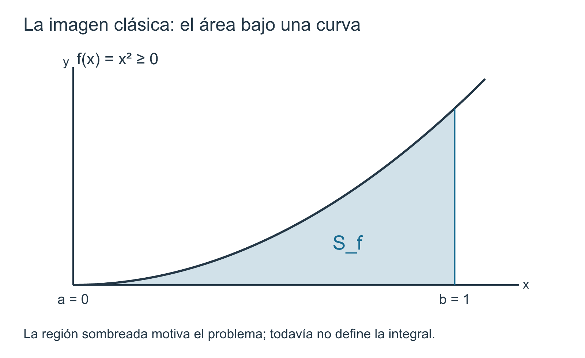
Si dividimos el intervalo \([a,b]\) en franjas verticales, cada franja puede compararse con rectángulos. Un rectángulo de base \(\Delta x\) y altura \(h\) tiene área exacta
\[ h\,\Delta x. \]
Una unión finita de rectángulos no superpuestos se traduce, por tanto, en una suma finita de términos de esta forma. Aquí aparece el núcleo aritmético de la integración:
\[ \boxed{\text{altura}\times\text{anchura} \quad\longrightarrow\quad \sum \text{altura}\times\text{anchura}.} \]
La curva todavía no ha sido integrada. Lo único que hemos hecho es reemplazar un problema geométrico por el cálculo exacto de ciertas figuras escalonadas.
Ejemplo 13.1 El triángulo bajo \(f(x)=x\) visto mediante rectángulos. Consideremos en \([0,1]\) la función
\[ f(x)=x. \]
La región bajo su gráfica es un triángulo rectángulo de base y altura iguales a \(1\), de modo que la geometría elemental proporciona como referencia
\[ A=\frac12. \]
Dividamos ahora \([0,1]\) en \(n\) intervalos iguales de anchura \(1/n\). En el intervalo
\[ \left[\frac{k-1}{n},\frac{k}{n}\right], \qquad 1\le k\le n, \]
la función es creciente. El rectángulo interior más alto que utiliza todo ese subintervalo como base tiene altura \((k-1)/n\), mientras que un rectángulo exterior de altura \(k/n\) cubre la franja correspondiente de la región.
La suma de las áreas interiores es
\[ \begin{aligned} L_n &=\sum_{k=1}^{n} \frac{k-1}{n}\frac1n\\ &=\frac1{n^2}\sum_{j=0}^{n-1}j\\ &=\frac1{n^2}\frac{n(n-1)}2\\ &=\frac{n-1}{2n}. \end{aligned} \]
Análogamente, la suma de las áreas exteriores es
\[ \begin{aligned} U_n &=\sum_{k=1}^{n} \frac{k}{n}\frac1n\\ &=\frac1{n^2}\frac{n(n+1)}2\\ &=\frac{n+1}{2n}. \end{aligned} \]
Por inclusión de regiones,
\[ L_n\le A\le U_n. \]
En este ejemplo podemos comprobar directamente que
\[ \frac{n-1}{2n} \le\frac12 \le\frac{n+1}{2n}. \]
Lo decisivo es la anchura del encierro:
\[ \boxed{U_n-L_n=\frac1n.} \]
Cuando \(n\) crece, esta diferencia tiende a cero. Las dos familias de rectángulos obligan al valor intermedio a quedar encerrado en intervalos cada vez más estrechos.
No hemos usado una integral para obtener \(1/2\): el valor ya era conocido por geometría. El ejemplo sirve para aislar el mecanismo que necesitaremos cuando el área no sea conocida de antemano.
El cálculo anterior contiene ya varios ingredientes de la teoría futura: una división finita del intervalo, alturas elegidas en cada pieza, una suma y una comparación entre sumas. Sin embargo, utilizamos una división particularmente cómoda y una función creciente. Una teoría general no puede depender de esas ventajas.
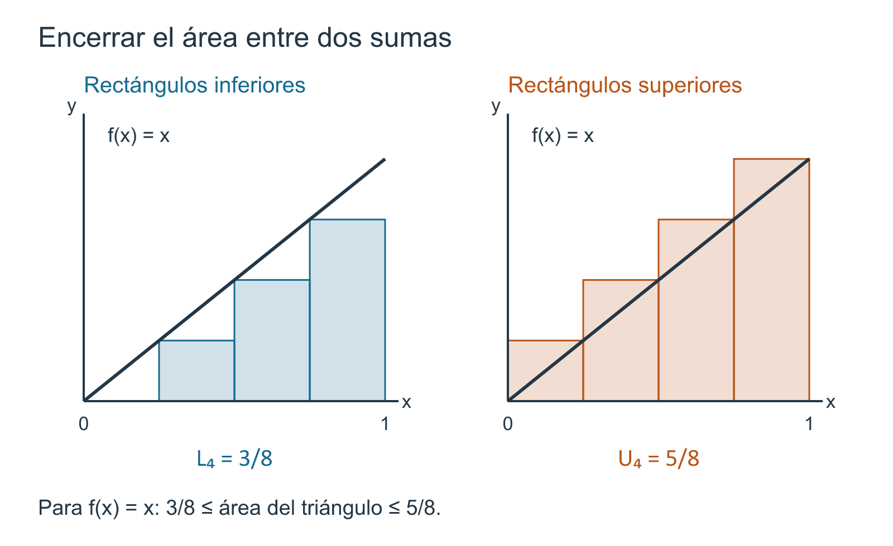
El dibujo no decide qué suma es correcta
En una función arbitraria, incluso acotada, varias decisiones aparecen inmediatamente.
- ¿Cómo se permite dividir \([a,b]\)?
- ¿Qué significa que una división sea más fina que otra?
- ¿Debemos tomar el valor de la función en el extremo izquierdo, en el derecho o en otro punto del subintervalo?
- Si la función no alcanza un mínimo o un máximo en una pieza, ¿qué alturas sirven para construir cotas rigurosas?
- ¿Dos divisiones distintas pueden producir cotas incompatibles?
- ¿Qué significa cuantitativamente que las piezas «se hagan pequeñas»?
Una figura puede sugerir respuestas, pero no resolver estas preguntas. Necesitamos definiciones que no dependan de cómo se haya dibujado la gráfica.
Esta observación será especialmente importante cuando abandonemos las funciones continuas y no negativas. Una función puede tomar valores negativos, tener discontinuidades o no alcanzar sus extremos en ciertos subconjuntos. El objeto analítico que construiremos debe seguir teniendo sentido aun cuando la imagen geométrica de «área ordinaria» deje de ser suficiente.
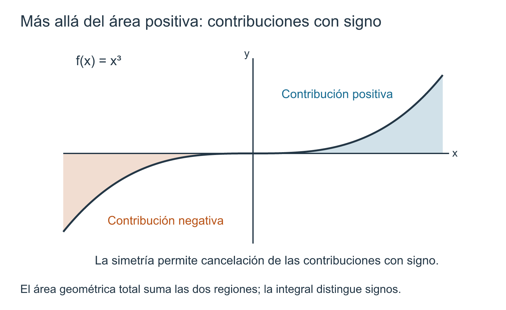
Las cantidades \(L_n\) y \(U_n\) del ejemplo son sumas finitas de áreas de rectángulos. Que ambas se acerquen a \(1/2\) explica qué esperamos de una teoría integral, pero no constituye todavía la definición de la integral de una función general.
Antes debemos demostrar que las construcciones son coherentes frente a cambios de partición y de representación. Esa tarea ocupará este capítulo; la definición general de integrabilidad de Riemann quedará para el siguiente.
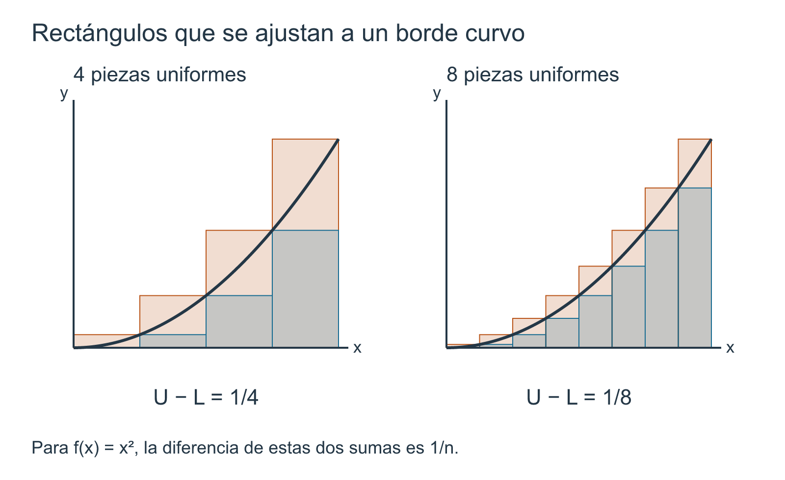
De la aproximación especial al lenguaje general
El ejemplo utilizó \(n\) subintervalos iguales. Esa uniformidad no es esencial. Para adaptarnos a una función que cambia rápidamente en una zona y lentamente en otra necesitaremos intervalos de longitudes distintas. El objeto adecuado será una partición: una colección finita y ordenada de puntos que contiene los dos extremos del intervalo.
Una vez fijada la partición podremos construir dos clases de objetos complementarios.
Por una parte, las funciones escalonadas codificarán exactamente las uniones finitas de rectángulos. Su suma altura por anchura podrá definirse sin recurrir a un proceso límite.
Por otra, para una función acotada cualquiera podremos asociar a cada subintervalo cotas inferiores y superiores. Sus sumas proporcionarán encierros numéricos análogos a \(L_n\) y \(U_n\).
El problema decisivo será entonces algebraico y de orden:
\[ \boxed{ \text{¿qué relaciones entre esas sumas sobreviven cuando cambiamos o refinamos la partición?} } \]
Responder esa pregunta es anterior a definir la integral. Si las cotas dependieran de la partición de manera incompatible, no habría un número único que pudiera merecer ese nombre.
Lo que cambia al entrar en la Parte III
En el cálculo diferencial partíamos de una función y examinábamos su comportamiento alrededor de un punto. La integración invierte parcialmente la escala de observación: dividiremos un intervalo completo en piezas, obtendremos información local en cada una y sumaremos esas contribuciones.
La palabra «local» tendrá ahora un significado diferente. No se trata todavía de tomar una derivada en un punto, sino de controlar una función en cada subintervalo de una descomposición finita. El paso al límite aparecerá después, al estudiar familias cada vez más finas de esas descomposiciones.
El principio rector de este primer capítulo de integración será, por tanto:
\[ \boxed{ \text{la integral no se adivina a partir de una figura;} \quad \text{se construye controlando sumas finitas.} } \]
En §13.2 formalizaremos el primer objeto de esa construcción: particiones, longitudes de subintervalos, refinamientos y malla. Solo después introduciremos funciones escalonadas y las sumas que pueden calcularse exactamente.
Antes de seguir. En el ejemplo de \(f(x)=x\), ¿qué propiedad permite afirmar \(L_n\le A\le U_n\)? ¿Por qué la igualdad \(U_n-L_n=1/n\) aporta más información que saber solamente que ambas sumas parecen cercanas en una gráfica? ¿Qué parte del argumento dejaría de funcionar si la función no fuera creciente? ¿Por qué una teoría general necesita permitir particiones no uniformes?
13.2 Particiones, subintervalos y refinamientos
En §13.1 dividimos \([0,1]\) en intervalos de igual longitud porque esa elección hacía transparente el cálculo. Pero una teoría de integración no puede depender de que la función se comporte de manera uniforme en todo el dominio ni de que todas las franjas tengan el mismo ancho. Necesitamos describir una descomposición finita de \([a,b]\) sin imponer todavía cómo se usarán los valores de la función dentro de cada pieza.
El objeto básico será una partición. La palabra no designará una figura ni una suma: designará únicamente los puntos de corte del intervalo. Mantener separados estos papeles será importante. Primero decidimos dónde cortar; después construiremos funciones escalonadas, cotas o sumas sobre los subintervalos producidos por esos cortes.
Cortar un intervalo sin perderlo
Sea \(a<b\). Si elegimos puntos interiores
\[ a<x_1<\cdots<x_{n-1}<b, \]
obtenemos los subintervalos consecutivos
\[ [a,x_1],\ [x_1,x_2],\ldots,[x_{n-1},b]. \]
La unión de todos ellos es \([a,b]\). Dos subintervalos consecutivos comparten solamente su extremo común. Ese solapamiento en puntos de corte no crea una longitud adicional: la información cuantitativa que utilizaremos será la anchura de cada pieza.
Para evitar que la notación oculte estas condiciones, incorporaremos los extremos, el orden estricto, las longitudes y la malla en una sola definición.
Definición 13.1 Partición, subintervalos, malla y refinamiento. Sean \(a,b\in\mathbb R\) con \(a<b\).
Una partición de \([a,b]\) es un conjunto finito
\[ P=\{x_0,x_1,\ldots,x_n\}, \]
cuyos elementos, escritos en orden creciente, satisfacen
\[ a=x_0<x_1<\cdots<x_n=b, \qquad n\ge1. \]
Los intervalos
\[ I_k=[x_{k-1},x_k], \qquad 1\le k\le n, \]
se llaman subintervalos de la partición, y sus longitudes se denotan por
\[ \Delta x_k:=x_k-x_{k-1}>0. \]
La malla de \(P\) es el número
\[ \boxed{ \|P\|:=\max_{1\le k\le n}\Delta x_k. } \]
Si \(P\) y \(Q\) son particiones del mismo intervalo \([a,b]\), diremos que \(Q\) es un refinamiento de \(P\) si
\[ P\subseteq Q. \]
En ese caso escribiremos \(P\preceq Q\). Si además \(P\ne Q\), diremos que el refinamiento es estricto.
La finitud cumple dos funciones. Primero, solo aparecen finitísimas piezas y las sumas que construiremos en este capítulo serán sumas finitas. Segundo, la lista positiva
\[ \Delta x_1,\ldots,\Delta x_n \]
tiene un máximo; por eso la malla queda definida sin recurrir a un supremo de una familia infinita.
El orden estricto también importa. No admitimos un punto repetido, pues produciría una pieza de longitud cero y rompería la correspondencia simple entre puntos consecutivos y subintervalos. Los extremos \(a\) y \(b\) son obligatorios: una colección de cortes interiores que omita uno de ellos no es, por sí sola, una partición de todo \([a,b]\).
Por ahora suponemos \(a<b\). El intervalo degenerado \([a,a]\) requerirá una convención aparte cuando estudiemos la aditividad y la orientación de las integrales; no necesitamos anticiparla para construir la teoría de particiones no degeneradas.
Dos identidades que conviene ver antes de sumar funciones
La primera información de una partición no depende de ninguna función. Las longitudes de sus piezas recuperan exactamente la longitud total:
\[ \begin{aligned} \sum_{k=1}^n\Delta x_k &=\sum_{k=1}^n(x_k-x_{k-1})\\ &=(x_1-x_0)+(x_2-x_1)+\cdots+(x_n-x_{n-1})\\ &=x_n-x_0\\ &=b-a. \end{aligned} \]
La cancelación es telescópica. Más adelante, cuando una función constante de valor \(c\) aparezca sobre cada pieza, esta identidad convertirá inmediatamente la suma de rectángulos en \(c(b-a)\).
La segunda observación es una cota elemental. Cada anchura satisface
\[ 0<\Delta x_k\le\|P\|. \]
La malla controla, pues, el peor tamaño de las piezas. No afirma que todas tengan la misma longitud ni informa cuántas alcanzan el máximo.
Particiones uniformes: un caso especial, no la definición
La partición utilizada en Ejemplo 13.1 es un caso particularmente simétrico. Para un entero \(n\ge1\), definamos
\[ P_n= \left\{ a+k\frac{b-a}{n}:0\le k\le n \right\}. \]
Sus \(n\) subintervalos tienen la misma longitud:
\[ \Delta x_k=\frac{b-a}{n}, \]
y por tanto
\[ \boxed{\|P_n\|=\frac{b-a}{n}.} \]
Cuando \(n\) crece, esta malla tiende a cero. Esa afirmación pertenece a la sucesión de particiones \((P_n)\), no a una partición aislada. Una partición individual tiene una malla fija.
Las particiones uniformes serán útiles para ejemplos y cálculos explícitos, pero no constituyen la noción general. Si una función presenta variación intensa cerca de un punto y es casi constante en otro tramo, puede ser más eficiente colocar muchos cortes en la primera zona y pocos en la segunda. La definición permite precisamente esa flexibilidad.
Refinar significa conservar todos los cortes anteriores
Si \(P\preceq Q\), cada punto de corte de \(P\) sigue presente en \(Q\). El refinamiento puede insertar nuevos puntos, pero no desplaza ni elimina los antiguos. En consecuencia, cada subintervalo de \(Q\) está contenido en algún subintervalo de \(P\).
Esta última frase es el hecho geométrico que más tarde permitirá comparar sumas. Un rectángulo construido sobre una pieza de \(P\) puede ser reemplazado por varios rectángulos apoyados en piezas más pequeñas de \(Q\), sin mezclar información perteneciente a dos piezas distintas de \(P\).
La relación \(\preceq\) posee además las propiedades esperadas de la inclusión:
- \(P\preceq P\);
- si \(P\preceq Q\) y \(Q\preceq R\), entonces \(P\preceq R\);
- si \(P\preceq Q\) y \(Q\preceq P\), entonces \(P=Q\).
Así, sobre las particiones de un intervalo fijo, el refinamiento es un orden parcial. No todas las particiones son comparables: dos de ellas pueden contener cortes diferentes sin que una contenga a la otra.
Dos particiones incompatibles siempre pueden compararse después
La posibilidad de comparar construcciones provenientes de particiones distintas será esencial. El mecanismo es sencillo pero merece quedar probado antes de utilizarlo.
Proposición 13.1 Proposición (refinamiento común y control de la malla). Sean \(P\) y \(Q\) particiones de un mismo intervalo \([a,b]\).
- El conjunto \[ P\vee Q:=P\cup Q \] es una partición de \([a,b]\) que refina tanto a \(P\) como a \(Q\).
- Si \(R\) es cualquier partición que refina simultáneamente a \(P\) y a \(Q\), entonces \[ P\vee Q\subseteq R. \] Por tanto, \(P\vee Q\) es el refinamiento común mínimo de ambas respecto de la inclusión.
- Si \(P\preceq Q\), entonces \[ \boxed{\|Q\|\le\|P\|.} \]
La recíproca de la tercera afirmación es falsa: una malla menor no implica que haya refinamiento.
Demostración. Como \(P\) y \(Q\) son finitos, \(P\cup Q\) también lo es. Los dos contienen \(a\) y \(b\); por tanto su unión contiene ambos extremos. Al ordenar estrictamente los elementos distintos de \(P\cup Q\) obtenemos una partición de \([a,b]\). Las inclusiones
\[ P\subseteq P\cup Q, \qquad Q\subseteq P\cup Q \]
prueban que refina a las dos.
Si \(R\) refina simultáneamente a \(P\) y a \(Q\), entonces \(P\subseteq R\) y \(Q\subseteq R\). En consecuencia,
\[ P\cup Q\subseteq R, \]
lo que prueba la segunda afirmación.
Supongamos ahora \(P\preceq Q\). Sean \(y_{j-1}<y_j\) dos puntos consecutivos de \(Q\). Como todos los puntos de \(P\) pertenecen a \(Q\), ningún punto de \(P\) puede quedar estrictamente entre \(y_{j-1}\) y \(y_j\); de lo contrario también sería un punto de \(Q\) entre dos elementos consecutivos de \(Q\).
Por ello existe un subintervalo \([x_{k-1},x_k]\) de \(P\) que contiene \([y_{j-1},y_j]\). Entonces
\[ y_j-y_{j-1}\le x_k-x_{k-1}\le\|P\|. \]
Esto vale para cada subintervalo de \(Q\). Tomando el máximo de sus longitudes,
\[ \|Q\|\le\|P\|. \]
La falsedad de la recíproca aparecerá en el ejemplo siguiente. \(\square\)
La primera parte proporciona una herramienta de comparación que usaremos repetidamente. Si dos sumas fueron construidas sobre \(P\) y \(Q\), no necesitaremos decidir cuál partición es «mejor». Podremos trasladar ambas construcciones al refinamiento común \(P\vee Q\) y compararlas allí.
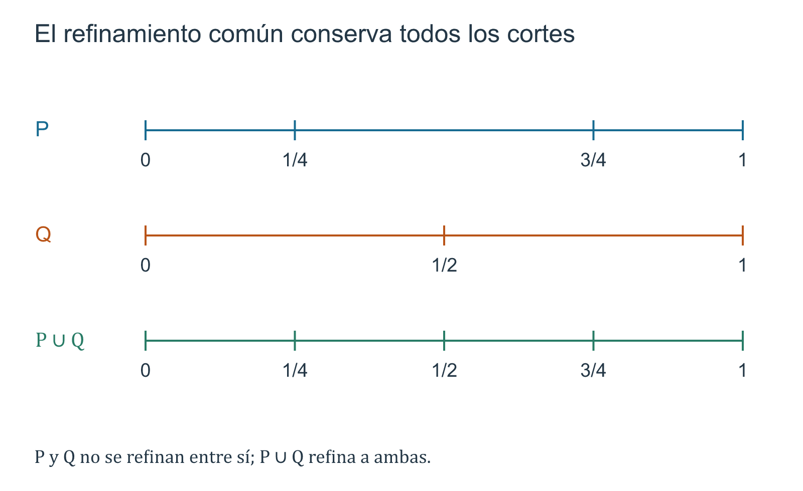
Refinamiento y malla no dicen lo mismo
Ejemplo 13.2 Tres particiones de \([0,1]\) y dos nociones que no deben confundirse. Consideremos
\[ P=\left\{0,\frac12,1\right\}, \]
\[ Q=\left\{0,\frac14,\frac12,\frac34,1\right\}, \]
y
\[ R=\left\{0,\frac13,\frac23,1\right\}. \]
Tenemos \(P\subset Q\), luego
\[ P\preceq Q. \]
Sus mallas son
\[ \|P\|=\frac12, \qquad \|Q\|=\frac14. \]
En cambio,
\[ \|R\|=\frac13<\frac12=\|P\|, \]
pero \(R\) no refina a \(P\), porque \(1/2\notin R\). La desigualdad de mallas solo afirma que la pieza más larga de \(R\) es menor que la pieza más larga de \(P\); no afirma que \(R\) conserve los cortes de \(P\).
El refinamiento común de \(P\) y \(R\) es
\[ P\vee R = \left\{ 0,\frac13,\frac12,\frac23,1 \right\}. \]
Sus longitudes consecutivas son
\[ \frac13,\quad\frac16,\quad\frac16,\quad\frac13, \]
de modo que
\[ \|P\vee R\|=\frac13. \]
Como predice Proposición 13.1,
\[ \|P\vee R\| \le\min\{\|P\|,\|R\|\} =\frac13. \]
Este ejemplo muestra tres hechos diferentes: \(Q\) es un refinamiento genuino de \(P\); \(R\) tiene malla menor que \(P\) sin refinarla; y \(P\vee R\) conserva simultáneamente todos los cortes de ambas.
La última desigualdad del ejemplo puede generalizarse inmediatamente: como \(P\preceq P\vee Q\) y \(Q\preceq P\vee Q\),
\[ \|P\vee Q\|\le\min\{\|P\|,\|Q\|\}. \]
No hace falta numerar esta consecuencia como un nuevo resultado: es una aplicación doble de Proposición 13.1.
Añadir un punto: la operación elemental de refinamiento
Todo refinamiento finito puede construirse añadiendo puntos uno por uno. Conviene examinar qué sucede en un solo paso.
Supongamos que \(P\) contiene el subintervalo \([u,v]\) y añadimos un punto \(c\) con
\[ u<c<v. \]
La pieza de longitud \(v-u\) queda sustituida por dos piezas de longitudes
\[ c-u, \qquad v-c, \]
y
\[ (c-u)+(v-c)=v-u. \]
La longitud total no cambia, pero ninguna de las dos nuevas piezas es más larga que la antigua. Esta es la versión local de la desigualdad de mallas demostrada arriba.
Más adelante, el mismo paso tendrá dos efectos distintos según el objeto que estemos estudiando:
- para una función escalonada que ya sea constante en \([u,v]\) salvo quizá en los puntos de corte, subdividir esa franja no deberá cambiar su suma altura por anchura;
- para las cotas de una función general, disponer de piezas menores podrá mejorar la información inferior y superior.
La compatibilidad entre esas dos conductas es una de las razones por las que el refinamiento ocupa un lugar estructural en la teoría.
Una malla pequeña no especifica una partición
Fijar un número \(\delta>0\) y exigir
\[ \|P\|<\delta \]
no determina una partición única. Hay muchas maneras de cortar \([a,b]\) respetando ese umbral. Esta multiplicidad no es un defecto: la futura definición de integral deberá ser robusta frente a todas las particiones suficientemente finas, no depender de una secuencia especialmente escogida porque produzca el valor que esperamos.
Todavía no formularemos esa definición. Por ahora basta retener la distinción:
\[ \boxed{ \text{refinamiento} = \text{relación entre dos particiones}, } \]
mientras que
\[ \boxed{ \text{malla} = \text{un número asociado a una partición}. } \]
El refinamiento recuerda qué cortes se conservaron; la malla informa únicamente qué tan grande es la pieza más grande.
En lenguaje informal se dice a menudo que una partición es «más fina» que otra. En este libro reservaremos refinamiento para la relación exacta \(P\subseteq Q\).
Una partición puede tener malla menor sin contener los puntos de la otra. Cuando necesitemos comparar dos particiones no comparables, utilizaremos su refinamiento común \(P\vee Q\).
Laboratorio de lectura de particiones
Falta un extremo. El conjunto \(\{a,(a+b)/2\}\) no es una partición de \([a,b]\): falta \(b\). Añadirlo produce tres puntos y dos subintervalos.
Hay un punto repetido en la lista. Escribir \(a=x_0<x_1\le x_2=b\) no cumple la definición si \(x_1=x_2\). La desigualdad estricta es parte del objeto; una repetición no crea una nueva pieza.
Se compara solo el número de subintervalos. Tener más piezas no implica por sí mismo refinar otra partición. Dos particiones con cuatro subintervalos pueden usar cortes completamente distintos. Para probar refinamiento hay que comprobar inclusión de conjuntos de puntos.
Se compara solo la malla. De \(\|Q\|<\|P\|\) no se deduce \(P\preceq Q\). Ejemplo 13.2 proporciona un contraejemplo exacto.
Se añaden cortes sucesivamente. Si \(P=P_0\preceq P_1\preceq\cdots\preceq P_m=Q\), entonces la transitividad da \(P\preceq Q\), y Proposición 13.1 produce
\[ \|Q\|\le\cdots\le\|P_1\|\le\|P\|. \]
No hemos usado límites ni integrales para obtener esta cadena; es una propiedad finita del orden de los cortes.
Lo que queda preparado para las funciones escalonadas
Ya disponemos de la infraestructura geométrica y combinatoria de las sumas futuras:
\[ \boxed{ \begin{gathered} [a,b]\ \longrightarrow\ P=\{x_0,\ldots,x_n\}\\ \longrightarrow\ I_k=[x_{k-1},x_k],\ \Delta x_k>0\\ \longrightarrow\ \|P\|\text{ y refinamientos}. \end{gathered} } \]
La siguiente pregunta será qué funciones pueden describirse exactamente mediante una altura constante en cada una de estas franjas. Esa será la función de las funciones escalonadas de §13.3.
Allí aparecerá una dificultad que el refinamiento común ya está preparado para resolver: la misma función puede ser constante respecto de varias particiones diferentes. Antes de asociarle una suma definitiva tendremos que demostrar que cambiar la representación no cambia el número calculado.
Antes de seguir. ¿Por qué la finitud de una partición permite hablar de su malla como máximo y no solo como supremo? ¿Qué identidad satisfacen siempre las longitudes \(\Delta x_k\)? ¿Por qué \(P\preceq Q\) obliga a \(\|Q\|\le\|P\|\)? ¿Por qué la desigualdad estricta de mallas no implica la inclusión de los puntos? Si dos particiones no son comparables, ¿qué construcción permite conservar simultáneamente todos sus cortes?
13.3 Funciones escalonadas y regiones por rectángulos
Las particiones de §13.2 dividen el intervalo, pero todavía no asignan ninguna altura a sus piezas. El siguiente objeto hace exactamente eso: una función que, entre dos cortes consecutivos, mantiene un valor constante.
Esta idea parece elemental, pero contiene una dificultad que debemos resolver desde el principio. Dos subintervalos cerrados consecutivos,
\[ [x_{k-1},x_k] \qquad\text{y}\qquad [x_k,x_{k+1}], \]
comparten el punto \(x_k\). Si exigiéramos que la función fuese constante en ambos intervalos cerrados, dos escalones de alturas distintas obligarían absurdamente al valor \(s(x_k)\) a ser simultáneamente esas dos alturas. Por ello la constancia se formulará sobre los intervalos abiertos determinados por la partición.
Constante entre los cortes
Definición 13.2 Función escalonada y partición representante. Sean \(a,b\in\mathbb R\) con \(a<b\), y sea
\[ P=\{x_0,x_1,\ldots,x_n\}, \qquad a=x_0<x_1<\cdots<x_n=b, \]
una partición de \([a,b]\).
Una función
\[ s:[a,b]\longrightarrow\mathbb R \]
se dice escalonada respecto de \(P\) si para cada \(k\in\{1,\ldots,n\}\) existe un número real \(c_k\) tal que
\[ \boxed{ s(x)=c_k \quad\text{para todo }x\in(x_{k-1},x_k). } \]
En ese caso diremos que \(P\) representa a \(s\) y llamaremos \(c_k\) la altura de \(s\) en el \(k\)-ésimo subintervalo.
Diremos simplemente que \(s\) es una función escalonada en \([a,b]\) si existe al menos una partición de \([a,b]\) que la represente.
La definición contiene un cuantificador existencial importante:
\[ \boxed{ s\text{ es escalonada} \iff \text{existe una partición finita que la representa}. } \]
No se exige, por tanto, que nos entreguen de antemano una partición privilegiada ni que la representación sea única.
Los valores
\[ s(x_0),s(x_1),\ldots,s(x_n) \]
deben existir porque el dominio de \(s\) es todo \([a,b]\), pero no están obligados a coincidir con las alturas vecinas. Por ejemplo, si \(c_k\ne c_{k+1}\), el valor en el corte \(x_k\) puede ser \(c_k\), \(c_{k+1}\) o cualquier otro número real sin destruir la constancia en
\[ (x_{k-1},x_k) \quad\text{y}\quad (x_k,x_{k+1}). \]
Esto no significa que el valor puntual sea irrelevante para la función: cambiar \(s(x_k)\) produce, en general, otra función. Lo que significa es más preciso: el valor aislado en el corte no modifica las alturas de las franjas de anchura positiva.
De los escalones a los rectángulos
Supongamos por un momento que todas las alturas son no negativas:
\[ c_k\ge0. \]
Sobre cada intervalo abierto \((x_{k-1},x_k)\), la gráfica mantiene la altura \(c_k\). Ignorando momentáneamente las líneas verticales situadas en los cortes, la región geométrica correspondiente se descompone en un número finito de franjas rectangulares de anchuras
\[ \Delta x_k=x_k-x_{k-1} \]
y alturas \(c_k\).
Cada una posee un área elemental
\[ c_k\Delta x_k. \]
Por eso las funciones escalonadas constituyen el primer caso donde la idea de «sumar contribuciones locales» puede ejecutarse mediante aritmética finita y exacta.
Pero el concepto analítico será más amplio que esta imagen. Permitiremos también alturas negativas. En ese caso ya no estamos describiendo simplemente un área geométrica ordinaria no negativa; estamos preparando una suma con signo. Esta separación será esencial más adelante: la integral no será sinónimo de «área positiva bajo una gráfica».
Una representación no es única
Si una función es constante en una franja, podemos insertar puntos de corte adicionales dentro de ella sin perder la constancia. El refinamiento construido en §13.2 formaliza esta observación.
Proposición 13.2 Proposición (transporte de una representación por refinamiento). Sea \(s:[a,b]\to\mathbb R\) una función escalonada respecto de una partición \(P\).
- Si \(P\preceq Q\), entonces \(s\) también es escalonada respecto de \(Q\).
- Si \(P\) y \(Q\) representan a la misma función \(s\), entonces el refinamiento común \[ P\vee Q=P\cup Q \] también representa a \(s\).
- Si \(\widetilde s:[a,b]\to\mathbb R\) satisface \[ \widetilde s(x)=s(x) \qquad\text{para todo }x\in[a,b]\setminus P, \] entonces \(P\) también representa a \(\widetilde s\), cualesquiera que sean los valores reales asignados a \(\widetilde s\) en los puntos de \(P\).
Demostración. Supongamos primero \(P\preceq Q\). Por Proposición 13.1, cada subintervalo determinado por dos puntos consecutivos de \(Q\) queda contenido en algún subintervalo de \(P\). Más precisamente, si
\[ y_{j-1}<y_j \]
son consecutivos en \(Q\), no puede haber un punto de \(P\) estrictamente entre ellos, porque \(P\subseteq Q\). Por tanto existe \(k\) tal que
\[ (y_{j-1},y_j)\subseteq(x_{k-1},x_k). \]
Como \(s\) es constante en \((x_{k-1},x_k)\), también lo es en su subconjunto \((y_{j-1},y_j)\). Así \(Q\) representa a \(s\).
La segunda afirmación es inmediata de la primera: Proposición 13.1 demuestra que \(P\vee Q\) refina tanto a \(P\) como a \(Q\).
Para la tercera, los intervalos abiertos
\[ (x_{k-1},x_k) \]
no contienen puntos de \(P\). En todos ellos \(\widetilde s=s\), de modo que \(\widetilde s\) conserva exactamente las mismas alturas \(c_k\). Los valores modificados en los cortes no afectan la condición de constancia exigida por Definición 13.2. \(\square\)
La proposición tiene dos consecuencias conceptuales distintas.
Primero, una partición representante puede refinarse libremente. La función no cambia; solo cambia la manera finita de describir sus franjas constantes.
Segundo, las alturas sobre los intervalos abiertos no determinan por sí solas todos los valores de la función. Dos funciones distintas pueden compartir las mismas alturas entre cortes y diferir únicamente en los puntos de la partición.
Estas dos observaciones explican qué debe demostrarse en §13.4: si queremos asociar a una función escalonada la suma de sus «altura por anchura», ese número deberá ser independiente de la partición representante y no deberá recibir contribuciones artificiales de puntos aislados.
Un mismo perfil, muchas particiones
Ejemplo 13.3 Una función escalonada con valores excepcionales en los cortes. Definamos \(s:[0,4]\to\mathbb R\) mediante
\[ s(x)= \begin{cases} 2, & 0<x<1,\\ 1, & 1<x<3,\\ 3, & 3<x<4, \end{cases} \]
y fijemos, por ejemplo,
\[ s(0)=7, \qquad s(1)=5, \qquad s(3)=10, \qquad s(4)=0. \]
La partición
\[ P=\{0,1,3,4\} \]
representa a \(s\), con alturas
\[ 2,\ 1,\ 3 \]
y anchuras
\[ 1,\ 2,\ 1. \]
Los valores \(7,5,10,0\) en los puntos de corte no son las alturas de las franjas; son valores puntuales adicionales de la función.
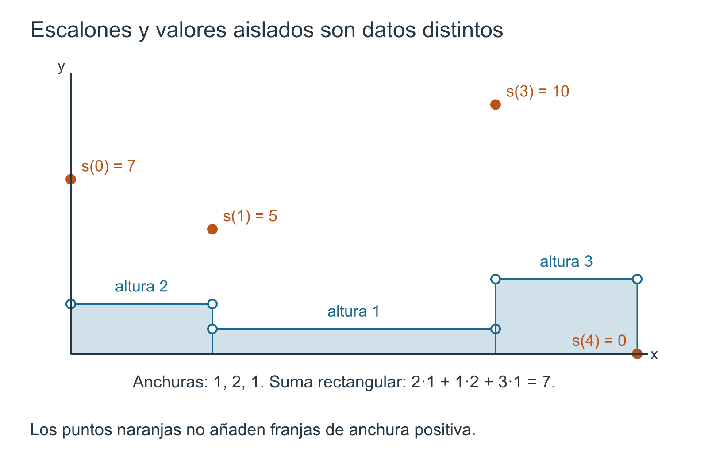
Ahora consideremos
\[ Q= \left\{ 0,\frac12,1,2,3,\frac72,4 \right\}. \]
Como \(P\subseteq Q\), tenemos \(P\preceq Q\). Por Proposición 13.2, \(Q\) también representa a \(s\). Las alturas correspondientes a las seis franjas son
\[ 2,\ 2,\ 1,\ 1,\ 3,\ 3. \]
La suma puramente geométrica de las áreas de los rectángulos de anchura positiva es, usando \(P\),
\[ 2\cdot1+1\cdot2+3\cdot1=7. \]
Si subdividimos las mismas franjas usando \(Q\), obtenemos exactamente
\[ 2\left(\frac12+\frac12\right) +1(1+1) +3\left(\frac12+\frac12\right) =7. \]
Este cálculo no es todavía una definición general de integral. Es un ejemplo de la identidad finita que la demostración de §13.4 deberá establecer para cualquier refinamiento y, después, para cualesquiera dos particiones representantes.
El ejemplo revela por qué la independencia de representación no puede declararse por intuición. Aquí la igualdad se comprueba a mano porque cada intervalo original fue simplemente subdividido. En general tendremos que demostrar que toda subdivisión conserva la suma altura por anchura y luego pasar a un refinamiento común.
Los puntos aislados pueden ser escalones de anchura cero solo en sentido informal
Consideremos una función \(r:[0,1]\to\mathbb R\) dada por
\[ r(x)=0 \quad\text{si }x\notin\left\{\frac13,\frac23\right\}, \]
con
\[ r\left(\frac13\right)=5, \qquad r\left(\frac23\right)=-4. \]
La partición
\[ P=\left\{0,\frac13,\frac23,1\right\} \]
representa a \(r\), porque la función vale \(0\) en cada subintervalo abierto de \(P\).
Es tentador decir que los valores \(5\) y \(-4\) forman «rectángulos de anchura cero». Usaremos esa frase, si aparece, solo como intuición. Formalmente no hemos añadido subintervalos degenerados a la partición: Definición 13.1 exige longitudes positivas. Los dos valores excepcionales son simplemente valores de la función en puntos de corte.
Esta precisión evita introducir por la puerta trasera una teoría de área de conjuntos de un punto. La futura suma escalonada podrá ignorar esos valores por su propia definición algebraica, sin necesitar todavía demostrar que los puntos tienen área cero.
Tener pocos valores no basta
El nombre «escalonada» no significa únicamente «función con un número finito de valores». La estructura decisiva es la existencia de finitos cortes entre los cuales la función sea constante.
Ejemplo 13.4 Una función con solo dos valores que no es escalonada. Definamos \(d:[0,1]\to\mathbb R\) por
\[ d(x)= \begin{cases} 1, & x\in\mathbb Q,\\ 0, & x\notin\mathbb Q. \end{cases} \]
La imagen de \(d\) contiene solamente dos números, \(0\) y \(1\). Sin embargo, \(d\) no es escalonada.
En efecto, supongamos que una partición finita
\[ P=\{x_0,\ldots,x_n\} \]
representara a \(d\). Como \(x_{k-1}<x_k\), cada intervalo abierto
\[ (x_{k-1},x_k) \]
es no vacío. Por la densidad de los racionales y de los irracionales demostrada en Sección 1.8, contiene al menos un racional \(q\) y un irracional \(u\). Entonces
\[ d(q)=1, \qquad d(u)=0, \]
por lo que \(d\) no es constante en ese subintervalo abierto. Esto contradice Definición 13.2.
Por tanto, una imagen finita no garantiza una descomposición finita del dominio en franjas constantes.
Este contraejemplo marca una frontera que será importante más adelante. Las funciones escalonadas son muy simples desde el punto de vista de su estructura horizontal, pero la teoría de integración deberá enfrentarse a funciones que no admiten ninguna representación de este tipo.
No extraeremos todavía de Ejemplo 13.4 ninguna conclusión sobre integrabilidad. Esa pregunta pertenece a C15.
Qué información conserva una representación
Si \(P\) representa a \(s\), la información necesaria para describir sus franjas constantes consta de
\[ \boxed{ P=\{x_0,\ldots,x_n\}, \qquad (c_1,\ldots,c_n). } \]
A partir de ella conocemos, para cada \(k\),
\[ \text{anchura }\Delta x_k=x_k-x_{k-1} \qquad\text{y altura }c_k. \]
Los valores \(s(x_k)\) en los cortes pertenecen también a la función completa, pero no son parte de la lista de alturas de los intervalos abiertos.
Esta distinción permitirá que la próxima sección formule el candidato natural
\[ \sum_{k=1}^n c_k\Delta x_k \]
sin confundir tres objetos diferentes:
- la función \(s\) completa;
- una partición concreta que la representa;
- la lista de alturas correspondiente a esa representación.
La dificultad será demostrar que, aunque los objetos 2 y 3 pueden cambiar al refinar o elegir otra representación, el número calculado no cambia.
Lo que todavía no podemos escribir sin prueba
A partir de Ejemplo 13.3 resulta muy natural querer escribir inmediatamente
\[ \int_a^b s(x)\,dx =\sum_{k=1}^n c_k\Delta x_k. \]
Pero hacerlo ahora escondería exactamente la cuestión que debemos resolver. La función \(s\) puede admitir otra partición representante
\[ Q=\{y_0,\ldots,y_m\} \]
con otra lista de alturas
\[ d_1,\ldots,d_m. \]
Antes de utilizar el símbolo integral debemos demostrar que
\[ \sum_{k=1}^n c_k(x_k-x_{k-1}) = \sum_{j=1}^m d_j(y_j-y_{j-1}). \]
El refinamiento común Proposición 13.1 y el transporte Proposición 13.2 contienen ya toda la infraestructura necesaria para esa prueba.
Por eso el siguiente paso no será «integrar» una función más complicada. Será probar que la primera integral que definamos está bien definida.
Antes de seguir. ¿Por qué la constancia se exige en los intervalos abiertos y no en los cerrados? ¿Qué parte de una función escalonada puede cambiar sin alterar sus alturas entre cortes? ¿Por qué un refinamiento de una partición representante sigue representando la misma función? ¿Por qué tener imagen finita no basta para ser escalonada? ¿Qué igualdad debe demostrarse antes de que la expresión \(\sum c_k\Delta x_k\) pueda recibir legítimamente el nombre de integral?
13.4 La integral elemental de una función escalonada
La sección anterior terminó con una expresión natural pero todavía sospechosa. Si una función escalonada \(s\) está representada por
\[ P=\{x_0,x_1,\ldots,x_n\}, \qquad a=x_0<\cdots<x_n=b, \]
y toma el valor constante \(c_k\) en cada intervalo abierto \((x_{k-1},x_k)\), la suma
\[ \sum_{k=1}^n c_k(x_k-x_{k-1}) \]
es exactamente lo que sugiere el cálculo de rectángulos: altura por anchura, sumado sobre todas las franjas.
Pero \(P\) no forma parte de la identidad de la función. La misma \(s\) puede admitir otra partición representante con otro número de subintervalos. Por ello no definiremos todavía la integral mediante esa fórmula. Primero debemos demostrar que el número no depende de la representación elegida.
La suma rectangular de una representación
Fijemos temporalmente una partición representante \(P\) de \(s\). Si
\[ s(x)=c_k \qquad \text{para }x\in(x_{k-1},x_k), \]
definimos solo para esta representación su suma rectangular por
\[ \mathcal R(s;P) := \sum_{k=1}^n c_k\Delta x_k = \sum_{k=1}^n c_k(x_k-x_{k-1}). \]
La notación conserva deliberadamente a \(P\). En este momento todavía no hemos demostrado que \(\mathcal R(s;P)\) sea una propiedad de \(s\) sola.
Los valores \(s(x_k)\) en los puntos de corte no aparecen en esta suma. No diremos que esos puntos «tienen área cero» como premisa: simplemente, la definición algebraica de \(\mathcal R(s;P)\) utiliza las alturas de los intervalos abiertos y sus anchuras positivas.
Subdividir una franja no cambia su contribución total
El caso fundamental es insertar nuevos cortes sin cambiar la función.
Lema 13.1 Lema (invariancia de la suma rectangular bajo refinamiento). Sea \(s:[a,b]\to\mathbb R\) escalonada respecto de una partición
\[ P=\{x_0,\ldots,x_n\}, \]
y sea \(Q\) un refinamiento de \(P\). Entonces \(Q\) también representa a \(s\) por Proposición 13.2 y
\[ \boxed{ \mathcal R(s;Q)=\mathcal R(s;P). } \]
Demostración. Escribamos
\[ Q=\{y_0,\ldots,y_m\}, \]
con los puntos ordenados crecientemente. Como \(P\subseteq Q\), para cada \(i\in\{0,\ldots,n\}\) existe un índice \(r_i\) tal que
\[ x_i=y_{r_i}, \]
y
\[ 0=r_0<r_1<\cdots<r_n=m. \]
Fijemos un subintervalo original \((x_{i-1},x_i)\), donde \(s\) vale constantemente \(c_i\). Los puntos de \(Q\) que subdividen esta franja son
\[ y_{r_{i-1}}=x_{i-1} <y_{r_{i-1}+1}<\cdots<y_{r_i}=x_i. \]
Cada intervalo abierto
\[ (y_{j-1},y_j), \qquad r_{i-1}<j\le r_i, \]
está contenido en \((x_{i-1},x_i)\). Por tanto la altura inducida por \(Q\) en todas esas piezas sigue siendo \(c_i\).
La contribución de las piezas refinadas dentro de la franja original es entonces
\[ \begin{aligned} \sum_{j=r_{i-1}+1}^{r_i} c_i(y_j-y_{j-1}) &=c_i \sum_{j=r_{i-1}+1}^{r_i}(y_j-y_{j-1})\\ &=c_i(y_{r_i}-y_{r_{i-1}})\\ &=c_i(x_i-x_{i-1}). \end{aligned} \]
La igualdad central es telescópica. Así, subdividir la \(i\)-ésima franja no cambia su contribución total.
Sumando esta identidad para \(i=1,\ldots,n\) obtenemos
\[ \mathcal R(s;Q) = \sum_{i=1}^n c_i(x_i-x_{i-1}) = \mathcal R(s;P). \]
Esto prueba el lema. \(\square\)
La prueba contiene la identidad aritmética esencial de toda la construcción:
\[ \boxed{ c(v-u) =c(t_1-u)+c(t_2-t_1)+\cdots+c(v-t_r) } \]
cuando los puntos intermedios subdividen \([u,v]\). El refinamiento no añade ni quita anchura; solo reparte la misma longitud entre más sumandos que conservan la misma altura.
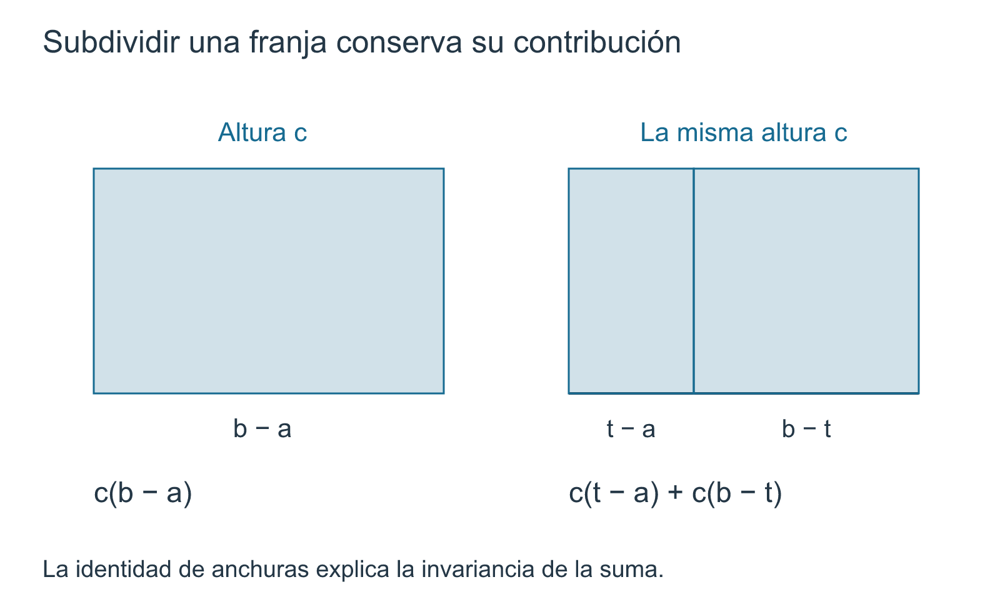
Dos representaciones arbitrarias dan el mismo número
El lema resuelve el caso en que una partición refina a la otra. Para dos representaciones no comparables utilizamos exactamente la herramienta construida en §13.2: su refinamiento común.
Teorema 13.1 Teorema (independencia de la partición representante). Sea \(s:[a,b]\to\mathbb R\) una función escalonada. Si \(P\) y \(Q\) son dos particiones que representan a \(s\), entonces
\[ \boxed{ \mathcal R(s;P)=\mathcal R(s;Q). } \]
En consecuencia, la suma altura por anchura depende de la función escalonada \(s\) y del intervalo \([a,b]\), pero no de la partición escogida para representarla.
Demostración. Por Proposición 13.1,
\[ R:=P\vee Q=P\cup Q \]
es una partición que refina simultáneamente a \(P\) y a \(Q\). Por Proposición 13.2, \(R\) también representa a \(s\).
Aplicando Lema 13.1 primero a \(P\preceq R\) y luego a \(Q\preceq R\),
\[ \mathcal R(s;P)=\mathcal R(s;R) \]
y
\[ \mathcal R(s;Q)=\mathcal R(s;R). \]
Por transitividad de la igualdad,
\[ \mathcal R(s;P)=\mathcal R(s;Q). \]
Eso era lo que faltaba demostrar. \(\square\)
El argumento es corto porque las dos secciones anteriores prepararon su infraestructura. La lógica completa es
\[ \boxed{ \text{dos representaciones} \longrightarrow \text{refinamiento común} \longrightarrow \text{invariancia bajo refinamiento} \longrightarrow \text{un único número}. } \]
Ahora sí: la integral elemental
Una vez demostrada la independencia, podemos retirar de la notación la partición auxiliar.
Definición 13.3 Integral elemental de una función escalonada. Sean \(a,b\in\mathbb R\) con \(a<b\) y sea \(s:[a,b]\to\mathbb R\) una función escalonada. Si
\[ P=\{x_0,\ldots,x_n\} \]
es cualquier partición que representa a \(s\) y
\[ s(x)=c_k \qquad \text{para }x\in(x_{k-1},x_k), \]
definimos
\[ \boxed{ \int_a^b s(x)\,dx := \sum_{k=1}^n c_k(x_k-x_{k-1}). } \]
Por Teorema 13.1, el valor del miembro derecho es independiente de la partición representante. Por ello la definición está bien definida.
El adjetivo elemental recuerda el alcance actual: el símbolo integral acaba de ser definido para funciones escalonadas y nada más. Todavía no hemos definido \(\int_a^b f\) para una función acotada general, continua o no. Esa extensión pertenece a C15.
La letra \(x\) en
\[ \int_a^b s(x)\,dx \]
funciona aquí como variable ligada de la notación. El número se obtiene de las alturas constantes de \(s\) y de las longitudes de los intervalos de una representación; no estamos introduciendo todavía una operación inversa de la derivación ni usando el teorema fundamental del cálculo.
El ejemplo anterior ya puede recibir legítimamente el símbolo integral
Ejemplo 13.5 La misma función, dos cálculos y una sola integral. Retomemos la función de Ejemplo 13.3, representada por
\[ P=\{0,1,3,4\}, \]
con alturas \(2\), \(1\) y \(3\) en los intervalos abiertos correspondientes. Entonces
\[ \begin{aligned} \int_0^4 s(x)\,dx &=2(1-0)+1(3-1)+3(4-3)\\ &=2+2+3\\ &=7. \end{aligned} \]
Si usamos el refinamiento
\[ Q=\left\{0,\frac12,1,2,3,\frac72,4\right\}, \]
obtenemos
\[ \begin{aligned} \int_0^4 s(x)\,dx &=2\left(\frac12+\frac12\right) +1(1+1) +3\left(\frac12+\frac12\right)\\ &=7. \end{aligned} \]
La igualdad de ambos cálculos ya no es una coincidencia verificada a mano: es una instancia de Teorema 13.1.
Además, los valores excepcionales que \(s\) pueda tomar en los puntos de corte no aparecen en ninguna de las dos sumas. La integral elemental depende de las franjas constantes, no de esos valores aislados.
Cambiar finitísimos valores no altera la integral escalonada
La libertad en los puntos de corte puede expresarse de una manera más general.
Corolario 13.1 Corolario (invariancia ante modificaciones finitas). Sean \(s,t:[a,b]\to\mathbb R\) funciones escalonadas. Supongamos que existe un conjunto finito \(F\subseteq[a,b]\) tal que
\[ s(x)=t(x) \qquad \text{para todo }x\in[a,b]\setminus F. \]
Entonces
\[ \boxed{ \int_a^b s(x)\,dx = \int_a^b t(x)\,dx. } \]
Demostración. Sean \(P_s\) y \(P_t\) particiones representantes de \(s\) y \(t\). Consideremos
\[ R:=P_s\cup P_t\cup F. \]
Al eliminar repeticiones y ordenar sus elementos, \(R\) es una partición de \([a,b]\): es finita y contiene los extremos porque ya los contienen \(P_s\) y \(P_t\).
Por Proposición 13.2, \(R\) representa tanto a \(s\) como a \(t\). Además, ningún punto de \(F\) queda en el interior de un subintervalo abierto de \(R\). En cada uno de esos intervalos abiertos se cumple \(s=t\) y ambas funciones son constantes; por tanto sus alturas allí coinciden.
Las dos integrales, calculadas mediante \(R\), son entonces la misma suma altura por anchura. \(\square\)
Este corolario no afirma que «cambiar un conjunto pequeño» sea siempre irrelevante: solo se ha demostrado el caso finito dentro de la clase de funciones escalonadas. Resultados más amplios requerirían una teoría posterior que no pertenece a este capítulo.
Qué se ha ganado con la buena definición
El símbolo integral no apareció porque la fórmula pareciera razonable, sino porque se resolvieron dos posibles ambigüedades.
Ambigüedad de partición. Una función escalonada puede tener muchas particiones representantes. Teorema 13.1 demuestra que todas producen el mismo número.
Ambigüedad de los puntos de corte. La función completa incluye sus valores en los puntos de subdivisión, pero esos valores no forman parte de las alturas de los intervalos abiertos. Corolario 13.1 muestra, en particular, que finitísimas modificaciones puntuales no alteran la integral elemental.
Así hemos construido una primera operación integral completamente algebraica y finita:
\[ \boxed{ \text{función escalonada} \longmapsto \text{número bien definido}. } \]
No ha aparecido ningún proceso límite en la definición de esta integral. El límite será necesario más adelante para extender la construcción a funciones que no son escalonadas.
Lo que todavía no se ha demostrado
De Definición 13.3 no debemos inferir automáticamente propiedades que aún no han sido probadas. En particular, todavía falta justificar de manera sistemática que
- la integral respeta sumas y múltiplos escalares;
- una función escalonada no negativa tiene integral no negativa;
- \(s\le t\) implica una desigualdad entre sus integrales;
- la integral se comporta aditivamente cuando se corta el intervalo de integración.
Esas propiedades constituyen §13.5. Algunas parecerán evidentes al mirar rectángulos, pero las demostraremos a partir de particiones comunes y sumas finitas, no a partir del dibujo.
Antes de seguir. ¿Por qué no era legítimo definir \(\int s\) antes de Teorema 13.1? ¿Dónde se usa que un refinamiento conserva todos los cortes anteriores? ¿Qué papel cumple el refinamiento común en la prueba de independencia? ¿Por qué los valores de una función escalonada en los puntos de corte no aparecen en su integral? ¿Qué parte de Corolario 13.1 dejaría de estar justificada si el conjunto excepcional no fuera finito?
13.5 Álgebra, orden y aditividad de la integral escalonada
La definición de §13.4 asigna un número a cada función escalonada. El paso siguiente es comprobar que esa asignación respeta las operaciones y el orden que ya conocemos en las funciones. No basta con que las fórmulas resulten plausibles por una figura: debemos demostrar que todas ellas sobreviven a la posible elección de particiones diferentes.
La idea técnica será siempre la misma. Si dos funciones escalonadas vienen dadas inicialmente sobre particiones distintas, las trasladamos a un refinamiento común. Una vez que ambas están descritas sobre las mismas franjas, las propiedades de la integral se reducen a propiedades elementales de sumas finitas.
Sumar funciones exige primero una partición común
Sean \(s,t:[a,b]\to\mathbb R\) escalonadas. Puede ocurrir que \(P\) represente a \(s\) y \(Q\) represente a \(t\), pero que ninguna de las dos particiones refine a la otra. En ese caso no tendría sentido sumar directamente las listas de alturas asociadas a \(P\) y \(Q\): ni siquiera tienen por qué poseer el mismo número de términos.
El refinamiento común
\[ R=P\vee Q=P\cup Q \]
resuelve el problema. Por Proposición 13.2, \(R\) representa simultáneamente a \(s\) y a \(t\). Si
\[ R=\{z_0,z_1,\ldots,z_N\} \]
y en cada intervalo abierto \((z_{j-1},z_j)\) tenemos
\[ s(x)=c_j, \qquad t(x)=d_j, \]
entonces las operaciones puntuales se convierten en operaciones sobre alturas:
\[ (\alpha s+\beta t)(x)=\alpha c_j+\beta d_j. \]
Ésta es toda la estructura necesaria para la linealidad.
Proposición 13.3 Proposición (álgebra y orden de la integral escalonada). Sean \(a<b\) y sean \(s,t:[a,b]\to\mathbb R\) funciones escalonadas. Sean además \(\alpha,\beta\in\mathbb R\).
- La función \(\alpha s+\beta t\) es escalonada y \[ \boxed{ \int_a^b (\alpha s(x)+\beta t(x))\,dx = \alpha\int_a^b s(x)\,dx + \beta\int_a^b t(x)\,dx. } \]
- Para toda constante \(c\in\mathbb R\), \[ \boxed{ \int_a^b c\,dx=c(b-a). } \]
- Si \(s(x)\ge0\) para todo \(x\in[a,b]\), entonces \[ \boxed{ \int_a^b s(x)\,dx\ge0. } \]
- Si \[ s(x)\le t(x) \qquad\text{para todo }x\in[a,b], \] entonces \[ \boxed{ \int_a^b s(x)\,dx \le \int_a^b t(x)\,dx. } \]
Demostración. Elijamos particiones \(P\) y \(Q\) que representen respectivamente a \(s\) y a \(t\), y consideremos su refinamiento común
\[ R=P\vee Q=\{z_0,\ldots,z_N\}. \]
Por Proposición 13.2, \(R\) representa a ambas funciones. Escribamos
\[ s(x)=c_j, \qquad t(x)=d_j \qquad \text{si }x\in(z_{j-1},z_j). \]
Entonces \(\alpha s+\beta t\) es constante en ese mismo intervalo abierto, con altura
\[ \alpha c_j+\beta d_j. \]
Por Definición 13.3,
\[ \begin{aligned} \int_a^b (\alpha s+\beta t) &=\sum_{j=1}^N(\alpha c_j+\beta d_j)(z_j-z_{j-1})\\ &=\alpha\sum_{j=1}^N c_j(z_j-z_{j-1}) +\beta\sum_{j=1}^N d_j(z_j-z_{j-1})\\ &=\alpha\int_a^b s +\beta\int_a^b t. \end{aligned} \]
Esto prueba la primera afirmación.
Para la segunda basta representar la función constante \(s(x)=c\) mediante la partición \(\{a,b\}\). Su única altura es \(c\), luego
\[ \int_a^b c\,dx=c(b-a). \]
Supongamos ahora \(s\ge0\) en todo \([a,b]\). En cualquier partición representante, cada altura \(c_j\) es no negativa, porque corresponde a los valores de \(s\) en un intervalo abierto no vacío. Como también
\[ z_j-z_{j-1}>0, \]
cada sumando \(c_j(z_j-z_{j-1})\) es no negativo. Su suma también lo es, lo que prueba la tercera afirmación.
Finalmente, si \(s\le t\), entonces \(t-s\) es escalonada por la primera parte y satisface
\[ t-s\ge0. \]
Por positividad,
\[ 0\le\int_a^b(t-s). \]
Usando linealidad,
\[ 0\le\int_a^b t-\int_a^b s, \]
y por tanto
\[ \int_a^b s\le\int_a^b t. \]
Quedan demostradas las cuatro afirmaciones. \(\square\)
La prueba muestra por qué el refinamiento común no es un detalle técnico. La linealidad no se obtiene sumando dos representaciones arbitrarias término a término; se obtiene después de expresar ambas funciones sobre una misma partición.
Una desigualdad útil: el valor absoluto controla la integral
Si \(s\) es escalonada, también lo es \(|s|\): en cada franja donde \(s\) tiene altura \(c_k\), la función \(|s|\) tiene altura \(|c_k|\). Como
\[ -|s(x)|\le s(x)\le |s(x)|, \]
la monotonía de Proposición 13.3 proporciona
\[ -\int_a^b|s(x)|\,dx \le \int_a^b s(x)\,dx \le \int_a^b|s(x)|\,dx. \]
Por la definición de valor absoluto,
\[ \boxed{ \left|\int_a^b s(x)\,dx\right| \le \int_a^b |s(x)|\,dx. } \]
No necesitamos numerar esta consecuencia como un nuevo teorema: es una combinación directa de linealidad y monotonía.
Integral con signo no significa área geométrica total
Ejemplo 13.6 Cancelación entre franjas positivas y negativas. Definamos \(s:[0,2]\to\mathbb R\) por
\[ s(x)= \begin{cases} 1, & 0<x<1,\\ -1, & 1<x<2, \end{cases} \]
y asignemos valores arbitrarios a \(s(0)\), \(s(1)\) y \(s(2)\).
La partición \(P=\{0,1,2\}\) representa a \(s\). Entonces
\[ \int_0^2 s(x)\,dx =1\cdot1+(-1)\cdot1 =0. \]
Sin embargo,
\[ |s(x)|=1 \]
en los dos intervalos abiertos, de modo que
\[ \int_0^2|s(x)|\,dx =1\cdot1+1\cdot1 =2. \]
Así, la integral de \(s\) es cero por cancelación de contribuciones con signo. No expresa el área geométrica total comprendida entre la gráfica y el eje horizontal; esa cantidad corresponde aquí a la integral de \(|s|\).
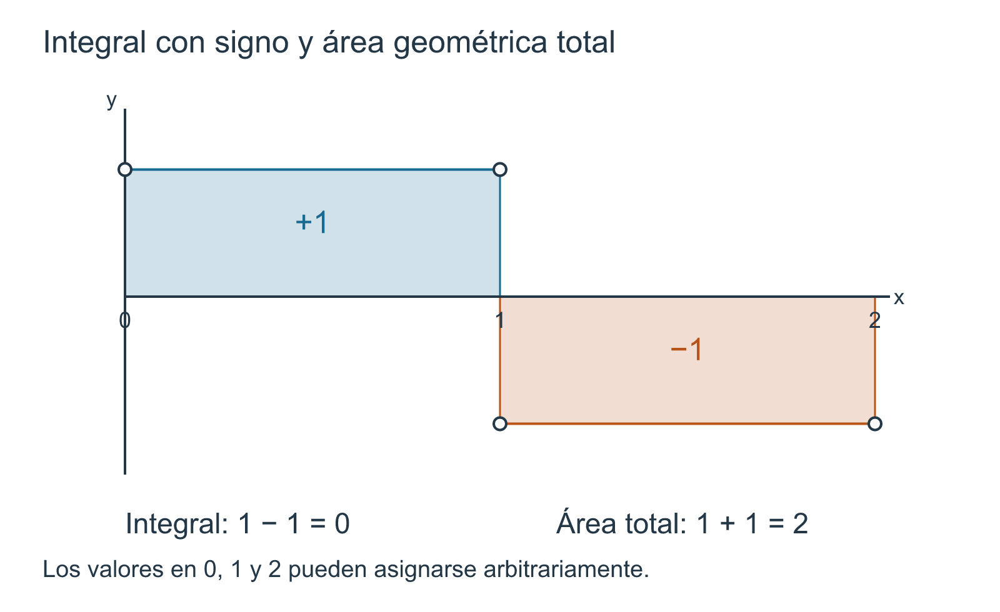
Este ejemplo separa dos conceptos que conviene mantener distintos desde el comienzo:
\[ \boxed{ \text{integral con signo}\ne\text{área geométrica total, en general}. } \]
Para una función escalonada no negativa ambas interpretaciones coinciden con la suma de áreas rectangulares. Cuando aparecen valores negativos, la definición algebraica sigue siendo perfectamente válida, pero las contribuciones pueden cancelarse.
Cortar el intervalo sin cambiar la suma total
Las propiedades anteriores mantienen fijo el intervalo \([a,b]\). Ahora debemos comparar integrales de la misma función sobre intervalos distintos.
Sea \(c\in(a,b)\). Aunque \(c\) no sea un punto de una partición representante de \(s\), podemos insertarlo. El conjunto
\[ Q=P\cup\{c\} \]
es un refinamiento de \(P\), y por Proposición 13.2 representa todavía a \(s\). Una vez que \(c\) aparece como corte, la suma que define la integral puede separarse exactamente en los términos situados a su izquierda y a su derecha.
Proposición 13.4 Proposición (aditividad respecto del intervalo). Sean \(a<c<b\) y sea \(s:[a,b]\to\mathbb R\) una función escalonada. Entonces las restricciones
\[ s|_{[a,c]} \qquad\text{y}\qquad s|_{[c,b]} \]
son funciones escalonadas y
\[ \boxed{ \int_a^b s(x)\,dx = \int_a^c s(x)\,dx + \int_c^b s(x)\,dx. } \]
Demostración. Sea \(P\) una partición de \([a,b]\) que representa a \(s\). Formemos
\[ Q=P\cup\{c\}. \]
Por Proposición 13.1, \(Q\) es una partición de \([a,b]\) y refina a \(P\); por Proposición 13.2, también representa a \(s\).
Escribamos sus puntos en orden como
\[ a=z_0<z_1<\cdots<z_r=c<\cdots<z_N=b. \]
Sean \(h_j\) las alturas de \(s\) en \((z_{j-1},z_j)\). Entonces
\[ \int_a^b s(x)\,dx = \sum_{j=1}^N h_j(z_j-z_{j-1}). \]
Los puntos
\[ \{z_0,\ldots,z_r\} \]
forman una partición de \([a,c]\) que representa a \(s|_{[a,c]}\), mientras que
\[ \{z_r,\ldots,z_N\} \]
forman una partición de \([c,b]\) que representa a \(s|_{[c,b]}\). Por Definición 13.3,
\[ \int_a^c s(x)\,dx = \sum_{j=1}^r h_j(z_j-z_{j-1}) \]
y
\[ \int_c^b s(x)\,dx = \sum_{j=r+1}^N h_j(z_j-z_{j-1}). \]
Sumando las dos expresiones recuperamos exactamente la suma de \(j=1\) a \(N\). Por tanto,
\[ \int_a^b s = \int_a^c s+ \int_c^b s. \]
\(\square\)
El valor puntual \(s(c)\) no crea un término adicional. En ambas restricciones aparece como valor de borde o punto de corte, pero la integral elemental se construye con franjas de anchura positiva.
Ejemplo 13.7 Cortar dentro de una franja constante. Retomemos la función de Ejemplo 13.5, con alturas \(2\), \(1\) y \(3\) sobre
\[ (0,1),\qquad(1,3),\qquad(3,4), \]
cuya integral total es \(7\). Cortemos ahora en
\[ c=\frac52, \]
que no pertenecía a la partición original \(\{0,1,3,4\}\).
Al insertar \(5/2\), la franja de altura \(1\) sobre \((1,3)\) se divide en dos. A la izquierda,
\[ \int_0^{5/2}s(x)\,dx = 2\cdot1+1\left(\frac52-1\right) = 2+\frac32 = \frac72. \]
A la derecha,
\[ \int_{5/2}^4s(x)\,dx = 1\left(3-\frac52\right)+3\cdot1 = \frac12+3 = \frac72. \]
Por tanto,
\[ \int_0^{5/2}s+ \int_{5/2}^4s = \frac72+\frac72 =7 = \int_0^4s. \]
El corte adicional no altera la función ni la integral total; solo reparte la misma contribución entre dos intervalos de integración.
Qué no estamos definiendo todavía
La proposición anterior se formuló deliberadamente para
\[ a<c<b. \]
No hemos fijado todavía convenciones para
\[ \int_a^a s \qquad\text{o}\qquad \int_b^a s. \]
Esas convenciones son útiles más adelante, pero no son necesarias para establecer la estructura elemental sobre intervalos no degenerados. Introducirlas aquí mezclaría la propiedad que acabamos de demostrar con una extensión de notación que puede esperar.
Tampoco hemos demostrado aún propiedades para funciones generales. Todas las afirmaciones de esta sección pertenecen a la clase de funciones escalonadas y descansan en sumas finitas.
De \(s\le t\) se deduce \(\int s\le\int t\), pero una desigualdad estricta en un solo punto no fuerza una desigualdad estricta de integrales: por Corolario 13.1, finitísimas modificaciones puntuales pueden dejar la integral intacta.
Asimismo, \(\int s=0\) no implica \(s=0\). Ejemplo 13.6 muestra una cancelación exacta entre una franja positiva y otra negativa.
El mapa estructural construido hasta ahora
Las primeras cinco secciones de la Parte III forman ya una cadena cerrada:
\[ \boxed{ \begin{gathered} \text{partición} \longrightarrow \text{función escalonada} \longrightarrow \text{integral elemental bien definida}\\ \longrightarrow \text{linealidad, orden y aditividad por intervalos}. \end{gathered} } \]
Todo esto se ha obtenido sin definir la integral de Riemann de una función general y sin recurrir a un proceso límite en las propiedades demostradas.
El paso siguiente cambia de objeto. En §13.6 ya no partiremos de una función escalonada, sino de una función acotada \(f:[a,b]\to\mathbb R\). Sobre cada subintervalo de una partición preguntaremos por sus cotas inferior y superior. De ahí surgirán las sumas que aproximan a \(f\) desde abajo y desde arriba.
Antes de seguir. ¿Por qué la prueba de linealidad necesita una partición común? ¿Cómo se deduce monotonía de linealidad y positividad? ¿Por qué \(\int s=0\) no implica que \(s\) sea la función nula? ¿Qué papel cumple insertar el punto \(c\) en la prueba de aditividad por intervalos? ¿Por qué el valor puntual \(s(c)\) no aporta un término separado a ninguna de las dos integrales?
13.6 Cotas por abajo y por arriba en una partición
Hasta ahora la función que integrábamos era escalonada: una partición podía capturarla exactamente mediante una altura constante en cada franja. A partir de esta sección cambia el problema. Sea
\[ f:[a,b]\to\mathbb R \]
una función acotada, pero no necesariamente escalonada, continua ni monótona. Fijada una partición, ya no esperamos una única altura exacta en cada subintervalo. En su lugar buscaremos dos números que controlen todos los valores de la función en esa pieza: uno por abajo y otro por arriba.
La idea geométrica sigue siendo la de §13.1, pero ahora debemos formularla sin depender de que la función alcance un mínimo o un máximo.
Por qué aparecen ínfimos y supremos
Sea
\[ P=\{x_0,x_1,\ldots,x_n\} \]
una partición de \([a,b]\), y escribamos
\[ I_k=[x_{k-1},x_k]. \]
Como \(f\) está acotada en \([a,b]\), existe algún par de números reales \(A,B\) tales que
\[ A\le f(x)\le B \qquad\text{para todo }x\in[a,b]. \]
Entonces cada conjunto de valores
\[ f(I_k)=\{f(x):x\in I_k\} \]
es no vacío y está acotado inferior y superiormente. La definición de supremo e ínfimo de Definición 1.7, junto con el axioma de completitud de Sección 1.5.2 y la existencia de ínfimos de Proposición 1.10, garantiza entonces la existencia de
\[ \inf f(I_k) \qquad\text{y}\qquad \sup f(I_k). \]
No necesitamos que esos números sean valores efectivamente alcanzados por \(f\).
Definición 13.4 Sumas inferior y superior respecto de una partición. Sean \(a,b\in\mathbb R\) con \(a<b\), sea \(f:[a,b]\to\mathbb R\) una función acotada y sea
\[ P=\{x_0,x_1,\ldots,x_n\} \]
una partición de \([a,b]\). Para cada \(k\in\{1,\ldots,n\}\) definimos
\[ m_k(f,P):=\inf\{f(x):x\in[x_{k-1},x_k]\}, \]
y
\[ M_k(f,P):=\sup\{f(x):x\in[x_{k-1},x_k]\}. \]
La suma inferior de \(f\) respecto de \(P\) es
\[ \boxed{ L(f,P):=\sum_{k=1}^n m_k(f,P)\,\Delta x_k, } \]
mientras que la suma superior es
\[ \boxed{ U(f,P):=\sum_{k=1}^n M_k(f,P)\,\Delta x_k. } \]
Estas cantidades dependen de la función y de la partición. En este capítulo todavía no las llamaremos integrales inferior o superior globales de \(f\).
La última frase es una frontera importante. \(L(f,P)\) y \(U(f,P)\) pertenecen a una partición concreta. En C15 estudiaremos qué ocurre al considerar todas las particiones y cuándo esas aproximaciones determinan un único número.
Un supremo puede existir aunque no haya máximo
Ejemplo 13.8 Una cota superior que no es un valor de la función. Definamos \(f:[0,1]\to\mathbb R\) por
\[ f(x)= \begin{cases} x, & 0\le x<1,\\ 0, & x=1. \end{cases} \]
Tomemos la partición mínima
\[ P=\{0,1\}. \]
En el único subintervalo \(I_1=[0,1]\) tenemos
\[ f(I_1)=[0,1), \]
por lo que
\[ m_1(f,P)=0, \qquad M_1(f,P)=1. \]
El ínfimo sí se alcanza, pero el supremo \(1\) no es valor de \(f\) en \([0,1]\). Aun así, las dos sumas están perfectamente definidas:
\[ L(f,P)=0, \qquad U(f,P)=1. \]
Si hubiéramos exigido un mínimo y un máximo en cada pieza, la construcción fallaría para esta función acotada. El uso de ínfimo y supremo evita esa dependencia de la continuidad o del alcanzamiento de extremos.
Este ejemplo muestra por qué la definición no debe formularse con las palabras «altura mínima» y «altura máxima» sin más. Para funciones continuas en subintervalos cerrados esas alturas sí se alcanzarán por el teorema de valores extremos, pero la presente construcción se aplica a toda función acotada.
Cada partición produce dos funciones escalonadas auxiliares
Las cantidades \(m_k(f,P)\) y \(M_k(f,P)\) pueden verse como alturas de dos funciones escalonadas. Definamos \(\ell_{f,P},u_{f,P}:[a,b]\to\mathbb R\) de la siguiente manera:
- si \(x\in(x_{k-1},x_k)\), ponemos \[ \ell_{f,P}(x)=m_k(f,P), \qquad u_{f,P}(x)=M_k(f,P); \]
- si \(x\) es un punto de la partición, ponemos \[ \ell_{f,P}(x)=f(x)=u_{f,P}(x). \]
Por Definición 13.2, ambas funciones son escalonadas respecto de \(P\). Además, para todo \(x\in[a,b]\),
\[ \boxed{ \ell_{f,P}(x)\le f(x)\le u_{f,P}(x). } \]
En los puntos de corte hay igualdad por definición; en el interior de cada pieza la desigualdad es precisamente la propiedad de ínfimo y supremo.
Por Definición 13.3, sus integrales elementales son
\[ \int_a^b\ell_{f,P}(x)\,dx = \sum_{k=1}^n m_k(f,P)\Delta x_k =L(f,P), \]
y
\[ \int_a^b u_{f,P}(x)\,dx = \sum_{k=1}^n M_k(f,P)\Delta x_k =U(f,P). \]
Así, las nuevas sumas no aparecen desconectadas de la teoría anterior: son integrales elementales de dos escalonadas construidas a partir de cotas locales de \(f\).
Proposición 13.5 Proposición (orden básico de las sumas inferior y superior). Sean \(f,g:[a,b]\to\mathbb R\) funciones acotadas y sea \(P\) una partición de \([a,b]\).
- Siempre se cumple \[ \boxed{L(f,P)\le U(f,P).} \]
- Si existen \(A,B\in\mathbb R\) tales que \[ A\le f(x)\le B \qquad\text{para todo }x\in[a,b], \] entonces \[ \boxed{ A(b-a)\le L(f,P)\le U(f,P)\le B(b-a). } \]
- Si \[ f(x)\le g(x) \qquad\text{para todo }x\in[a,b], \] entonces \[ \boxed{ L(f,P)\le L(g,P), \qquad U(f,P)\le U(g,P). } \]
Demostración. Para cada \(k\),
\[ m_k(f,P)\le M_k(f,P). \]
Como \(\Delta x_k>0\), multiplicar por la anchura conserva el orden. Sumando sobre \(k\) obtenemos
\[ L(f,P)\le U(f,P). \]
Si \(A\le f\le B\) en todo \([a,b]\), entonces para cada subintervalo
\[ A\le m_k(f,P)\le M_k(f,P)\le B. \]
Multiplicando por \(\Delta x_k\) y sumando,
\[ A\sum_{k=1}^n\Delta x_k \le L(f,P) \le U(f,P) \le B\sum_{k=1}^n\Delta x_k. \]
La identidad telescópica de §13.2 da
\[ \sum_{k=1}^n\Delta x_k=b-a, \]
lo que prueba la segunda afirmación.
Por último, si \(f\le g\), entonces en cada \(I_k\)
\[ \inf f(I_k)\le\inf g(I_k) \]
y
\[ \sup f(I_k)\le\sup g(I_k). \]
En efecto, todo valor de \(f\) está por debajo del valor correspondiente de \(g\) en el mismo punto; por tanto cualquier cota inferior de \(f(I_k)\) no necesita ser cota inferior de \(g(I_k)\), pero el número \(\inf f(I_k)\) sí satisface
\[ \inf f(I_k)\le f(x)\le g(x) \qquad\text{para todo }x\in I_k, \]
de modo que \(\inf f(I_k)\) es una cota inferior de \(g(I_k)\) y, por maximalidad del ínfimo,
\[ \inf f(I_k)\le\inf g(I_k). \]
Análogamente,
\[ f(x)\le g(x)\le\sup g(I_k) \]
muestra que \(\sup g(I_k)\) es una cota superior de \(f(I_k)\); por minimalidad del supremo,
\[ \sup f(I_k)\le\sup g(I_k). \]
Multiplicando por anchuras positivas y sumando se obtienen las dos desigualdades restantes. \(\square\)
La tercera parte es una versión de orden a partición fija. Todavía no afirma nada sobre cómo cambian \(L(f,P)\) y \(U(f,P)\) al reemplazar \(P\) por otra partición. Esa será exactamente la cuestión de §13.7.
Un cálculo explícito en una partición no uniforme
Volvamos a la función
\[ f(x)=x, \qquad 0\le x\le1, \]
pero tomemos ahora
\[ P=\left\{0,\frac14,\frac34,1\right\}. \]
Como \(f\) es creciente, en cada pieza el ínfimo es el valor del extremo izquierdo y el supremo el del extremo derecho. Así,
\[ \begin{aligned} L(f,P) &=0\cdot\frac14 +\frac14\cdot\frac12 +\frac34\cdot\frac14\\ &=\frac18+\frac{3}{16} =\frac5{16}, \end{aligned} \]
mientras que
\[ \begin{aligned} U(f,P) &=\frac14\cdot\frac14 +\frac34\cdot\frac12 +1\cdot\frac14\\ &=\frac1{16}+\frac38+\frac14 =\frac{11}{16}. \end{aligned} \]
Por tanto,
\[ \boxed{ L(f,P)=\frac5{16} < \frac12 < \frac{11}{16}=U(f,P). } \]
El valor \(1/2\) aparece aquí solo porque conocemos previamente el área del triángulo y podemos usarla como referencia, exactamente como en §13.1. Las sumas \(L(f,P)\) y \(U(f,P)\) se han obtenido sin usar ninguna integral de \(f\).
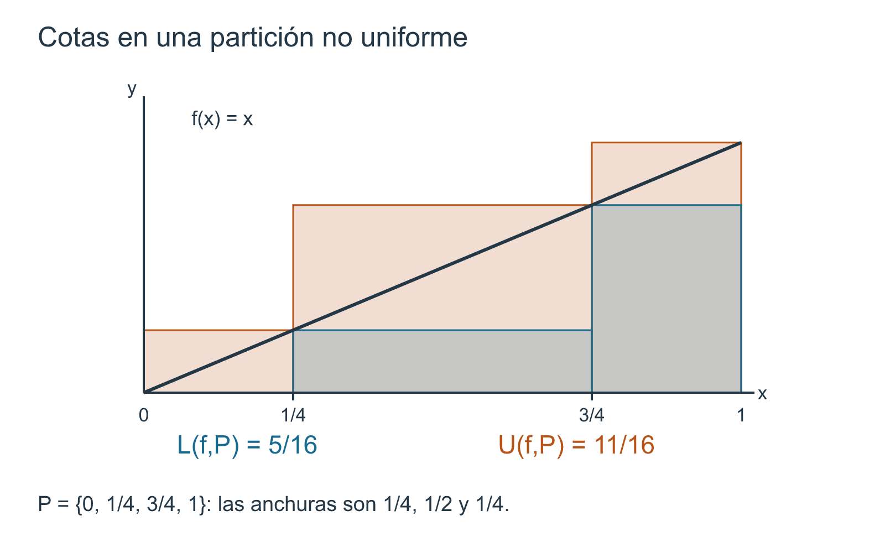
Los valores en los cortes vuelven a importar para las cotas de una partición
En §13.4 demostramos que modificar finitísimos valores de una función escalonada no cambia su integral elemental. No debe concluirse que tales valores sean invisibles para toda construcción posterior.
Ejemplo 13.9 Una punta aislada que sí afecta una suma superior fija. Definamos \(s:[0,1]\to\mathbb R\) por
\[ s(x)= \begin{cases} 1, & x=\frac12,\\ 0, & x\ne\frac12. \end{cases} \]
La función es escalonada y, por Corolario 13.1,
\[ \int_0^1 s(x)\,dx=0. \]
Tomemos, sin embargo, la partición
\[ P=\left\{0,\frac12,1\right\}. \]
En ambos subintervalos cerrados,
\[ \left[0,\frac12\right] \qquad\text{y}\qquad \left[\frac12,1\right], \]
el ínfimo vale \(0\) y el supremo vale \(1\). Por tanto,
\[ L(s,P)=0 \]
y
\[ U(s,P) =1\cdot\frac12+1\cdot\frac12 =1. \]
La integral elemental de \(s\) es \(0\), pero la suma superior respecto de esta partición es \(1\).
Si \(0<\delta<1/2\) y añadimos los cortes \(1/2-\delta\) y \(1/2+\delta\), obtenemos
\[ Q_\delta= \left\{ 0,\frac12-\delta,\frac12,\frac12+\delta,1 \right\}. \]
Los únicos subintervalos donde el supremo sigue siendo \(1\) son los dos adyacentes a \(1/2\), ambos de anchura \(\delta\). Así,
\[ U(s,Q_\delta)=2\delta. \]
Este cálculo anticipa el efecto que formalizaremos en §13.7: al refinar una partición podemos mejorar las cotas. Aquí la mejora puede hacerse tan pronunciada como queramos alrededor de un único valor excepcional.
La diferencia con §13.4 es exacta. La integral elemental de una escalonada utiliza sus alturas en intervalos abiertos y no asigna anchura a un punto aislado. En cambio, \(m_k(f,P)\) y \(M_k(f,P)\) se calculan sobre los subintervalos cerrados \([x_{k-1},x_k]\), de modo que un valor situado en un corte puede influir en las cotas de las piezas vecinas.
No hay contradicción: son construcciones distintas con objetivos distintos.
Cotas locales frente a información global
Una partición produce una lista finita de intervalos
\[ I_1,\ldots,I_n, \]
y, sobre cada uno, un par
\[ m_k(f,P)\le M_k(f,P). \]
La diferencia
\[ M_k(f,P)-m_k(f,P) \]
mide cuánto espacio vertical queda sin resolver en esa pieza. Todavía no sumaremos sistemáticamente estas diferencias; la identidad global correspondiente se reservará para §13.9.
Por ahora basta observar que
\[ L(f,P) \]
usa todas las cotas inferiores locales, mientras que
\[ U(f,P) \]
usa todas las superiores. La información de la partición es, pues, un encierro finito de la función por dos escalonadas.
Para una partición fija \(P\), los números \(L(f,P)\) y \(U(f,P)\) son dos aproximaciones construidas con ínfimos y supremos locales. No hemos definido aún un número \(\int_a^b f\) para una función acotada general.
Tampoco basta que una partición particular produzca una brecha pequeña. Antes debemos comprender cómo se comportan estas cantidades al refinar la partición y cómo se comparan sumas provenientes de particiones distintas.
Lo que queda preparado para el refinamiento
La cadena conceptual disponible es ahora
\[ \boxed{ \begin{gathered} f\text{ acotada}+P\\ \Downarrow\\ m_k=\inf f(I_k),\quad M_k=\sup f(I_k)\\ \Downarrow\\ L(f,P)\le U(f,P). \end{gathered} } \]
La siguiente pregunta es inevitable: si añadimos cortes y reemplazamos \(P\) por un refinamiento \(Q\), ¿las cotas mejoran en el sentido esperado?
En §13.7 demostraremos que sí:
\[ L(f,P)\le L(f,Q) \qquad\text{y}\qquad U(f,Q)\le U(f,P). \]
Esa comparación no será una consecuencia de tener simplemente una malla menor. Necesitará la relación estructural exacta \(P\preceq Q\) desarrollada en §13.2.
Antes de seguir. ¿Por qué la acotación global de \(f\) garantiza que todos los \(m_k\) y \(M_k\) existen como números reales? ¿Por qué se usan ínfimos y supremos en lugar de mínimos y máximos? ¿Cómo se construyen las escalonadas \(\ell_{f,P}\) y \(u_{f,P}\)? ¿Por qué \(L(f,P)\le U(f,P)\)? ¿Cómo puede un único valor excepcional alterar \(U(f,P)\) y, sin embargo, no alterar la integral elemental de una escalonada?
13.7 Refinar mejora las cotas
En §13.6 fijamos una partición \(P\) y construimos dos números,
\[ L(f,P)\le U(f,P), \]
que encierran a la función mediante dos escalonadas auxiliares. Falta todavía una condición de coherencia decisiva: si añadimos puntos de corte, la información no debería empeorar. Una descomposición más fina debe permitir cotas inferiores al menos tan altas y cotas superiores al menos tan bajas como antes.
Esta afirmación parece evidente en un dibujo, pero la prueba debe salir exclusivamente del orden de los conjuntos de valores. El mecanismo elemental será el siguiente:
\[ J\subseteq I \quad\Longrightarrow\quad \inf f(I)\le \inf f(J)\le \sup f(J)\le \sup f(I). \]
Al pasar de una pieza grande \(I\) a piezas más pequeñas \(J\), el conjunto sobre el que tomamos el ínfimo o el supremo se reduce. Por eso el ínfimo puede subir y el supremo puede bajar. El refinamiento convierte esta observación local en una desigualdad entre sumas completas.
La comparación local dentro de una pieza
Sean
\[ P=\{x_0,x_1,\ldots,x_n\} \]
y \(Q\) una partición que refina a \(P\). Fijemos un subintervalo
\[ I_k=[x_{k-1},x_k] \]
de \(P\). Los puntos de \(Q\) que pertenecen a \(I_k\) pueden escribirse como
\[ x_{k-1}=y_{k,0}<y_{k,1}<\cdots<y_{k,r_k}=x_k. \]
Así, \(Q\) descompone \(I_k\) en los intervalos
\[ J_{k,j}=[y_{k,j-1},y_{k,j}], \qquad 1\le j\le r_k. \]
Como
\[ J_{k,j}\subseteq I_k, \]
se tiene
\[ m_k(f,P) \le \inf f(J_{k,j}) \le \sup f(J_{k,j}) \le M_k(f,P). \]
Además, las anchuras de las piezas nuevas recuperan exactamente la anchura antigua:
\[ \sum_{j=1}^{r_k}(y_{k,j}-y_{k,j-1}) =x_k-x_{k-1} =\Delta x_k. \]
Estas dos observaciones contienen toda la prueba del resultado fundamental de la sección.
Proposición 13.6 Proposición (monotonía de las sumas bajo refinamiento). Sea \(f:[a,b]\to\mathbb R\) una función acotada y sean \(P,Q\) particiones de \([a,b]\). Si
\[ P\preceq Q, \]
entonces
\[ \boxed{ L(f,P)\le L(f,Q)\le U(f,Q)\le U(f,P). } \]
En particular, al refinar una partición la suma inferior no disminuye y la suma superior no aumenta.
Demostración. Conservemos la notación anterior. Para cada pieza \(I_k\) de \(P\) y cada subpieza \(J_{k,j}\) de \(Q\) contenida en ella, escribamos
\[ m_{k,j}^Q:=\inf f(J_{k,j}), \qquad M_{k,j}^Q:=\sup f(J_{k,j}). \]
Entonces
\[ m_k(f,P)\le m_{k,j}^Q\le M_{k,j}^Q\le M_k(f,P). \]
Como todas las anchuras
\[ y_{k,j}-y_{k,j-1} \]
son positivas, podemos multiplicar sin alterar el sentido de las desigualdades y sumar sobre \(j\):
\[ \begin{aligned} m_k(f,P)\sum_{j=1}^{r_k}(y_{k,j}-y_{k,j-1}) &\le \sum_{j=1}^{r_k}m_{k,j}^Q(y_{k,j}-y_{k,j-1})\\ &\le \sum_{j=1}^{r_k}M_{k,j}^Q(y_{k,j}-y_{k,j-1})\\ &\le M_k(f,P)\sum_{j=1}^{r_k}(y_{k,j}-y_{k,j-1}). \end{aligned} \]
El telescopado de las anchuras convierte los extremos en
\[ m_k(f,P)\Delta x_k \]
y
\[ M_k(f,P)\Delta x_k. \]
Por tanto, dentro de cada pieza de \(P\),
\[ \begin{aligned} m_k(f,P)\Delta x_k &\le \sum_{j=1}^{r_k}m_{k,j}^Q\,(y_{k,j}-y_{k,j-1})\\ &\le \sum_{j=1}^{r_k}M_{k,j}^Q\,(y_{k,j}-y_{k,j-1})\\ &\le M_k(f,P)\Delta x_k. \end{aligned} \]
Finalmente sumamos estas desigualdades para \(k=1,\ldots,n\). Todas las subpiezas de \(Q\) aparecen exactamente una vez, de modo que obtenemos
\[ L(f,P)\le L(f,Q)\le U(f,Q)\le U(f,P). \]
Esto prueba la proposición. \(\square\)
La palabra «mejora» debe interpretarse en sentido no estricto. Un refinamiento puede dejar una de las sumas sin cambios. Si \(f\) ya es constante sobre una pieza de \(P\), subdividir esa pieza no aporta nueva información vertical y la contribución correspondiente permanece igual.
Más generalmente, para una cadena finita de refinamientos
\[ P_0\preceq P_1\preceq\cdots\preceq P_r, \]
la proposición produce dos cadenas ordenadas en sentidos opuestos:
\[ L(f,P_0)\le L(f,P_1)\le\cdots\le L(f,P_r), \]
y
\[ U(f,P_r)\le\cdots\le U(f,P_1)\le U(f,P_0). \]
El refinamiento comprime, por tanto, el intervalo numérico de incertidumbre entre la cota inferior y la superior.
Ejemplo 13.10 Refinar una partición para \(f(x)=x\). En \([0,1]\) consideremos
\[ f(x)=x \]
y las particiones
\[ P=\left\{0,\frac12,1\right\}, \]
\[ Q=\left\{0,\frac14,\frac12,\frac34,1\right\}. \]
Como \(P\subset Q\), tenemos \(P\preceq Q\).
Para \(P\),
\[ L(f,P) =0\cdot\frac12+\frac12\cdot\frac12 =\frac14, \]
mientras que
\[ U(f,P) =\frac12\cdot\frac12+1\cdot\frac12 =\frac34. \]
Para \(Q\),
\[ \begin{aligned} L(f,Q) &=0\cdot\frac14 +\frac14\cdot\frac14 +\frac12\cdot\frac14 +\frac34\cdot\frac14\\ &=\frac{6}{16} =\frac38, \end{aligned} \]
y
\[ \begin{aligned} U(f,Q) &=\frac14\cdot\frac14 +\frac12\cdot\frac14 +\frac34\cdot\frac14 +1\cdot\frac14\\ &=\frac{10}{16} =\frac58. \end{aligned} \]
Por tanto,
\[ \boxed{ \frac14 < \frac38 < \frac58 < \frac34. } \]
La cota inferior sube de \(1/4\) a \(3/8\) y la superior baja de \(3/4\) a \(5/8\). La mejora no depende de una intuición gráfica: es una instancia concreta de Proposición 13.6.
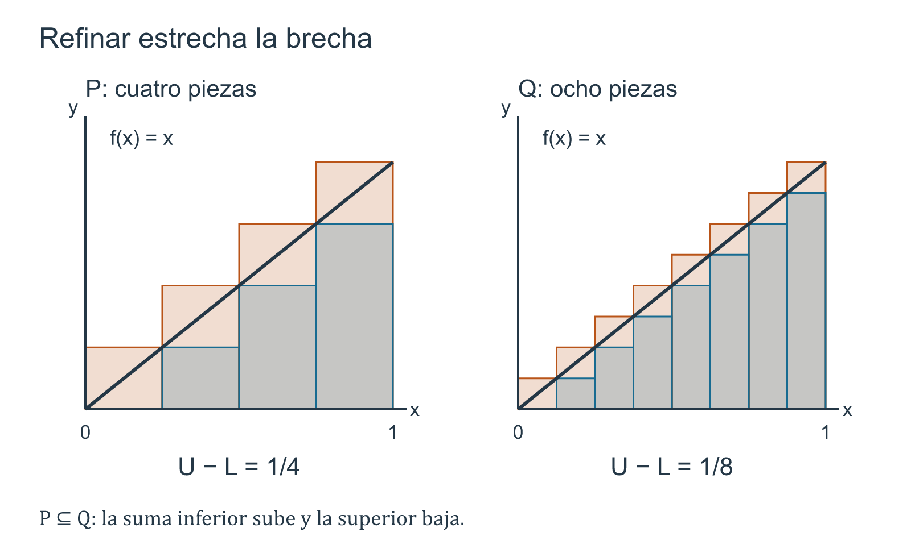
Dos particiones no necesitan ser comparables
La proposición anterior compara directamente \(P\) y \(Q\) solo cuando una refina a la otra. Pero en §13.2 vimos que dos particiones cualesquiera admiten el refinamiento común
\[ P\vee Q=P\cup Q. \]
Esa construcción permite comparar una suma inferior construida con una partición y una suma superior construida con otra completamente distinta.
Corolario 13.2 Corolario (toda suma inferior queda bajo toda suma superior). Sea \(f:[a,b]\to\mathbb R\) una función acotada. Si \(P\) y \(Q\) son dos particiones cualesquiera de \([a,b]\), entonces
\[ \boxed{ L(f,P)\le U(f,Q). } \]
Intercambiando los papeles de \(P\) y \(Q\) también se obtiene
\[ L(f,Q)\le U(f,P). \]
Demostración. Sea
\[ R=P\vee Q. \]
Por Proposición 13.1, \(R\) refina tanto a \(P\) como a \(Q\). Aplicando Proposición 13.6 dos veces,
\[ L(f,P)\le L(f,R) \]
y
\[ U(f,R)\le U(f,Q). \]
Además, por la desigualdad básica de Proposición 13.5,
\[ L(f,R)\le U(f,R). \]
Encadenando,
\[ \boxed{ L(f,P) \le L(f,R) \le U(f,R) \le U(f,Q). } \]
Esto demuestra la primera afirmación; la segunda se obtiene intercambiando \(P\) y \(Q\). \(\square\)
Este corolario es más fuerte que \(L(f,P)\le U(f,P)\). No afirma solamente que una partición produzca cotas compatibles consigo misma, sino que ninguna suma inferior, cualquiera sea la partición que la origine, puede sobrepasar ninguna suma superior obtenida de otra partición.
Esta compatibilidad global es exactamente lo que necesitábamos antes de poder hablar, en el capítulo siguiente, de familias completas de sumas. Aquí nos detenemos antes de tomar supremos o ínfimos sobre todas las particiones.
Una malla menor no sustituye al refinamiento
Proposición 13.6 depende de la inclusión \(P\subseteq Q\), no de la desigualdad entre mallas. Ya vimos en §13.2 que
\[ \|Q\|<\|P\| \]
no implica \(P\preceq Q\). Para las sumas inferior y superior, esta distinción tiene consecuencias cuantitativas reales.
Ejemplo 13.11 Malla menor, pero peor cota superior. Consideremos nuevamente la función con una punta aislada
\[ s(x)= \begin{cases} 1, & x=\frac12,\\ 0, & x\ne\frac12, \end{cases} \qquad 0\le x\le1. \]
Tomemos
\[ P= \left\{ 0,\frac25,\frac12,\frac35,1 \right\}. \]
Su malla es
\[ \|P\|=\frac25. \]
El punto \(1/2\) pertenece a los dos subintervalos cerrados adyacentes
\[ \left[\frac25,\frac12\right], \qquad \left[\frac12,\frac35\right], \]
cada uno de anchura \(1/10\). En ellos el supremo de \(s\) es \(1\); en las otras piezas es \(0\). Por tanto,
\[ U(s,P)=\frac1{10}+\frac1{10}=\frac15. \]
Ahora consideremos
\[ R= \left\{ 0,\frac13,\frac23,1 \right\}. \]
Entonces
\[ \|R\|=\frac13<\frac25=\|P\|, \]
pero \(R\) no refina a \(P\). El punto \(1/2\) queda en el interior de la pieza \([1/3,2/3]\), cuyo supremo es \(1\), mientras que las otras dos piezas tienen supremo \(0\). Así,
\[ U(s,R)=\frac13. \]
En consecuencia,
\[ \boxed{ \|R\|<\|P\| \qquad\text{pero}\qquad U(s,R)=\frac13>\frac15=U(s,P). } \]
Una malla menor puede coincidir con una peor cota superior si los nuevos cortes no conservan la estructura de la partición anterior. La monotonía demostrada en Proposición 13.6 pertenece al refinamiento, no al mero tamaño de la malla.
Qué hemos ganado sin definir todavía la integral
Disponemos ahora de tres niveles de comparación:
- para una partición fija, \[ L(f,P)\le U(f,P); \]
- si \(P\preceq Q\), \[ L(f,P)\le L(f,Q)\le U(f,Q)\le U(f,P); \]
- para dos particiones arbitrarias \(P\) y \(Q\), \[ L(f,P)\le U(f,Q). \]
El segundo nivel muestra que refinar comprime las cotas. El tercero muestra que las construcciones provenientes de particiones incompatibles siguen siendo mutuamente coherentes gracias al refinamiento común.
Hemos probado que toda suma inferior queda por debajo de toda suma superior. Todavía no hemos definido el supremo de todas las sumas inferiores, el ínfimo de todas las superiores ni una condición de igualdad entre ambos números.
Esas operaciones pertenecen a C15, donde se definirá la integrabilidad de Riemann. En este capítulo seguimos trabajando únicamente con sumas finitas asociadas a particiones concretas.
La próxima sección cambiará nuevamente el tipo de dato asociado a cada pieza. En lugar de tomar obligatoriamente el ínfimo o el supremo, elegiremos un punto dentro de cada subintervalo y evaluaremos allí la función. Surgirán así las particiones etiquetadas y las sumas de Riemann, que quedarán encerradas entre las cotas que acabamos de ordenar.
Antes de seguir. ¿Por qué \(J\subseteq I\) hace subir el ínfimo y bajar el supremo? ¿Dónde se usa la positividad de las anchuras en la demostración de Proposición 13.6? ¿Por qué el refinamiento común permite comparar sumas construidas con particiones no comparables? ¿Qué demuestra Ejemplo 13.11 sobre la diferencia entre malla pequeña y refinamiento? ¿Qué paso sigue faltando antes de poder definir una integral para una función acotada general?
13.8 Particiones etiquetadas y sumas de Riemann
Las sumas inferior y superior de §§13.6–13.7 utilizan, en cada subintervalo, las mejores cotas disponibles por abajo y por arriba. Hay otra construcción igualmente natural. En vez de preguntar por todos los valores de \(f\) en una pieza, podemos escoger un punto concreto de esa pieza, evaluar allí la función y utilizar ese valor como altura de un rectángulo.
Esta elección recupera una idea familiar de los primeros ejemplos de integración: rectángulos con altura tomada en el extremo izquierdo, en el extremo derecho, en el punto medio o en cualquier otro punto permitido. La diferencia es que ahora la elección será parte explícita de los datos y no una convención oculta.
Una etiqueta en cada subintervalo
Sea
\[ P=\{x_0,x_1,\ldots,x_n\} \]
una partición de \([a,b]\). Para cada pieza
\[ I_k=[x_{k-1},x_k] \]
elegimos un punto
\[ \xi_k\in I_k. \]
El punto \(\xi_k\) será la etiqueta de ese subintervalo. Las etiquetas se eligen independientemente: pueden ser extremos, puntos interiores e incluso un mismo punto de corte puede servir como etiqueta de las dos piezas adyacentes.
Definición 13.5 Partición etiquetada y suma de Riemann. Sean \(a,b\in\mathbb R\) con \(a<b\) y sea
\[ P=\{x_0,x_1,\ldots,x_n\} \]
una partición de \([a,b]\). Una elección de etiquetas para \(P\) es una \(n\)-upla
\[ \xi=(\xi_1,\ldots,\xi_n) \]
tal que
\[ \xi_k\in[x_{k-1},x_k] \qquad(1\le k\le n). \]
El par \((P,\xi)\) se llama partición etiquetada de \([a,b]\). Su malla es, por definición, la malla de la partición subyacente:
\[ \|(P,\xi)\|:=\|P\|. \]
Si \(f:[a,b]\to\mathbb R\), la suma de Riemann de \(f\) asociada a \((P,\xi)\) es
\[ \boxed{ R(f;P,\xi) := \sum_{k=1}^{n} f(\xi_k)\,\Delta x_k. } \]
La suma anterior es finita. Por ello, para definirla no necesitamos suponer que \(f\) sea acotada: cada \(f(\xi_k)\) es un número real y aparecen solamente finitísimos términos. La acotación sí será necesaria cuando queramos compararla con \(L(f,P)\) y \(U(f,P)\), porque esas dos cantidades fueron definidas en §13.6 para funciones acotadas.
La malla tampoco depende de las etiquetas. Dos particiones etiquetadas pueden tener exactamente los mismos puntos de corte y, por tanto, la misma malla, aunque sus sumas de Riemann sean diferentes. La geometría horizontal está codificada por \(P\); las alturas elegidas están codificadas por \(\xi\).
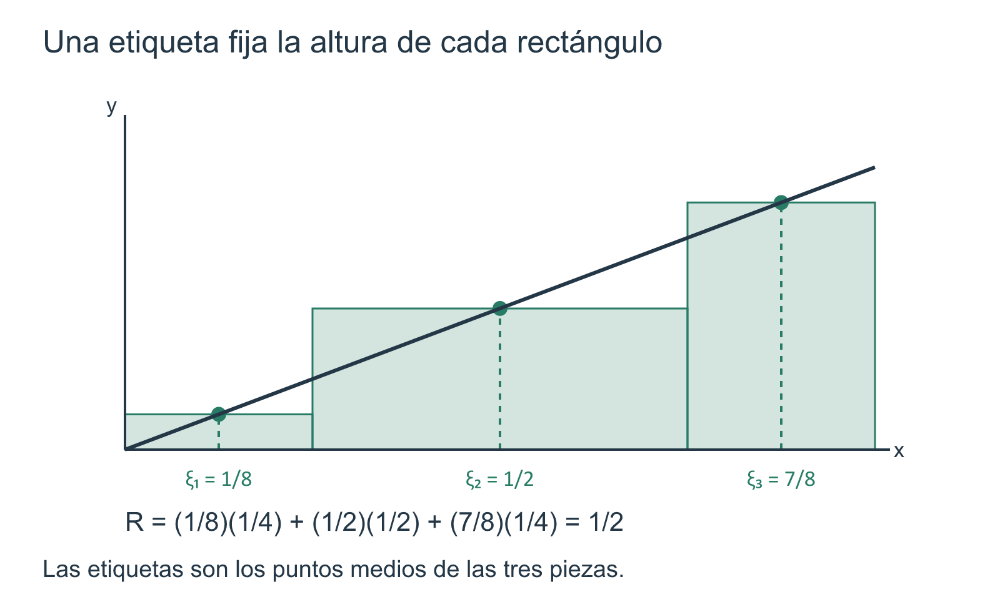
Qué representa cada término
El término
\[ f(\xi_k)\Delta x_k \]
es el producto de una altura efectivamente tomada por la función en el subintervalo y la anchura de esa pieza. Si \(f\ge0\), puede interpretarse como el área de un rectángulo. Si \(f(\xi_k)<0\), el término es negativo y la lectura correcta es algebraica: la suma es una combinación con signo de contribuciones rectangulares.
Esta observación evita una identificación prematura. Una suma de Riemann no es, por definición, un «área aproximada» no negativa. Es un número construido mediante valores de la función y longitudes de subintervalos.
Las sumas inferior y superior encierran cualquier elección de etiquetas
Para una función acotada ya conocemos, sobre cada pieza \(I_k\),
\[ m_k(f,P)=\inf f(I_k), \qquad M_k(f,P)=\sup f(I_k). \]
Como la etiqueta \(\xi_k\) pertenece precisamente a \(I_k\), su valor queda atrapado entre esas dos cotas:
\[ m_k(f,P)\le f(\xi_k)\le M_k(f,P). \]
La positividad de las anchuras transforma inmediatamente este control local en un encierro para la suma completa.
Proposición 13.7 Proposición (encierro de toda suma de Riemann). Sea \(f:[a,b]\to\mathbb R\) una función acotada y sea \((P,\xi)\) una partición etiquetada de \([a,b]\). Entonces
\[ \boxed{ L(f,P) \le R(f;P,\xi) \le U(f,P). } \]
Demostración. Para cada \(k\) tenemos
\[ m_k(f,P)\le f(\xi_k)\le M_k(f,P). \]
Como
\[ \Delta x_k>0, \]
podemos multiplicar por la anchura sin invertir el orden:
\[ m_k(f,P)\Delta x_k \le f(\xi_k)\Delta x_k \le M_k(f,P)\Delta x_k. \]
Sumando para \(k=1,\ldots,n\) obtenemos
\[ \sum_{k=1}^n m_k(f,P)\Delta x_k \le \sum_{k=1}^n f(\xi_k)\Delta x_k \le \sum_{k=1}^n M_k(f,P)\Delta x_k. \]
Por Definición 13.4 y Definición 13.5, los tres miembros son, respectivamente,
\[ L(f,P), \qquad R(f;P,\xi), \qquad U(f,P). \]
Esto prueba la afirmación. \(\square\)
El resultado tiene una lectura importante. Una suma de Riemann utiliza una muestra finita de valores reales de \(f\); las sumas inferior y superior utilizan información de orden sobre todos los valores de cada pieza. Por eso las segundas funcionan como barreras para cualquier elección posible de etiquetas sobre la misma partición.
Extremos izquierdos, puntos medios y extremos derechos son casos de una misma construcción
Ejemplo 13.12 Tres elecciones de etiquetas para una misma partición. Consideremos
\[ f(x)=x, \qquad 0\le x\le1, \]
y la partición no uniforme
\[ P= \left\{ 0,\frac14,\frac34,1 \right\}. \]
En §13.6 calculamos
\[ L(f,P)=\frac5{16}, \qquad U(f,P)=\frac{11}{16}. \]
Primero elijamos los extremos izquierdos:
\[ \xi^-= \left(0,\frac14,\frac34\right). \]
Entonces
\[ \begin{aligned} R(f;P,\xi^-) &=0\cdot\frac14 +\frac14\cdot\frac12 +\frac34\cdot\frac14\\ &=\frac5{16}. \end{aligned} \]
Para esta función creciente, los extremos izquierdos realizan los ínfimos de cada pieza; por eso aquí la suma coincide con \(L(f,P)\).
Tomemos ahora los puntos medios de los tres subintervalos:
\[ \xi^0= \left(\frac18,\frac12,\frac78\right). \]
La suma correspondiente es
\[ \begin{aligned} R(f;P,\xi^0) &=\frac18\cdot\frac14 +\frac12\cdot\frac12 +\frac78\cdot\frac14\\ &=\frac1{32}+\frac8{32}+\frac7{32}\\ &=\frac12. \end{aligned} \]
Finalmente, con los extremos derechos
\[ \xi^+= \left(\frac14,\frac34,1\right), \]
obtenemos
\[ \begin{aligned} R(f;P,\xi^+) &=\frac14\cdot\frac14 +\frac34\cdot\frac12 +1\cdot\frac14\\ &=\frac{11}{16}. \end{aligned} \]
Así aparecen, sobre una misma partición, tres sumas distintas:
\[ \boxed{ \frac5{16} = R(f;P,\xi^-) < R(f;P,\xi^0) = \frac12 < R(f;P,\xi^+) = \frac{11}{16}. } \]
En particular,
\[ L(f,P) \le R(f;P,\xi) \le U(f,P) \]
se hace visible en tres elecciones concretas. Las coincidencias con las sumas inferior y superior ocurren aquí porque \(f(x)=x\) alcanza sus extremos locales en los extremos de cada subintervalo; no debemos suponer que esto ocurra para toda función acotada.
La última advertencia enlaza con Ejemplo 13.8. Allí el supremo de \(f\) sobre \([0,1]\) era \(1\), pero ese valor no era alcanzado. Con la partición \(P=\{0,1\}\), la suma superior vale \(1\), mientras que para toda etiqueta \(\xi_1\in[0,1]\) se cumple
\[ R(f;P,\xi)=f(\xi_1)<1=U(f,P). \]
Por tanto, una suma superior no tiene por qué ser ella misma una suma de Riemann obtenida mediante una elección de etiquetas. Es una cota construida con supremos.
La misma partición puede producir sumas muy diferentes
El hecho de fijar \(P\) no fija la suma. Las etiquetas forman parte esencial de la construcción.
Ejemplo 13.13 Un mismo corte, dos elecciones extremas de etiquetas. Recuperemos la función
\[ s(x)= \begin{cases} 1, & x=\frac12,\\ 0, & x\ne\frac12, \end{cases} \qquad 0\le x\le1, \]
y la partición
\[ P=\left\{0,\frac12,1\right\}. \]
En §13.6 vimos que
\[ L(s,P)=0, \qquad U(s,P)=1. \]
Elijamos primero etiquetas que eviten el punto excepcional:
\[ \eta=\left(\frac14,\frac34\right). \]
Como \(s(1/4)=s(3/4)=0\),
\[ R(s;P,\eta)=0. \]
Ahora elijamos
\[ \xi=\left(\frac12,\frac12\right). \]
Esta elección es válida: \(1/2\) pertenece tanto a \([0,1/2]\) como a \([1/2,1]\), y las etiquetas de piezas distintas no tienen que ser distintas. Entonces
\[ \begin{aligned} R(s;P,\xi) &=s\!\left(\frac12\right)\frac12 +s\!\left(\frac12\right)\frac12\\ &=1. \end{aligned} \]
Por tanto, con la misma partición y la misma malla obtenemos
\[ \boxed{ R(s;P,\eta)=0, \qquad R(s;P,\xi)=1. } \]
Ambos valores respetan Proposición 13.7:
\[ 0=L(s,P) \le R(s;P,\eta),R(s;P,\xi) \le U(s,P)=1. \]
El ejemplo muestra que la malla controla el tamaño horizontal de las piezas, pero no decide qué valores de la función serán muestreados dentro de ellas.
No hay contradicción con la integral elemental de la función escalonada \(s\), que en §13.6 recordamos que vale \(0\). La integral elemental y una suma de Riemann asociada a etiquetas concretas son construcciones diferentes. Una puede ignorar cambios en puntos de corte porque esos puntos no tienen anchura en la representación escalonada; la otra evalúa deliberadamente la función en puntos escogidos, y por eso puede detectar esos valores excepcionales.
Una muestra finita no debe confundirse con una definición integral
Para una partición etiquetada concreta, \(R(f;P,\xi)\) es solamente un número obtenido mediante un cálculo finito. Incluso una larga colección de tales números no define todavía la integral de una función general.
Hay dos fuentes independientes de variación:
- podemos cambiar los puntos de corte de \(P\);
- aun con \(P\) fija, podemos cambiar las etiquetas \(\xi_k\).
Proposición 13.7 muestra que, cuando \(f\) es acotada, todas las elecciones de etiquetas para una partición fija quedan encerradas en el mismo intervalo numérico
\[ [L(f,P),U(f,P)]. \]
§13.7 demostró, además, que el refinamiento hace que esas barreras se acerquen en sentido de orden. Estas dos observaciones explican por qué las sumas etiquetadas son compatibles con la teoría construida hasta ahora, pero todavía no especifican qué cuantificadores deben exigirse para que exista un único valor integral.
El número
\[ R(f;P,\xi) \]
pertenece a una partición y a una elección concreta de etiquetas. No definiremos en este capítulo la integral diciendo simplemente «tomamos una partición muy fina» ni declararemos suficiente la convergencia de una familia particular de sumas.
En C15 formularemos la condición que hace independiente el valor límite de las particiones y etiquetas admisibles —y demostraremos su relación con las cotas inferiores y superiores—. Aquí solo necesitamos la estructura finita.
Lo que queda preparado para medir la incertidumbre
Disponemos ahora de tres alturas posibles sobre cada pieza:
\[ m_k(f,P), \qquad f(\xi_k), \qquad M_k(f,P), \]
ordenadas por
\[ m_k(f,P) \le f(\xi_k) \le M_k(f,P). \]
Al sumar sus contribuciones obtenemos
\[ \boxed{ L(f,P) \le R(f;P,\xi) \le U(f,P). } \]
La pregunta siguiente ya no será dónde puede caer una suma etiquetada, sino cuánto espacio queda entre las dos barreras extremas. En §13.9 expresaremos exactamente la diferencia \(U(f,P)-L(f,P)\) mediante las oscilaciones de \(f\) en los subintervalos de \(P\).
Antes de seguir. ¿Qué información adicional aporta una etiqueta respecto de una partición sin etiquetas? ¿Por qué la malla no cambia al modificar \(\xi\)? ¿Dónde se usa que \(\xi_k\in[x_{k-1},x_k]\) en la prueba de Proposición 13.7? ¿Por qué una suma superior puede no ser una suma de Riemann efectivamente alcanzable? ¿Qué demuestra Ejemplo 13.13 acerca de dos elecciones de etiquetas con la misma malla? ¿Qué condición falta todavía para pasar de sumas finitas a una integral de una función general?
13.9 La brecha de una partición y la oscilación
En §13.8 vimos que, para una función acotada y una partición fija \(P\), toda suma de Riemann queda encerrada entre dos barreras:
\[ L(f,P) \le R(f;P,\xi) \le U(f,P). \]
Conocer el encierro no basta. También queremos medir cuán ancho es. Si las dos barreras están muy separadas, las etiquetas todavía pueden producir resultados muy distintos; si están próximas, todas las sumas etiquetadas construidas sobre esa partición quedan obligadas a concentrarse en un intervalo numérico estrecho.
La cantidad natural es
\[ U(f,P)-L(f,P). \]
Esta diferencia se descompone exactamente en contribuciones locales. La pieza que corresponde al subintervalo \(I_k=[x_{k-1},x_k]\) depende de cuánto puede variar \(f\) dentro de él.
Oscilación sobre un conjunto
Sea \(f:[a,b]\to\mathbb R\) acotada y sea \(I\subseteq[a,b]\) no vacío. En esta sección llamaremos oscilación de \(f\) sobre \(I\) al número
\[ \omega(f;I) := \sup\{f(x):x\in I\} - \inf\{f(x):x\in I\}. \]
Como \(f\) es acotada, ambos extremos existen como números reales. Además,
\[ \omega(f;I)\ge0. \]
La oscilación no mide la altura absoluta de la función, sino la amplitud vertical de sus valores sobre el conjunto considerado. Una función constante puede tener altura enorme y oscilación cero; una función que toma valores positivos y negativos puede tener una oscilación grande aunque su suma o su promedio presenten cancelaciones.
Para una partición
\[ P=\{x_0,x_1,\ldots,x_n\} \]
escribiremos abreviadamente
\[ \omega_k(f,P) := \omega\!\left(f;[x_{k-1},x_k]\right). \]
Por Definición 13.4,
\[ \omega_k(f,P) = M_k(f,P)-m_k(f,P). \]
La oscilación depende, pues, de la función y del subintervalo que estamos mirando. Al refinar una partición, las nuevas piezas pueden tener oscilaciones menores porque se examina a \(f\) sobre conjuntos más pequeños.
La brecha es la suma ponderada de las oscilaciones
Proposición 13.8 Proposición (brecha de una partición y control de las sumas etiquetadas). Sea \(f:[a,b]\to\mathbb R\) una función acotada y sea
\[ P=\{x_0,x_1,\ldots,x_n\} \]
una partición de \([a,b]\). Entonces:
- la brecha entre la suma superior y la inferior satisface \[ \boxed{ U(f,P)-L(f,P) = \sum_{k=1}^n \omega_k(f,P)\,\Delta x_k; } \]
- si \(\xi\) y \(\eta\) son dos elecciones cualesquiera de etiquetas para la misma partición \(P\), entonces \[ \boxed{ \left| R(f;P,\xi)-R(f;P,\eta) \right| \le U(f,P)-L(f,P); } \]
- si \(P\preceq Q\), entonces \[ \boxed{ 0\le U(f,Q)-L(f,Q) \le U(f,P)-L(f,P). } \]
Así, la brecha cuantifica simultáneamente la incertidumbre local acumulada de la partición y un límite superior para la discrepancia entre cualesquiera dos sumas etiquetadas construidas sobre ella.
Demostración. Por Definición 13.4,
\[ U(f,P) = \sum_{k=1}^n M_k(f,P)\Delta x_k \]
y
\[ L(f,P) = \sum_{k=1}^n m_k(f,P)\Delta x_k. \]
Restando término a término,
\[ \begin{aligned} U(f,P)-L(f,P) &= \sum_{k=1}^n \bigl(M_k(f,P)-m_k(f,P)\bigr)\Delta x_k\\ &= \sum_{k=1}^n \omega_k(f,P)\Delta x_k. \end{aligned} \]
Esto prueba la primera afirmación.
Para la segunda, Proposición 13.7 da
\[ L(f,P)\le R(f;P,\xi)\le U(f,P) \]
y
\[ L(f,P)\le R(f;P,\eta)\le U(f,P). \]
Por tanto,
\[ R(f;P,\xi)-R(f;P,\eta) \le U(f,P)-L(f,P), \]
y, al intercambiar \(\xi\) y \(\eta\),
\[ R(f;P,\eta)-R(f;P,\xi) \le U(f,P)-L(f,P). \]
Las dos desigualdades equivalen a
\[ \left| R(f;P,\xi)-R(f;P,\eta) \right| \le U(f,P)-L(f,P). \]
Finalmente, si \(P\preceq Q\), Proposición 13.6 proporciona
\[ L(f,P)\le L(f,Q)\le U(f,Q)\le U(f,P). \]
Como \(L(f,Q)\ge L(f,P)\) y \(U(f,Q)\le U(f,P)\),
\[ U(f,Q)-L(f,Q) \le U(f,P)-L(f,P). \]
La no negatividad de ambas brechas sigue de Proposición 13.5. \(\square\)
La primera identidad contiene una lectura que conviene conservar. Cada término
\[ \omega_k(f,P)\Delta x_k \]
combina dos fuentes de incertidumbre:
- una amplitud vertical, \(\omega_k(f,P)\);
- una anchura horizontal, \(\Delta x_k\).
Una oscilación grande puede tener una contribución pequeña si está confinada a una franja muy estrecha. Del mismo modo, una pieza ancha puede ser inocua si la función varía muy poco en ella.
Brecha pequeña significa acuerdo forzado, no integral ya definida
La segunda parte de Proposición 13.8 permite interpretar el número
\[ U(f,P)-L(f,P) \]
sin hablar todavía de integrabilidad. Si, por ejemplo,
\[ U(f,P)-L(f,P)<10^{-4}, \]
entonces cualesquiera dos elecciones de etiquetas sobre esa misma partición producen sumas que difieren en menos de \(10^{-4}\).
Esto es más fuerte que calcular dos elecciones favorables y observar que están cerca. El encierro controla simultáneamente todas las etiquetas posibles para \(P\).
Pero la afirmación sigue siendo local a una partición concreta. No hemos demostrado que exista una partición con brecha arbitrariamente pequeña para toda función acotada; tampoco hemos definido qué conclusión general debería extraerse si tales particiones existen. Esos cuantificadores pertenecen a C15.
Una función suave en un ejemplo concreto: \(x^2\)
La continuidad y la monotonía pueden hacer que las oscilaciones locales se reduzcan al estrechar las piezas. En lugar de formular todavía un teorema general, veamos el mecanismo en una función que podemos calcular exactamente.
Ejemplo 13.14 La brecha de \(f(x)=x^2\) sobre particiones uniformes. Sea
\[ f(x)=x^2, \qquad 0\le x\le1, \]
y, para \(n\ge1\), consideremos la partición uniforme
\[ P_n= \left\{ 0,\frac1n,\frac2n,\ldots,\frac{n-1}{n},1 \right\}. \]
Su malla es
\[ \|P_n\|=\frac1n. \]
Como \(x^2\) es creciente en \([0,1]\), sobre
\[ I_k= \left[ \frac{k-1}{n}, \frac{k}{n} \right] \]
tenemos
\[ m_k = \left(\frac{k-1}{n}\right)^2, \qquad M_k = \left(\frac{k}{n}\right)^2. \]
Por tanto,
\[ \omega_k = M_k-m_k = \frac{k^2-(k-1)^2}{n^2} = \frac{2k-1}{n^2}. \]
Como \(\Delta x_k=1/n\), Proposición 13.8 da
\[ \begin{aligned} U(f,P_n)-L(f,P_n) &= \sum_{k=1}^n \frac{2k-1}{n^2}\frac1n\\ &= \frac1{n^3} \sum_{k=1}^n(2k-1). \end{aligned} \]
La suma de los primeros \(n\) números impares es \(n^2\), así que
\[ \boxed{ U(f,P_n)-L(f,P_n)=\frac1n. } \]
En consecuencia, para cualesquiera dos elecciones de etiquetas \(\xi\) y \(\eta\) sobre \(P_n\),
\[ \left| R(f;P_n,\xi)-R(f;P_n,\eta) \right| \le \frac1n. \]
La malla y la brecha coinciden numéricamente en este ejemplo:
\[ \|P_n\| = U(f,P_n)-L(f,P_n) = \frac1n. \]
No convertiremos esta igualdad particular en una regla universal. Procede de la forma concreta de \(x^2\) y de la partición uniforme elegida. Tampoco concluimos aquí, mediante una definición todavía no introducida, que \(x^2\) sea integrable. Lo que hemos demostrado es exactamente esto: existe una familia explícita de particiones para la cual el intervalo que encierra todas las sumas etiquetadas tiene anchura \(1/n\).
El cálculo permite ver el papel de la variación local. Cerca de \(0\), las diferencias entre cuadrados consecutivos son pequeñas; hacia \(1\), son mayores. La suma pondera todas esas oscilaciones por el ancho \(1/n\) y el telescopado algebraico final produce una brecha controlada.
Una discontinuidad aislada también puede quedar confinada
La punta de Ejemplo 13.9 ofrece un contraste útil. Para
\[ s(x)= \begin{cases} 1,&x=\frac12,\\ 0,&x\ne\frac12, \end{cases} \]
y la partición
\[ Q_\delta= \left\{ 0,\frac12-\delta,\frac12,\frac12+\delta,1 \right\}, \qquad 0<\delta<\frac12, \]
la oscilación es \(1\) únicamente en los dos intervalos adyacentes a \(1/2\) y es \(0\) en las demás piezas. Por tanto,
\[ U(s,Q_\delta)-L(s,Q_\delta) = 1\cdot\delta+1\cdot\delta = 2\delta. \]
Aquí no hemos reducido la amplitud vertical del salto puntual: sigue siendo \(1\). Lo que hemos reducido es la anchura total de las piezas en las que esa oscilación aparece.
Esta distinción es importante. Para disminuir la brecha no hay una única estrategia local: puede hacerse pequeña la oscilación en muchas piezas, o puede confinarse una oscilación grande a piezas de anchura total pequeña.
Una función cuya oscilación no mejora con ningún corte finito
El caso opuesto muestra por qué una malla pequeña, por sí sola, no obliga a que la brecha sea pequeña.
Ejemplo 13.15 Oscilación máxima en cada subintervalo. Consideremos nuevamente la función de Ejemplo 13.4,
\[ d(x)= \begin{cases} 1,&x\in\mathbb Q,\\ 0,&x\notin\mathbb Q, \end{cases} \qquad 0\le x\le1. \]
Sea
\[ P=\{x_0,\ldots,x_n\} \]
una partición arbitraria de \([0,1]\). Cada subintervalo
\[ I_k=[x_{k-1},x_k] \]
tiene longitud positiva. Su interior contiene racionales e irracionales por la densidad establecida en Sección 1.8. En consecuencia, \(d\) toma allí los dos valores \(0\) y \(1\), y por tanto
\[ m_k(d,P)=0, \qquad M_k(d,P)=1, \qquad \omega_k(d,P)=1 \]
para todo \(k\).
La identidad de Proposición 13.8 produce entonces
\[ \begin{aligned} U(d,P)-L(d,P) &= \sum_{k=1}^n 1\cdot\Delta x_k\\ &= \sum_{k=1}^n\Delta x_k\\ &=1. \end{aligned} \]
Por tanto,
\[ \boxed{ U(d,P)-L(d,P)=1 \qquad \text{para toda partición }P\text{ de }[0,1]. } \]
Podemos hacer la malla tan pequeña como queramos y añadir tantos cortes finitos como deseemos; la oscilación dentro de cada pieza no disminuye. La partición cambia, pero la brecha permanece igual a la longitud total del intervalo.
No traduciremos todavía este hecho a un dictamen sobre integrabilidad. En C15, una vez fijada la definición general, podremos decir exactamente qué consecuencia tiene esta persistencia de la brecha.
Los ejemplos Ejemplo 13.14 y Ejemplo 13.15 muestran que la expresión
\[ \sum_k\omega_k\Delta x_k \]
contiene más información que la malla aislada. Dos particiones pueden tener piezas horizontalmente muy pequeñas y, sin embargo, comportarse de manera radicalmente distinta según cuánto varíe la función dentro de ellas.
El refinamiento redistribuye la incertidumbre
Cuando \(P\preceq Q\), cada pieza de \(Q\) está contenida en una pieza de \(P\). La oscilación sobre un subconjunto no puede exceder la oscilación sobre el conjunto original:
\[ J\subseteq I \quad\Longrightarrow\quad \omega(f;J)\le\omega(f;I). \]
Sin embargo, no conviene intentar probar la disminución global de la brecha comparando solamente estas oscilaciones una por una: al refinar también cambian el número y las anchuras de las piezas. Proposición 13.6 ya resolvió correctamente el problema global y Proposición 13.8 lo traduce en
\[ U(f,Q)-L(f,Q) \le U(f,P)-L(f,P). \]
La interpretación mediante oscilaciones explica por qué esa mejora tiene sentido; la prueba rigurosa sigue descansando en las desigualdades de refinamiento ya establecidas.
En este capítulo podemos afirmar rigurosamente:
- qué brecha produce una partición concreta;
- cómo se descompone en oscilaciones locales;
- que el refinamiento no aumenta esa brecha;
- que la brecha controla la diferencia entre todas las sumas etiquetadas sobre la misma partición.
Todavía no formulamos la condición «para todo \(\varepsilon>0\) existe una partición…», ni la relacionamos con una integral superior, una integral inferior o un valor integral único. Ese paso es exactamente uno de los problemas de C15.
Hacia el laboratorio final
La arquitectura finita del capítulo está casi completa. Para una función acotada disponemos ahora de
\[ \boxed{ \begin{gathered} \text{partición }P\\ \Downarrow\\ m_k,\ M_k,\ \omega_k\\ \Downarrow\\ L(f,P)\le R(f;P,\xi)\le U(f,P)\\ \Downarrow\\ U(f,P)-L(f,P) = \sum_k\omega_k\Delta x_k. \end{gathered} } \]
§13.10 reunirá estas construcciones en un solo laboratorio: funciones escalonadas, cotas de Darboux y sumas etiquetadas. El objetivo no será definir anticipadamente la integral general, sino identificar con precisión qué problema lógico queda todavía abierto antes de que podamos hablar de un candidato único independiente del modo de aproximación.
Antes de seguir. ¿Por qué \(\omega(f;I)\) puede ser cero aunque \(f\) tome valores grandes? ¿Cómo se obtiene la identidad de la brecha a partir de Definición 13.4? ¿Por qué esa brecha controla la diferencia entre dos sumas etiquetadas sobre la misma partición? En Ejemplo 13.14, ¿qué propiedad de \(x^2\) permite calcular exactamente cada oscilación? ¿Por qué en Ejemplo 13.15 podemos hacer la malla tan pequeña como queramos sin que ninguna oscilación local disminuya? ¿Qué cuantificador deliberadamente seguimos sin introducir antes de C15?
13.10 Laboratorio: de rectángulos a un candidato único
Las secciones anteriores introdujeron varios objetos que pueden parecer variantes de una misma idea. No lo son. Cada uno responde a una pregunta diferente y conserva una cantidad distinta de información.
Este laboratorio tiene un objetivo preciso: reconstruir la arquitectura finita de C14 sin adelantar la definición general de integral. En particular, no buscaremos todavía un criterio de integrabilidad. Nos limitaremos a comparar los objetos disponibles, detectar inferencias inválidas y aislar el problema que queda abierto para C15.
Estación 1. Cuatro objetos, cuatro papeles
Sea \(f:[a,b]\to\mathbb R\) acotada y sea
\[ P=\{x_0,\ldots,x_n\} \]
una partición. Conviene separar los siguientes objetos.
1. Una función escalonada. Si una función \(s\) es constante entre los cortes de alguna partición, su integral elemental
\[ \int_a^b s(x)\,dx \]
ya está definida por Definición 13.3. No depende de la partición representante, por Teorema 13.1. Aquí disponemos de un número exacto porque la función pertenece a una clase finita especial.
2. La suma inferior. Para una función acotada general,
\[ L(f,P) = \sum_{k=1}^n m_k(f,P)\Delta x_k \]
usa los ínfimos locales. Es una cota construida con toda la información de orden disponible en cada pieza.
3. La suma superior. Del mismo modo,
\[ U(f,P) = \sum_{k=1}^n M_k(f,P)\Delta x_k \]
usa los supremos locales. Junto con la suma inferior forma un encierro asociado a una partición concreta.
4. Una suma de Riemann. Una elección de etiquetas \(\xi_k\in[x_{k-1},x_k]\) produce
\[ R(f;P,\xi) = \sum_{k=1}^n f(\xi_k)\Delta x_k. \]
Esta suma utiliza una muestra finita de valores efectivamente tomados por \(f\).
Las relaciones demostradas hasta ahora pueden condensarse en
\[ \boxed{ L(f,P) \le R(f;P,\xi) \le U(f,P). } \]
Pero las tres cantidades no tienen el mismo estatuto. \(L\) y \(U\) dependen de \(P\); \(R\) depende además de \(\xi\); la integral elemental solo está definida, por ahora, para funciones escalonadas.
La expresión «suma de Darboux» se usará en este laboratorio como nombre colectivo para \(L(f,P)\) y \(U(f,P)\). No introduce un objeto nuevo: son exactamente las sumas inferior y superior de Definición 13.4.
Estación 2. Una misma función vista por tres lentes
Consideremos
\[ f(x)=x^2, \qquad 0\le x\le1, \]
y la partición
\[ P=\left\{0,\frac12,1\right\}. \]
Como \(x^2\) es creciente en \([0,1]\),
\[ m_1=0, \qquad M_1=\frac14, \]
y
\[ m_2=\frac14, \qquad M_2=1. \]
Por tanto,
\[ L(f,P) = 0\cdot\frac12 + \frac14\cdot\frac12 = \frac18, \]
mientras que
\[ U(f,P) = \frac14\cdot\frac12 + 1\cdot\frac12 = \frac58. \]
La brecha es
\[ U(f,P)-L(f,P) = \frac12. \]
Ahora tomemos las etiquetas de punto medio
\[ \xi= \left(\frac14,\frac34\right). \]
Entonces
\[ \begin{aligned} R(f;P,\xi) &= \left(\frac14\right)^2\frac12 + \left(\frac34\right)^2\frac12\\ &= \frac1{32}+\frac9{32}\\ &= \frac5{16}. \end{aligned} \]
Y efectivamente,
\[ \frac18 < \frac5{16} < \frac58. \]
Nada de esto define todavía \(\int_0^1x^2\,dx\) como integral de Riemann. Lo que sí demuestra es que una partición concreta produce un intervalo de incertidumbre
\[ \left[\frac18,\frac58\right] \]
que contiene toda suma etiquetada sobre \(P\).
Refinemos ahora a
\[ Q= \left\{ 0,\frac14,\frac12,\frac34,1 \right\}. \]
Como \(P\preceq Q\), Proposición 13.6 garantiza que el encierro mejora. El cálculo directo da
\[ L(f,Q) = \left( 0+\frac1{16}+\frac14+\frac9{16} \right)\frac14 = \frac7{32}, \]
y
\[ U(f,Q) = \left( \frac1{16}+\frac14+\frac9{16}+1 \right)\frac14 = \frac{15}{32}. \]
Por tanto,
\[ \boxed{ \left[\frac7{32},\frac{15}{32}\right] \subset \left[\frac18,\frac58\right]. } \]
La anchura del nuevo intervalo es
\[ \frac{15}{32}-\frac7{32} = \frac14, \]
la mitad de la anterior.
Si usamos los puntos medios de las cuatro piezas,
\[ \eta= \left( \frac18,\frac38,\frac58,\frac78 \right), \]
obtenemos
\[ \begin{aligned} R(f;Q,\eta) &= \left( \frac1{64} +\frac9{64} +\frac{25}{64} +\frac{49}{64} \right)\frac14\\ &= \frac{84}{256}\\ &= \frac{21}{64}. \end{aligned} \]
Y nuevamente
\[ \frac7{32} = \frac{14}{64} < \frac{21}{64} < \frac{30}{64} = \frac{15}{32}. \]
El punto central no es el valor numérico obtenido, sino la estructura:
\[ \boxed{ P\preceq Q \quad\Longrightarrow\quad [L(f,Q),U(f,Q)] \subseteq [L(f,P),U(f,P)]. } \]
Esta inclusión es solo una reescritura de Proposición 13.6.
Estación 3. Una escalonada exacta puede tener una brecha de Darboux positiva
Conviene comparar ahora dos construcciones que se parecen mucho pero no coinciden.
Definamos \(s:[0,2]\to\mathbb R\) por
\[ s(x)= \begin{cases} 1, & 0\le x<1,\\ 2, & x=1,\\ 3, & 1<x\le2. \end{cases} \]
La función es escalonada respecto de
\[ P=\{0,1,2\}. \]
Su integral elemental está completamente definida y vale
\[ \int_0^2 s(x)\,dx = 1\cdot1+3\cdot1 = 4. \]
El valor aislado \(s(1)=2\) no aparece en esta suma, porque la integral elemental usa las alturas constantes de los intervalos abiertos.
Pero las sumas de Darboux se calculan sobre los subintervalos cerrados. En
\[ [0,1] \]
los valores relevantes son \(1\) y \(2\), mientras que en
\[ [1,2] \]
aparecen \(2\) y \(3\). Por tanto,
\[ L(s,P) = 1\cdot1+2\cdot1 = 3, \]
y
\[ U(s,P) = 2\cdot1+3\cdot1 = 5. \]
Así,
\[ \boxed{ L(s,P)=3 < \int_0^2s(x)\,dx = 4 < 5=U(s,P). } \]
No hay contradicción. La integral elemental de una escalonada es un número exacto ya bien definido por §13.4; las sumas de Darboux pertenecen a una partición fija y son cotas construidas con valores sobre intervalos cerrados.
Incluso sobre esta misma partición las sumas etiquetadas pueden tomar distintos valores. Si elegimos
\[ \xi=\left(\frac12,\frac32\right), \]
entonces
\[ R(s;P,\xi)=1+3=4. \]
Si elegimos
\[ \eta=(1,1), \]
entonces
\[ R(s;P,\eta)=2+2=4. \]
Pero también son válidas, por ejemplo,
\[ \alpha=\left(\frac12,1\right), \qquad \beta=\left(1,\frac32\right), \]
que producen
\[ R(s;P,\alpha)=1+2=3, \]
y
\[ R(s;P,\beta)=2+3=5. \]
Toda la familia queda encerrada, como exige Proposición 13.7, entre \(3\) y \(5\).
Ahora añadamos cortes a distancia \(\delta\) del salto:
\[ Q_\delta= \{0,1-\delta,1,1+\delta,2\}, \qquad 0<\delta<1. \]
La oscilación es cero en las piezas exteriores y vale \(1\) en los dos intervalos adyacentes a \(1\). Por Proposición 13.8,
\[ U(s,Q_\delta)-L(s,Q_\delta) = \delta+\delta = 2\delta. \]
La integral elemental continúa siendo exactamente \(4\), mientras que el encierro de Darboux se estrecha al confinar la irregularidad puntual.
Este ejemplo separa cuatro afirmaciones:
- «\(s\) es escalonada»;
- «\(\int s\) está definida elementalmente»;
- «\(L(s,P)\) y \(U(s,P)\) dependen de \(P\)»;
- «las sumas etiquetadas pueden variar aun cuando la función tenga ya una integral elemental».
Confundir estas afirmaciones produce varios de los argumentos circulares que debemos evitar.
Estación 4. Intervalos de incertidumbre y refinamiento común
Para una función acotada \(f\) y una partición \(P\), escribamos de manera puramente auxiliar
\[ J(f,P) := [L(f,P),U(f,P)]. \]
No estamos definiendo una integral ni una nueva noción matemática sustantiva; solo damos nombre al intervalo numérico que ya existe.
Por Proposición 13.7, toda suma etiquetada sobre \(P\) pertenece a \(J(f,P)\):
\[ R(f;P,\xi)\in J(f,P). \]
Si
\[ P\preceq Q, \]
entonces Proposición 13.6 implica
\[ \boxed{ J(f,Q)\subseteq J(f,P). } \]
Y si \(P\) y \(Q\) no son comparables, el refinamiento común
\[ R=P\vee Q \]
satisface
\[ \boxed{ J(f,R) \subseteq J(f,P)\cap J(f,Q). } \]
En efecto,
\[ L(f,P)\le L(f,R) \le U(f,R)\le U(f,P), \]
y lo mismo respecto de \(Q\).
Esta propiedad es central. Las particiones no producen intervalos de incertidumbre arbitrariamente incompatibles. Frente a dos de ellos siempre podemos construir un tercero, obtenido por refinamiento común, que queda contenido en ambos.
La arquitectura disponible puede resumirse así:
\[ \boxed{ \begin{gathered} P,\ Q\\ \Downarrow\\ R=P\vee Q\\ \Downarrow\\ J(f,R) \subseteq J(f,P)\cap J(f,Q). \end{gathered} } \]
Todavía no tomamos la intersección de todos esos intervalos ni sus extremos globales. Esa operación pertenece a C15.
Estación 5. Reparar seis argumentos incorrectos
El objetivo de este bloque es distinguir una intuición plausible de una demostración válida.
Argumento incorrecto A. «Las sumas de puntos medios para \(f\) parecen converger a un número, luego ese número es la integral.»
La observación solo controla una familia particular de particiones y una regla particular de etiquetas. No demuestra independencia respecto de otras particiones o etiquetas.
Reparación. En C14 solo podemos afirmar lo demostrado para esa familia. La condición que permitirá pasar de una familia especial a un valor independiente del procedimiento pertenece a C15.
Argumento incorrecto B. «Si \(\|P\|\) es pequeña, entonces \(U(f,P)-L(f,P)\) es pequeña.»
Ejemplo 13.15 muestra que esto es falso para una función que oscila entre \(0\) y \(1\) en todo subintervalo no degenerado: la malla puede hacerse arbitrariamente pequeña y la brecha seguir siendo \(1\).
Reparación. La brecha depende de la combinación
\[ \sum_k\omega_k\Delta x_k, \]
no de la malla aislada.
Argumento incorrecto C. «Si encuentro una partición con una brecha muy pequeña, ya he definido la integral.»
Una partición con brecha pequeña obliga a que todas sus sumas etiquetadas estén próximas entre sí, por Proposición 13.8. Pero C14 todavía no ha definido la integral de una función acotada general.
Reparación. Registrar exactamente la conclusión disponible: esa partición produce un encierro estrecho. El salto desde encierros finitos a un valor integral general exige una definición adicional.
Argumento incorrecto D. «La suma superior siempre se obtiene escogiendo en cada pieza una etiqueta donde \(f\) alcanza el máximo.»
Esto falla cuando el supremo no se alcanza, como en Ejemplo 13.8.
Reparación. \(U(f,P)\) usa supremos, no necesariamente máximos. Es una cota y no tiene por qué ser una suma etiquetada realizable.
Argumento incorrecto E. «Una partición con malla menor es automáticamente un refinamiento.»
Ejemplo 13.2 y Ejemplo 13.11 refutan esta identificación.
Reparación. Verificar la inclusión de los puntos:
\[ P\preceq Q \iff P\subseteq Q. \]
La desigualdad de mallas es solo una consecuencia del refinamiento, no una caracterización.
Argumento incorrecto F. «Si \(s\) es escalonada, cualquier suma inferior o superior respecto de una partición representante coincide con su integral elemental.»
La estación 3 acaba de mostrar que los valores en los cortes pueden modificar ínfimos y supremos sobre subintervalos cerrados, aunque no cambien la integral elemental.
Reparación. Separar la representación escalonada —constancia en intervalos abiertos— de las cotas de Darboux —ínfimos y supremos sobre intervalos cerrados—.
Estación 6. Qué significa realmente «un candidato único»
Las construcciones de C14 proporcionan una red de información finita.
Para cada partición \(P\) obtenemos
\[ J(f,P)=[L(f,P),U(f,P)]. \]
Dentro de ese intervalo viven todas las sumas etiquetadas de la misma partición:
\[ R(f;P,\xi)\in J(f,P). \]
Al refinar, los intervalos no se ensanchan:
\[ P\preceq Q \quad\Longrightarrow\quad J(f,Q)\subseteq J(f,P). \]
Y para dos particiones arbitrarias existe un refinamiento común cuyo intervalo está contenido en ambos.
Por tanto, la pregunta pendiente ya puede formularse con precisión conceptual, aun sin responderla:
¿Cuándo esta familia compatible de encierros finitos obliga a que todas las aproximaciones admisibles señalen un mismo número real, independientemente de cómo se elijan los cortes y las etiquetas?
C15 transformará esta pregunta en una definición y en criterios equivalentes. C14 debe detenerse justo antes de ese paso.
No basta con afirmar que «los rectángulos se hacen pequeños». Tampoco basta con observar una secuencia convergente. Lo que falta es un mecanismo que convierta la compatibilidad de todas las aproximaciones en la existencia de un valor único.
Estación 7. El mapa completo de C14
Podemos reconstruir todo el capítulo mediante una cadena de dependencias:
\[ \boxed{ \begin{gathered} \text{área y exhaución como motivación}\\ \Downarrow\\ \text{particiones, malla y refinamiento}\\ \Downarrow\\ \text{funciones escalonadas}\\ \Downarrow\\ \text{integral elemental bien definida}\\ \Downarrow\\ \text{sumas inferior y superior}\\ \Downarrow\\ \text{monotonía bajo refinamiento}\\ \Downarrow\\ \text{particiones etiquetadas y sumas de Riemann}\\ \Downarrow\\ L(f,P)\le R(f;P,\xi)\le U(f,P)\\ \Downarrow\\ U(f,P)-L(f,P) = \sum_k\omega_k(f,P)\Delta x_k\\ \Downarrow\\ \text{pregunta por un valor único independiente de la aproximación.} \end{gathered} } \]
La última línea es una pregunta, no un teorema de este capítulo.
C14 termina habiendo construido y comparado todos los objetos finitos necesarios: funciones escalonadas, sumas inferior y superior, refinamientos, sumas etiquetadas y brechas.
C15 comenzará cuando se formule qué significa que estas aproximaciones determinen un único número para una función acotada general. Allí aparecerán los cuantificadores globales, las integrales inferior y superior y la definición de integrabilidad de Riemann.
No trasladamos esa definición hacia atrás.
Antes del banco de ejercicios
El capítulo dispone ya de toda su teoría expositiva. §13.11 no añadirá resultados nuevos: servirá para obligar al lector a reconstruir las diferencias entre objetos, verificar hipótesis, calcular sumas y brechas, refinar particiones, detectar razonamientos circulares y explicar por qué ciertos ejemplos sí reducen la incertidumbre mientras otros no.
Antes de seguir. ¿Por qué la integral elemental de una escalonada puede estar ya definida aunque \(L(s,P)<U(s,P)\) para una partición concreta? ¿Qué demuestra la inclusión \(J(f,P\vee Q)\subseteq J(f,P)\cap J(f,Q)\)? ¿Por qué la convergencia de una sola familia de sumas etiquetadas no basta todavía? ¿Qué error lógico hay en reemplazar refinamiento por malla menor? ¿Qué información contiene la brecha que la malla por sí sola no contiene? ¿Cuál es exactamente la pregunta que queda reservada a C15?
13.11 Ejercicios y soluciones
El banco recorre la arquitectura completa del capítulo sin cruzar la frontera de C15. Los cuarenta ejercicios son originales y siguen la distribución fijada en el diseño fino:
\[ 6A+6B+6C+6D+6E+6F+4G=40. \]
Cada enunciado tiene una solución desarrollada con el mismo número. Solo se utilizan definiciones y resultados disponibles hasta §13.10. En particular, ningún ejercicio presupone la definición general de integrabilidad de Riemann, integrales inferior o superior globales, el criterio global de la brecha, el teorema fundamental del cálculo ni técnicas de integración.
Nivel A — Particiones, refinamientos y malla
Ejercicio 13.1
Ejercicio A1. Leer una partición completa. Sea
\[ P=\left\{0,\frac15,\frac25,1\right\}. \]
- Escribe sus subintervalos y sus anchuras.
- Calcula \(\|P\|\).
- Verifica directamente que la suma de las anchuras es la longitud de \([0,1]\).
- Explica por qué la lista \(\{0,1/5,2/5\}\) no es una partición de \([0,1]\).
Ejercicio 13.2
Ejercicio A2. Refinamiento, malla y no comparabilidad. Considera
\[ P=\left\{0,\frac12,1\right\}, \qquad Q=\left\{0,\frac14,\frac12,\frac34,1\right\}, \]
y
\[ R=\left\{0,\frac13,\frac23,1\right\}. \]
Determina cuáles de las relaciones \(P\preceq Q\), \(P\preceq R\), \(R\preceq Q\) son verdaderas. Calcula las tres mallas y los refinamientos comunes \(P\vee R\) y \(Q\vee R\).
Ejercicio 13.3
Ejercicio A3. Un refinamiento común no uniforme. En \([0,2]\) sean
\[ P=\left\{0,\frac12,\frac32,2\right\}, \qquad Q=\left\{0,1,\frac74,2\right\}. \]
Construye \(P\vee Q\), calcula las anchuras de todas sus piezas y su malla. Comprueba que
\[ \|P\vee Q\|\le \min\{\|P\|,\|Q\|\}. \]
Ejercicio 13.4
Ejercicio A4. Refinar no siempre reduce estrictamente la malla. Sea
\[ P=\left\{0,\frac12,\frac34,1\right\}. \]
- Añade el punto \(1/8\) y calcula la malla de la nueva partición.
- Añade, en cambio, el punto \(7/8\) a \(P\) y calcula la nueva malla.
- Explica por qué ambos son refinamientos estrictos de \(P\), aunque solo uno reduce estrictamente la malla.
Ejercicio 13.5
Ejercicio A5. La malla no puede ser menor que la anchura media. Sea
\[ P=\{x_0,\ldots,x_n\} \]
una partición de \([a,b]\) con exactamente \(n\) subintervalos. Demuestra que
\[ \boxed{\|P\|\ge\frac{b-a}{n}.} \]
Demuestra además que hay igualdad si y solo si todos los subintervalos tienen la misma longitud.
Ejercicio 13.6
Ejercicio A6. Tener más piezas no significa refinar. Considera
\[ P=\left\{0,\frac12,1\right\} \]
y
\[ Q=\left\{0,\frac13,\frac23,\frac56,1\right\}. \]
- Comprueba que \(Q\) tiene más subintervalos y menor malla que \(P\).
- Demuestra que \(Q\) no refina a \(P\).
- Construye \(P\vee Q\) y calcula su malla.
- Identifica exactamente qué información aporta «tener más piezas», cuál aporta «tener menor malla» y cuál aporta «ser refinamiento».
Nivel B — Funciones escalonadas e integral elemental
Ejercicio 13.7
Ejercicio B1. Una suma rectangular con signos. Sea \(s:[0,4]\to\mathbb R\) escalonada con alturas
\[ 2,\quad -1,\quad 3 \]
respectivamente sobre
\[ (0,1),\qquad(1,3),\qquad(3,4), \]
y valores arbitrarios en \(0,1,3,4\).
- Calcula \(\int_0^4 s(x)\,dx\).
- Repite el cálculo usando el refinamiento
\[ Q=\left\{0,\frac12,1,2,3,\frac72,4\right\}. \]
- Explica qué resultado general garantiza que ambos cálculos coincidan.
Ejercicio 13.8
Ejercicio B2. Los valores de corte pertenecen a la función, pero no a la suma rectangular. Sea \(s\) la función del ejercicio B1. Define \(t\) igual a \(s\) fuera de
\[ F=\{0,1,3,4\}, \]
pero asigna a \(t\) valores distintos de los de \(s\) en los cuatro puntos de \(F\).
- Justifica que \(t\) sigue siendo escalonada.
- Demuestra que
\[ \int_0^4 t(x)\,dx=\int_0^4 s(x)\,dx. \]
- Explica por qué esto no afirma que \(s=t\).
Ejercicio 13.9
Ejercicio B3. Reconocer una función escalonada. Define \(u:[0,2]\to\mathbb R\) por
\[ u(x)= \begin{cases} -2, & 0\le x<1,\\ 7, & x=1,\\ 1, & 1<x\le2. \end{cases} \]
- Exhibe una partición que represente a \(u\).
- Calcula su integral elemental.
- Da un refinamiento que también la represente y verifica la misma integral mediante ese refinamiento.
Ejercicio 13.10
Ejercicio B4. Dos representaciones y un refinamiento común. Sea \(s:[0,3]\to\mathbb R\) una función que vale \(-2\) en \((0,1)\) y \(1\) en \((1,3)\), con valores arbitrarios en los cortes. Considera
\[ P=\{0,1,3\}, \qquad Q=\left\{0,\frac13,1,2,3\right\}. \]
- Comprueba que ambas particiones representan a \(s\).
- Calcula \(\mathcal R(s;P)\) y \(\mathcal R(s;Q)\).
- Explica cómo Lema 13.1 organiza la igualdad obtenida.
Ejercicio 13.11
Ejercicio B5. Integral nula sin función nula. Sea \(s:[0,3]\to\mathbb R\) escalonada con altura \(2\) en \((0,1)\) y altura \(-1\) en \((1,3)\).
- Calcula \(\int_0^3s\).
- Calcula \(\int_0^3|s|\).
- Explica por qué el primer resultado no implica que \(s\) sea la función nula.
Ejercicio 13.12
Ejercicio B6. Dos valores y ningún número finito de cortes. Define \(h:[0,1]\to\mathbb R\) por
\[ h(x)= \begin{cases} 1, & x=1/n\text{ para algún entero }n\ge1,\\ 0, & \text{en otro caso}. \end{cases} \]
Demuestra que \(h\) tiene imagen finita pero no es una función escalonada. Puedes usar la propiedad arquimediana y la densidad de los irracionales.
Nivel C — Álgebra, orden y aditividad
Ejercicio 13.13
Ejercicio C1. Linealidad sobre un refinamiento común. En \([0,2]\) sean \(s\) y \(t\) escalonadas dadas por
\[ s(x)= \begin{cases} 1,&0<x<1,\\ -1,&1<x<2, \end{cases} \]
y
\[ t(x)= \begin{cases} 2,&0<x<\frac12,\\ 0,&\frac12<x<2, \end{cases} \]
con valores en los cortes elegidos arbitrariamente.
- Calcula \(\int s\) y \(\int t\).
- Usa el refinamiento común \(\{0,1/2,1,2\}\) para calcular directamente \(\int(2s-3t)\).
- Verifica la identidad de linealidad.
Ejercicio 13.14
Ejercicio C2. Monotonía en un ejemplo exacto. Sean \(s,t:[0,2]\to\mathbb R\) escalonadas tales que, fuera de los cortes,
\[ s= \begin{cases} 0,&0<x<1,\\ 1,&1<x<2, \end{cases} \qquad t= \begin{cases} 1,&0<x<1,\\ 3,&1<x<2. \end{cases} \]
Supón además que los valores en los cortes se eligen de modo que \(s\le t\) en todo \([0,2]\).
Calcula ambas integrales y verifica numéricamente la conclusión de monotonía de Proposición 13.3.
Ejercicio 13.15
Ejercicio C3. La desigualdad del valor absoluto puede ser estricta. Sea \(s:[0,2]\to\mathbb R\) escalonada con altura \(2\) en \((0,1)\) y altura \(-1\) en \((1,2)\).
Calcula
\[ \left|\int_0^2s\right| \qquad\text{y}\qquad \int_0^2|s|. \]
Comprueba que la desigualdad
\[ \left|\int s\right|\le\int|s| \]
es estricta y explica la razón geométrica-algebraica.
Ejercicio 13.16
Ejercicio C4. Cortar dentro de una franja. Recupera la función \(s\) del ejercicio B1 y toma
\[ c=\frac52. \]
Calcula por separado
\[ \int_0^{5/2}s(x)\,dx \qquad\text{y}\qquad \int_{5/2}^{4}s(x)\,dx, \]
y verifica la aditividad respecto del intervalo.
Ejercicio 13.17
Ejercicio C5. Dos funciones distintas con la misma integral. Sea
\[ s(x)=1 \qquad(0\le x\le1), \]
y define \(t:[0,1]\to\mathbb R\) por \(t(x)=1\) salvo en
\[ t\left(\frac13\right)=7, \qquad t\left(\frac23\right)=-4. \]
- Demuestra que \(t\) es escalonada.
- Calcula \(\int_0^1s\) y \(\int_0^1t\).
- Explica qué resultado del capítulo permite anticipar la igualdad.
Ejercicio 13.18
Ejercicio C6. Igualdad de integrales no implica igualdad de funciones. En \([0,1]\) sea \(s(x)=1\) y sea \(t\) escalonada con altura \(2\) en \((0,1/2)\) y altura \(0\) en \((1/2,1)\).
Elige valores no negativos en los cortes. Demuestra que \(s\) y \(t\) son distintas, no negativas y satisfacen
\[ \int_0^1s=\int_0^1t. \]
¿Qué conversa falsa de la monotonía podría sugerir erróneamente este ejemplo?
Nivel D — Sumas inferiores, superiores y refinamiento
Ejercicio 13.19
Ejercicio D1. Sumas inferior y superior para \(x^2\). Para
\[ f(x)=x^2, \qquad P=\left\{0,\frac12,1\right\}, \]
calcula \(m_k\), \(M_k\), \(L(f,P)\) y \(U(f,P)\). Determina también la brecha \(U-L\).
Ejercicio 13.20
Ejercicio D2. Una partición no uniforme. Para \(f(x)=x^2\) en \([0,1]\) y
\[ P=\left\{0,\frac14,1\right\}, \]
calcula exactamente \(L(f,P)\), \(U(f,P)\) y \(U(f,P)-L(f,P)\).
Ejercicio 13.21
Ejercicio D3. Un supremo no alcanzado entra igualmente en la suma superior. Sea
\[ f(x)= \begin{cases} x,&0\le x<1,\\ 0,&x=1, \end{cases} \]
y
\[ P=\left\{0,\frac12,1\right\}. \]
Calcula los ínfimos y supremos locales, indica cuáles se alcanzan y cuáles no, y obtiene \(L(f,P)\) y \(U(f,P)\).
Ejercicio 13.22
Ejercicio D4. Verificar la cadena de refinamiento. Para \(f(x)=x^2\) en \([0,1]\), toma
\[ P=\left\{0,\frac12,1\right\}, \]
y
\[ Q=\left\{0,\frac14,\frac12,\frac34,1\right\}. \]
Calcula las cuatro sumas y verifica
\[ L(f,P)\le L(f,Q)\le U(f,Q)\le U(f,P). \]
Compara además las dos brechas.
Ejercicio 13.23
Ejercicio D5. Comparar particiones no comparables. Para \(f(x)=x\) en \([0,1]\) considera
\[ P=\left\{0,\frac12,1\right\}, \qquad Q=\left\{0,\frac13,1\right\}. \]
- Calcula \(L(f,P),U(f,P),L(f,Q),U(f,Q)\).
- Construye \(R=P\vee Q\) y calcula \(L(f,R),U(f,R)\).
- Verifica las dos cadenas que prueban
\[ L(f,P)\le U(f,Q), \qquad L(f,Q)\le U(f,P). \]
Ejercicio 13.24
Ejercicio D6. Menor malla y peor suma superior. Define
\[ s(x)= \begin{cases} 1,&x=\frac14,\\ 0,&x\ne\frac14, \end{cases} \qquad 0\le x\le1. \]
Considera
\[ P=\left\{0,\frac15,\frac14,\frac3{10},1\right\}, \qquad Q=\left\{0,\frac13,\frac23,1\right\}. \]
Calcula \(\|P\|,\|Q\|,U(s,P)\) y \(U(s,Q)\). Usa los resultados para refutar la afirmación «una malla menor siempre produce una suma superior menor».
Nivel E — Sumas etiquetadas, malla y encierros
Ejercicio 13.25
Ejercicio E1. Tres etiquetados para \(x^2\). Para
\[ f(x)=x^2, \qquad P=\left\{0,\frac12,1\right\}, \]
calcula las sumas de Riemann obtenidas con extremos izquierdos, puntos medios y extremos derechos. Verifica que las tres quedan entre \(L(f,P)\) y \(U(f,P)\).
Ejercicio 13.26
Ejercicio E2. Un punto de corte puede etiquetar dos piezas. Define
\[ s(x)= \begin{cases} 1,&x=\frac13,\\ 0,&x\ne\frac13, \end{cases} \]
y toma
\[ P=\left\{0,\frac13,\frac23,1\right\}. \]
Calcula las sumas asociadas a
\[ \eta=\left(\frac16,\frac12,\frac56\right) \]
y
\[ \xi=\left(\frac13,\frac13,\frac56\right). \]
Calcula también \(L(s,P)\) y \(U(s,P)\).
Ejercicio 13.27
Ejercicio E3. Una suma superior que ninguna etiqueta realiza. Para la función del ejercicio D3, toma la partición mínima \(P=\{0,1\}\).
Demuestra que
\[ U(f,P)=1, \]
pero que para toda etiqueta \(\xi_1\in[0,1]\),
\[ R(f;P,\xi)<1. \]
Explica por qué esto no contradice Proposición 13.7.
Ejercicio 13.28
Ejercicio E4. Una elección interior en una partición no uniforme. Para \(f(x)=x\) y
\[ P=\left\{0,\frac14,\frac34,1\right\}, \]
usa las etiquetas
\[ \xi=\left(\frac18,\frac12,1\right). \]
Calcula \(R(f;P,\xi)\) y verifica
\[ L(f,P)\le R(f;P,\xi)\le U(f,P) \]
usando los valores de §13.6.
Ejercicio 13.29
Ejercicio E5. La misma malla, una diferencia de tres unidades. Define
\[ s(x)= \begin{cases} 2,&x=\frac12,\\ -1,&x\ne\frac12, \end{cases} \]
en \([0,1]\), y toma
\[ P=\left\{0,\frac12,1\right\}. \]
Encuentra dos elecciones de etiquetas sobre \(P\) que produzcan respectivamente sumas \(-1\) y \(2\). Calcula \(L(s,P)\) y \(U(s,P)\) y explica qué controla la malla y qué no controla.
Ejercicio 13.30
Ejercicio E6. Las sumas etiquetadas no son monótonas bajo refinamiento. Sea \(f(x)=x\) en \([0,1]\).
- Con \(P=\{0,1\}\) y etiqueta \(1\), calcula \(R(f;P,\xi)\).
- Refina a \(Q=\{0,1/2,1\}\) y usa etiquetas \(0\) y \(1/2\). Comprueba que la suma disminuye.
- Repite tomando en \(P\) la etiqueta \(0\) y en \(Q\) los extremos derechos. Comprueba que ahora la suma aumenta.
- Explica por qué esto no contradice Proposición 13.6.
Nivel F — Brecha, oscilación y reconstrucción de argumentos
Ejercicio 13.31
Ejercicio F1. Oscilaciones locales para \(x^2\). Para \(f(x)=x^2\) y
\[ P=\left\{0,\frac12,1\right\}, \]
calcula \(\omega_1,\omega_2\) y verifica directamente
\[ U(f,P)-L(f,P) = \omega_1\frac12+\omega_2\frac12. \]
Ejercicio 13.32
Ejercicio F2. La brecha de una función lineal. Para \(f(x)=x\) en \([0,1]\) y la partición uniforme
\[ P_n=\left\{0,\frac1n,\ldots,1\right\}, \]
demuestra usando oscilaciones que
\[ U(f,P_n)-L(f,P_n)=\frac1n. \]
Ejercicio 13.33
Ejercicio F3. Amplitud grande confinada en poco ancho. Fija \(c=2/5\) y define
\[ s(x)= \begin{cases} 5,&x=c,\\ 0,&x\ne c, \end{cases} \]
en \([0,1]\). Para \(0<\delta<2/5\) considera
\[ Q_\delta=\{0,c-\delta,c,c+\delta,1\}. \]
Calcula la brecha \(U(s,Q_\delta)-L(s,Q_\delta)\) mediante oscilaciones y explica qué parte del cálculo reduce la incertidumbre: la amplitud vertical o la anchura horizontal.
Ejercicio 13.34
Ejercicio F4. Oscilación persistente de amplitud tres. Define
\[ d(x)= \begin{cases} 2,&x\in\mathbb Q,\\ -1,&x\notin\mathbb Q, \end{cases} \qquad 0\le x\le1. \]
Demuestra que para toda partición \(P\),
\[ L(d,P)=-1, \qquad U(d,P)=2, \qquad U(d,P)-L(d,P)=3. \]
Ejercicio 13.35
Ejercicio F5. Malla pequeña no implica brecha pequeña. Conserva la función \(d\) del ejercicio F4 y considera las particiones uniformes \(P_n\).
Demuestra que
\[ \|P_n\|=\frac1n\longrightarrow0 \]
mientras
\[ U(d,P_n)-L(d,P_n)=3 \]
para todo \(n\). Identifica la inferencia incorrecta que este ejemplo refuta.
Ejercicio 13.36
Ejercicio F6. Dos cotas generales para la brecha. Sea \(f:[a,b]\to\mathbb R\) acotada y \(P=\{x_0,\ldots,x_n\}\).
- Si \(A\le f\le B\) en todo \([a,b]\), demuestra
\[ 0\le U(f,P)-L(f,P)\le(B-A)(b-a). \]
- Supón que \(S\subseteq\{1,\ldots,n\}\) y que \(C,W\ge0\). Si \(\omega_k=0\) fuera de \(S\), \(\omega_k\le C\) para \(k\in S\), y
\[ \sum_{k\in S}\Delta x_k\le W, \]
Demuestra
\[ U(f,P)-L(f,P)\le CW. \]
Interpreta la segunda cota.
Nivel G — Desafíos integradores: del área a las sumas
Ejercicio 13.37
Ejercicio G1. Una función, cuatro construcciones. Define \(s:[0,2]\to\mathbb R\) por
\[ s(x)= \begin{cases} -1,&0\le x<1,\\ 2,&x=1,\\ 4,&1<x\le2. \end{cases} \]
y toma \(P=\{0,1,2\}\).
- Calcula la integral elemental de \(s\).
- Calcula \(L(s,P)\) y \(U(s,P)\).
- Encuentra etiquetados que produzcan cada uno de los valores \(1,3,4,6\).
- Para
\[ Q_\delta=\{0,1-\delta,1,1+\delta,2\}, \qquad0<\delta<1, \]
calcula la brecha mediante oscilaciones. 5. Explica por qué los resultados anteriores son compatibles entre sí.
Ejercicio 13.38
Ejercicio G2. Dos encierros incompatibles en cortes, compatibles en orden. Para \(f(x)=x\) en \([0,1]\) sean
\[ P=\left\{0,\frac12,1\right\}, \qquad Q=\left\{0,\frac13,1\right\}. \]
- Calcula \(J(f,P)=[L(f,P),U(f,P)]\) y \(J(f,Q)\).
- Construye \(R=P\vee Q\) y calcula \(J(f,R)\).
- Verifica
\[ J(f,R)\subseteq J(f,P)\cap J(f,Q). \]
- Elige puntos medios como etiquetas de \(R\), calcula la suma correspondiente y localízala en los tres intervalos.
Ejercicio 13.39
Ejercicio G3. Forzar acuerdo de sumas sin definir todavía una integral general. Sea
\[ s(x)= \begin{cases} 1,&x=\frac12,\\ 0,&x\ne\frac12, \end{cases} \]
en \([0,1]\). Dado un número \(\eta>0\):
- elige \(0<\delta<\min\{1/2,\eta/2\}\);
- usa
\[ Q_\delta= \left\{0,\frac12-\delta,\frac12,\frac12+\delta,1\right\} \]
para demostrar que
\[ 0\le R(s;Q_\delta,\xi)<\eta \]
para toda elección de etiquetas \(\xi\); 3. explica con precisión qué se ha demostrado y qué definición de C15 deliberadamente no se ha utilizado.
Ejercicio 13.40
Ejercicio G4. Dos familias de sumas, dos candidatos incompatibles. Sea
\[ d(x)= \begin{cases} 1,&x\in\mathbb Q,\\ 0,&x\notin\mathbb Q, \end{cases} \]
en \([0,1]\), y sea \(P_n\) la partición uniforme en \(n\) piezas.
- Justifica que en cada subintervalo de \(P_n\) puede elegirse una etiqueta racional y también una irracional.
- Construye un etiquetado racional \(\xi^{(n)}\) y uno irracional \(\eta^{(n)}\) y demuestra
\[ R(d;P_n,\xi^{(n)})=1, \qquad R(d;P_n,\eta^{(n)})=0 \]
para todo \(n\). 3. Calcula \(L(d,P_n)\) y \(U(d,P_n)\). 4. Explica por qué la convergencia de una sola familia particular de sumas etiquetadas no basta para producir un candidato independiente del procedimiento.
Soluciones desarrolladas
Soluciones del nivel A
Solución 13.1.
Solución A1. Los puntos están ordenados
\[ 0<\frac15<\frac25<1. \]
Por tanto los subintervalos son
\[ \left[0,\frac15\right], \qquad \left[\frac15,\frac25\right], \qquad \left[\frac25,1\right]. \]
Sus anchuras son
\[ \frac15,\qquad\frac15,\qquad\frac35. \]
Así,
\[ \boxed{\|P\|=\frac35}. \]
La suma de anchuras es
\[ \frac15+\frac15+\frac35=1, \]
que coincide con \(1-0\). La lista \(\{0,1/5,2/5\}\) no es una partición de \([0,1]\) porque Definición 13.1 exige que ambos extremos del intervalo pertenezcan al conjunto de cortes y falta el extremo \(1\).
Solución 13.2.
Solución A2. Como todos los puntos de \(P\) aparecen en \(Q\),
\[ P\subseteq Q, \]
luego \(P\preceq Q\). En cambio, \(1/2\notin R\), así que \(P\npreceq R\). Tampoco \(R\preceq Q\), porque \(1/3\) y \(2/3\) no pertenecen a \(Q\).
Las mallas son
\[ \|P\|=\frac12, \qquad \|Q\|=\frac14, \qquad \|R\|=\frac13. \]
El refinamiento común de \(P\) y \(R\) es
\[ P\vee R= \left\{ 0,\frac13,\frac12,\frac23,1 \right\}. \]
El de \(Q\) y \(R\) es la unión de todos sus cortes:
\[ Q\vee R= \left\{ 0,\frac14,\frac13,\frac12,\frac23,\frac34,1 \right\}. \]
La primera comparación ilustra que una malla menor no basta para certificar refinamiento: \(R\) tiene malla menor que \(P\), pero no conserva su corte \(1/2\).
Solución 13.3.
Solución A3. La unión ordenada es
\[ P\vee Q= \left\{ 0,\frac12,1,\frac32,\frac74,2 \right\}. \]
Las anchuras consecutivas son
\[ \frac12,\quad \frac12,\quad \frac12,\quad \frac14,\quad \frac14. \]
Por tanto
\[ \boxed{\|P\vee Q\|=\frac12}. \]
Para las particiones originales,
\[ \|P\|=1 \]
porque la pieza \([1/2,3/2]\) tiene longitud \(1\), mientras
\[ \|Q\|=1. \]
Así,
\[ \|P\vee Q\|=\frac12\le1=\min\{\|P\|,\|Q\|\}, \]
como predice Proposición 13.1. El refinamiento común conserva todos los cortes y puede reducir la pieza máxima de ambas particiones a la vez.
Solución 13.4.
Solución A4. En \(P\) las anchuras son
\[ \frac12,\quad\frac14,\quad\frac14, \]
de modo que
\[ \|P\|=\frac12. \]
Si añadimos \(1/8\), la primera pieza se divide en longitudes
\[ \frac18 \qquad\text{y}\qquad \frac38. \]
Las demás conservan longitud \(1/4\), de modo que la nueva malla es
\[ \boxed{\frac38}. \]
Si añadimos \(7/8\), solo se divide la última pieza \([3/4,1]\) en dos piezas de longitud \(1/8\). La primera pieza \([0,1/2]\) permanece intacta, por lo que la malla sigue siendo
\[ \boxed{\frac12}. \]
En los dos casos se añadió un punto nuevo sin eliminar ninguno anterior; ambos refinamientos son estrictos. Proposición 13.1 garantiza que la malla no aumente, pero no que disminuya estrictamente.
Solución 13.5.
Solución A5. Como cada anchura satisface
\[ \Delta x_k\le\|P\|, \]
al sumar obtenemos
\[ b-a = \sum_{k=1}^n\Delta x_k \le \sum_{k=1}^n\|P\| = n\|P\|. \]
Como \(n>0\),
\[ \boxed{\|P\|\ge\frac{b-a}{n}}. \]
Si todos los subintervalos tienen longitud \((b-a)/n\), entonces claramente la malla es ese número.
Recíprocamente, supongamos
\[ \|P\|=\frac{b-a}{n}. \]
Todas las anchuras son a lo sumo \(\|P\|\) y su suma es exactamente
\[ b-a=n\|P\|. \]
Si alguna anchura fuese estrictamente menor que \(\|P\|\), como ninguna puede exceder \(\|P\|\), la suma total sería estrictamente menor que \(n\|P\|\), contradicción. Por tanto todas satisfacen
\[ \Delta x_k=\frac{b-a}{n}. \]
La igualdad caracteriza precisamente a la partición uniforme.
Solución 13.6.
Solución A6. \(P\) tiene dos subintervalos, ambos de longitud \(1/2\), así que
\[ \|P\|=\frac12. \]
\(Q\) tiene cuatro subintervalos, de longitudes
\[ \frac13,\quad\frac13,\quad\frac16,\quad\frac16, \]
por lo que
\[ \|Q\|=\frac13<\frac12. \]
Sin embargo,
\[ \frac12\notin Q, \]
de modo que \(P\nsubseteq Q\) y \(Q\) no refina a \(P\).
El refinamiento común es
\[ P\vee Q= \left\{ 0,\frac13,\frac12,\frac23,\frac56,1 \right\}. \]
Sus anchuras son
\[ \frac13,\quad\frac16,\quad\frac16,\quad\frac16,\quad\frac16, \]
y por tanto
\[ \|P\vee Q\|=\frac13. \]
Tener más piezas cuenta solamente cuántos subintervalos hay; tener menor malla controla la longitud de la pieza más larga; ser refinamiento exige la condición estructural exacta de inclusión de cortes.
Soluciones del nivel B
Solución 13.7.
Solución B1. Usando la partición natural \(\{0,1,3,4\}\),
\[ \begin{aligned} \int_0^4s(x)\,dx &=2(1-0)+(-1)(3-1)+3(4-3)\\ &=2-2+3\\ &=\boxed{3}. \end{aligned} \]
Con el refinamiento \(Q\), las seis alturas son
\[ 2,\ 2,\ -1,\ -1,\ 3,\ 3, \]
y las anchuras son
\[ \frac12,\ \frac12,\ 1,\ 1,\ \frac12,\ \frac12. \]
Entonces
\[ 2\frac12+2\frac12-1-1+3\frac12+3\frac12 =1+1-1-1+\frac32+\frac32 =3. \]
La igualdad no depende del cálculo particular: Lema 13.1 demuestra que la suma rectangular de una escalonada es invariante bajo refinamiento, y Teorema 13.1 permite retirar la partición de la definición de integral elemental.
Solución 13.8.
Solución B2. Los puntos de \(F\) son precisamente cortes de la partición
\[ P=\{0,1,3,4\}. \]
En cada intervalo abierto \((0,1)\), \((1,3)\) y \((3,4)\) las funciones \(s\) y \(t\) coinciden, por lo que \(t\) conserva las mismas alturas \(2,-1,3\). Así \(P\) representa también a \(t\).
Como \(s=t\) fuera del conjunto finito \(F\), Corolario 13.1 da
\[ \int_0^4t=\int_0^4s=3. \]
No se concluye \(s=t\): por construcción sus valores difieren en puntos de \(F\). La integral elemental es insensible a esas modificaciones finitas dentro de la clase escalonada, pero la igualdad de integrales no convierte dos funciones en una sola.
Solución 13.9.
Solución B3. La partición
\[ P=\{0,1,2\} \]
representa a \(u\): la altura es \(-2\) en \((0,1)\) y \(1\) en \((1,2)\). El valor excepcional \(u(1)=7\) no altera esas alturas.
Por tanto
\[ \int_0^2u(x)\,dx = (-2)(1)+1(1) = \boxed{-1}. \]
Por ejemplo,
\[ Q=\left\{0,\frac12,1,\frac32,2\right\} \]
refina a \(P\) y también representa a \(u\). Con alturas
\[ -2,-2,1,1 \]
y anchuras \(1/2\),
\[ \int_0^2u = -2\frac12-2\frac12+1\frac12+1\frac12 =-1. \]
La coincidencia es una instancia de la invariancia bajo refinamiento.
Solución 13.10.
Solución B4. \(P\) representa a \(s\) por definición. Como
\[ P\subseteq Q, \]
Proposición 13.2 garantiza que \(Q\) también la representa.
Con \(P\),
\[ \mathcal R(s;P) = (-2)(1)+1(2) = 0. \]
Con \(Q\),
\[ \mathcal R(s;Q) = (-2)\frac13 +(-2)\frac23 +1(1) +1(1) = -\frac23-\frac43+2 =0. \]
Lema 13.1 explica la igualdad sin necesidad de recalcular: cada franja original se subdivide, pero la altura permanece constante y las nuevas anchuras telescopan a la anchura original.
Solución 13.11.
Solución B5. La integral con signo es
\[ \int_0^3s = 2(1)+(-1)(2) = 0. \]
En cambio \(|s|\) tiene alturas \(2\) y \(1\), de modo que
\[ \int_0^3|s| = 2(1)+1(2) = \boxed{4}. \]
\(s\) no es la función nula: por ejemplo, vale \(2\) en todo \((0,1)\). El valor cero de la integral procede de cancelación exacta entre la contribución positiva \(2\) y la negativa \(-2\).
Solución 13.12.
Solución B6. La imagen de \(h\) está contenida en \(\{0,1\}\) y ambos valores aparecen, así que es finita.
Supongamos, para obtener una contradicción, que una partición finita
\[ P=\{0=x_0<x_1<\cdots<x_n=1\} \]
representa a \(h\). El primer intervalo abierto \((0,x_1)\) es no vacío.
Por la propiedad arquimediana existe \(N\) suficientemente grande para que
\[ 0<\frac1N<x_1. \]
Entonces \(h(1/N)=1\). Por densidad de los irracionales, existe un irracional
\[ u\in(0,x_1). \]
Todo número \(1/n\) es racional, de modo que \(u\) no pertenece a la lista \(\{1/n:n\ge1\}\) y
\[ h(u)=0. \]
Así \(h\) toma dos valores distintos dentro del mismo intervalo abierto \((0,x_1)\), contradiciendo Definición 13.2. Por tanto \(h\) no es escalonada. Tener imagen finita no basta: se necesita una descomposición finita del dominio en franjas constantes.
Soluciones del nivel C
Solución 13.13.
Solución C1. Para \(s\),
\[ \int_0^2s=1(1)+(-1)(1)=0. \]
Para \(t\),
\[ \int_0^2t=2\left(\frac12\right)+0\left(\frac32\right)=1. \]
Sobre el refinamiento común
\[ R=\left\{0,\frac12,1,2\right\}, \]
las alturas de \(2s-3t\) son
\[ 2(1)-3(2)=-4, \qquad 2(1)-3(0)=2, \qquad 2(-1)-3(0)=-2. \]
Por tanto,
\[ \begin{aligned} \int_0^2(2s-3t) &=(-4)\frac12+2\frac12+(-2)(1)\\ &=-2+1-2\\ &=\boxed{-3}. \end{aligned} \]
La linealidad de Proposición 13.3 predice exactamente
\[ 2\int s-3\int t=2(0)-3(1)=-3. \]
Solución 13.14.
Solución C2. Las alturas de \(s\) son \(0\) y \(1\), ambas sobre intervalos de longitud \(1\), así que
\[ \int_0^2s=0+1=1. \]
Las de \(t\) son \(1\) y \(3\), por lo que
\[ \int_0^2t=1+3=4. \]
Así
\[ \boxed{\int_0^2s=1\le4=\int_0^2t}. \]
La desigualdad puntual \(s\le t\), incluidos los cortes por hipótesis, activa la monotonía de Proposición 13.3. El cálculo ilustra la proposición, pero la prueba general no depende de esta representación concreta.
Solución 13.15.
Solución C3. Tenemos
\[ \int_0^2s = 2(1)+(-1)(1) = 1, \]
de modo que
\[ \left|\int_0^2s\right|=1. \]
Por otra parte,
\[ \int_0^2|s| = 2(1)+1(1) = 3. \]
Por tanto
\[ \boxed{1<3}. \]
La desigualdad es estricta porque la integral con signo cancela parte de las contribuciones positiva y negativa, mientras que \(|s|\) convierte ambas en contribuciones no negativas antes de sumar.
Solución 13.16.
Solución C4. En \([0,5/2]\) aparecen la franja completa \((0,1)\) de altura \(2\) y una porción de longitud \(3/2\) de la franja de altura \(-1\):
\[ \int_0^{5/2}s = 2(1)+(-1)\left(\frac32\right) = \frac12. \]
En \([5/2,4]\) queda media unidad de la franja de altura \(-1\) y la franja completa de altura \(3\):
\[ \int_{5/2}^{4}s = (-1)\left(\frac12\right)+3(1) = \frac52. \]
Sumando,
\[ \frac12+\frac52=3=\int_0^4s. \]
El punto \(5/2\) no era un corte original, pero puede insertarse como refinamiento sin cambiar la integral elemental.
Solución 13.17.
Solución C5. La partición
\[ P=\left\{0,\frac13,\frac23,1\right\} \]
representa a \(t\), porque en cada intervalo abierto \(t\) vale constantemente \(1\). Por tanto \(t\) es escalonada.
La función \(s\) es constante de altura \(1\), así que
\[ \int_0^1s=1. \]
\(t\) difiere de \(s\) solo en el conjunto finito \(\{1/3,2/3\}\). Por Corolario 13.1,
\[ \boxed{\int_0^1t=\int_0^1s=1}. \]
El corolario permite anticipar la igualdad antes de calcular. Los valores \(7\) y \(-4\) siguen siendo valores auténticos de \(t\), pero no aportan anchura a la suma escalonada.
Solución 13.18.
Solución C6. \(s\) vale \(1\) en todo el intervalo, mientras \(t\) vale \(2\) en \((0,1/2)\) y \(0\) en \((1/2,1)\); por tanto son distintas. Con valores no negativos en los cortes, ambas son no negativas.
Sus integrales son
\[ \int_0^1s=1(1)=1 \]
y
\[ \int_0^1t = 2\left(\frac12\right)+0\left(\frac12\right) = 1. \]
Así dos funciones no negativas distintas pueden tener la misma integral.
La conversa falsa sería: de
\[ \int s\le\int t \]
inferir \(s\le t\) punto a punto, o de igualdad de integrales inferir igualdad de funciones. Proposición 13.3 solo afirma la dirección desde el orden puntual hacia el orden de las integrales.
Soluciones del nivel D
Solución 13.19.
Solución D1. En \([0,1/2]\), como \(x^2\) es creciente,
\[ m_1=0, \qquad M_1=\frac14. \]
En \([1/2,1]\),
\[ m_2=\frac14, \qquad M_2=1. \]
Como ambas anchuras son \(1/2\),
\[ L(f,P) = 0\frac12+\frac14\frac12 = \boxed{\frac18}, \]
y
\[ U(f,P) = \frac14\frac12+1\frac12 = \boxed{\frac58}. \]
La brecha es
\[ \boxed{U-L=\frac12}. \]
Solución 13.20.
Solución D2. En \([0,1/4]\),
\[ m_1=0, \qquad M_1=\frac1{16}, \qquad \Delta x_1=\frac14. \]
En \([1/4,1]\),
\[ m_2=\frac1{16}, \qquad M_2=1, \qquad \Delta x_2=\frac34. \]
Por tanto,
\[ L(f,P) = 0+\frac1{16}\frac34 = \boxed{\frac3{64}}, \]
mientras
\[ U(f,P) = \frac1{16}\frac14+1\frac34 = \frac1{64}+\frac{48}{64} = \boxed{\frac{49}{64}}. \]
La diferencia es
\[ \boxed{\frac{49}{64}-\frac3{64} =\frac{46}{64} =\frac{23}{32}}. \]
Solución 13.21.
Solución D3. En
\[ I_1=\left[0,\frac12\right], \]
\(f(x)=x\), así que
\[ m_1=0, \qquad M_1=\frac12, \]
y ambos valores se alcanzan.
En
\[ I_2=\left[\frac12,1\right], \]
los valores son
\[ \{0\}\cup\left[\frac12,1\right). \]
Por tanto
\[ m_2=0 \]
se alcanza en \(x=1\), mientras
\[ M_2=1 \]
es el supremo pero no se alcanza.
Las dos piezas tienen longitud \(1/2\), de modo que
\[ L(f,P)=0 \]
y
\[ U(f,P) = \frac12\frac12+1\frac12 = \boxed{\frac34}. \]
La construcción funciona porque Definición 13.4 usa ínfimo y supremo, no mínimo y máximo.
Solución 13.22.
Solución D4. Para \(P\), el ejercicio D1 dio
\[ L(f,P)=\frac18, \qquad U(f,P)=\frac58. \]
Para \(Q\), los extremos izquierdos producen
\[ L(f,Q) = \left( 0+\frac1{16}+\frac14+\frac9{16} \right)\frac14 = \frac{14}{64} = \boxed{\frac7{32}}, \]
y los derechos
\[ U(f,Q) = \left( \frac1{16}+\frac14+\frac9{16}+1 \right)\frac14 = \frac{30}{64} = \boxed{\frac{15}{32}}. \]
Escribiendo con denominador \(32\),
\[ \frac18=\frac4{32} \le \frac7{32} \le \frac{15}{32} \le \frac{20}{32}=\frac58. \]
La brecha de \(P\) es
\[ \frac12, \]
y la de \(Q\) es
\[ \frac{15}{32}-\frac7{32} = \frac14. \]
El refinamiento reduce la brecha a la mitad.
Solución 13.23.
Solución D5. Para \(f(x)=x\) y
\[ P=\left\{0,\frac12,1\right\}, \]
tenemos
\[ L(f,P)=0\frac12+\frac12\frac12=\frac14, \]
y
\[ U(f,P)=\frac12\frac12+1\frac12=\frac34. \]
Para
\[ Q=\left\{0,\frac13,1\right\}, \]
las anchuras son \(1/3\) y \(2/3\). Entonces
\[ L(f,Q)=0\frac13+\frac13\frac23=\frac29, \]
y
\[ U(f,Q)=\frac13\frac13+1\frac23=\frac79. \]
El refinamiento común es
\[ R=\left\{0,\frac13,\frac12,1\right\}. \]
Sus anchuras son \(1/3,1/6,1/2\), de donde
\[ L(f,R) = 0+\frac13\frac16+\frac12\frac12 = \frac1{18}+\frac14 = \boxed{\frac{11}{36}}, \]
y
\[ U(f,R) = \frac13\frac13+\frac12\frac16+1\frac12 = \frac19+\frac1{12}+\frac12 = \boxed{\frac{25}{36}}. \]
La primera cadena es
\[ \frac14=\frac9{36} \le \frac{11}{36} \le \frac{25}{36} \le \frac{28}{36}=\frac79, \]
y la segunda,
\[ \frac29=\frac8{36} \le \frac{11}{36} \le \frac{25}{36} \le \frac{27}{36}=\frac34. \]
Ambas son instancias de la prueba de Corolario 13.2 mediante un refinamiento común.
Solución 13.24.
Solución D6. En \(P\) las anchuras son
\[ \frac15,\quad \frac1{20},\quad \frac1{20},\quad \frac7{10}, \]
por lo que
\[ \|P\|=\frac7{10}. \]
El punto excepcional \(1/4\) pertenece a los dos subintervalos cerrados adyacentes, ambos de longitud \(1/20\). En ellos el supremo es \(1\); en los otros es \(0\). Así,
\[ \boxed{U(s,P)=\frac1{20}+\frac1{20}=\frac1{10}}. \]
Para \(Q\), la malla es
\[ \|Q\|=\frac13<\frac7{10}. \]
El punto \(1/4\) está en el interior de \([0,1/3]\), y solo esa pieza tiene supremo \(1\). Por tanto,
\[ \boxed{U(s,Q)=\frac13}. \]
Luego
\[ \|Q\|<\|P\| \qquad\text{pero}\qquad U(s,Q)>U(s,P). \]
La afirmación propuesta es falsa. La monotonía de Proposición 13.6 requiere refinamiento, no solo una malla menor.
Soluciones del nivel E
Solución 13.25.
Solución E1. Las etiquetas izquierdas son \(0\) y \(1/2\):
\[ R_{\rm izq} = 0^2\frac12+\left(\frac12\right)^2\frac12 = \boxed{\frac18}. \]
Los puntos medios son \(1/4\) y \(3/4\):
\[ R_{\rm med} = \left(\frac14\right)^2\frac12 + \left(\frac34\right)^2\frac12 = \frac1{32}+\frac9{32} = \boxed{\frac5{16}}. \]
Los extremos derechos son \(1/2\) y \(1\):
\[ R_{\rm der} = \left(\frac12\right)^2\frac12+1^2\frac12 = \boxed{\frac58}. \]
Por D1,
\[ L(f,P)=\frac18, \qquad U(f,P)=\frac58. \]
Así
\[ L(f,P)=R_{\rm izq} < R_{\rm med} < R_{\rm der}=U(f,P). \]
Solución 13.26.
Solución E2. Con
\[ \eta=\left(\frac16,\frac12,\frac56\right), \]
ninguna etiqueta es \(1/3\), luego los tres valores de \(s\) son cero y
\[ \boxed{R(s;P,\eta)=0}. \]
En
\[ \xi=\left(\frac13,\frac13,\frac56\right), \]
el punto \(1/3\) se usa como etiqueta de las dos primeras piezas, lo cual es válido porque pertenece a ambas. Como todas las anchuras son \(1/3\),
\[ R(s;P,\xi) = 1\frac13+1\frac13+0\frac13 = \boxed{\frac23}. \]
El ínfimo es \(0\) en todas las piezas. El supremo es \(1\) en las dos piezas que contienen \(1/3\) y \(0\) en la tercera. Por tanto,
\[ \boxed{L(s,P)=0,\qquad U(s,P)=\frac23}. \]
Las dos sumas etiquetadas realizan aquí los extremos del encierro.
Solución 13.27.
Solución E3. En el único subintervalo \([0,1]\),
\[ \sup f([0,1])=1, \]
aunque \(f\) nunca toma ese valor. Como la anchura es \(1\),
\[ U(f,P)=1. \]
Para cualquier etiqueta \(\xi_1\in[0,1]\) hay dos casos. Si \(\xi_1<1\), entonces
\[ f(\xi_1)=\xi_1<1. \]
Si \(\xi_1=1\), entonces \(f(1)=0<1\). En ambos casos
\[ R(f;P,\xi)=f(\xi_1)<1. \]
No hay contradicción con Proposición 13.7: la proposición solo afirma
\[ R(f;P,\xi)\le U(f,P), \]
no que la cota superior tenga que ser alcanzada por alguna etiqueta.
Solución 13.28.
Solución E4. Las anchuras son \(1/4,1/2,1/4\). Por tanto,
\[ \begin{aligned} R(f;P,\xi) &= \frac18\frac14 +\frac12\frac12 +1\frac14\\ &= \frac1{32}+\frac14+\frac14\\ &= \boxed{\frac{17}{32}}. \end{aligned} \]
En §13.6 se obtuvo
\[ L(f,P)=\frac5{16}=\frac{10}{32}, \qquad U(f,P)=\frac{11}{16}=\frac{22}{32}. \]
Así,
\[ \boxed{ \frac{10}{32} \le \frac{17}{32} \le \frac{22}{32} }. \]
El cálculo es una instancia directa del encierro de Proposición 13.7.
Solución 13.29.
Solución E5. Si elegimos, por ejemplo,
\[ \eta=\left(\frac14,\frac34\right), \]
ambas etiquetas evitan \(1/2\), de modo que
\[ R(s;P,\eta) = (-1)\frac12+(-1)\frac12 = \boxed{-1}. \]
Si elegimos
\[ \xi=\left(\frac12,\frac12\right), \]
la misma etiqueta puede usarse en las dos piezas y
\[ R(s;P,\xi) = 2\frac12+2\frac12 = \boxed{2}. \]
En cada uno de los dos subintervalos cerrados el ínfimo es \(-1\) y el supremo es \(2\). Por ello
\[ L(s,P)=-1, \qquad U(s,P)=2. \]
La malla es \(1/2\) en ambos etiquetados porque depende solo de \(P\). No controla qué valores de la función se muestrean; por eso dos elecciones con la misma malla pueden diferir en tres unidades.
Solución 13.30.
Solución E6. Con \(P=\{0,1\}\) y etiqueta \(1\),
\[ R(f;P,\xi)=1. \]
Refinamos a \(Q=\{0,1/2,1\}\) y elegimos las etiquetas \(0\) y \(1/2\). Entonces
\[ R(f;Q,\eta) = 0\frac12+\frac12\frac12 = \frac14. \]
La suma disminuyó de \(1\) a \(1/4\).
Ahora tomemos en \(P\) la etiqueta \(0\). La suma es
\[ R(f;P,\xi')=0. \]
En \(Q\), usando extremos derechos \(1/2\) y \(1\),
\[ R(f;Q,\eta') = \frac12\frac12+1\frac12 = \frac34. \]
Esta vez la suma aumentó.
Proposición 13.6 no habla de sumas etiquetadas arbitrarias: afirma monotonía de las sumas inferior y superior bajo refinamiento. Cambiar simultáneamente la partición y las etiquetas no produce una relación de orden fija entre las sumas de Riemann.
Soluciones del nivel F
Solución 13.31.
Solución F1. En \([0,1/2]\),
\[ \omega_1 = \frac14-0 = \frac14. \]
En \([1/2,1]\),
\[ \omega_2 = 1-\frac14 = \frac34. \]
Como ambas anchuras son \(1/2\),
\[ \omega_1\frac12+\omega_2\frac12 = \frac18+\frac38 = \frac12. \]
Por D1,
\[ U(f,P)-L(f,P) = \frac58-\frac18 = \frac12. \]
Por tanto se verifica exactamente la identidad de Proposición 13.8.
Solución 13.32.
Solución F2. Cada subintervalo de \(P_n\) es
\[ I_k= \left[ \frac{k-1}{n},\frac{k}{n} \right]. \]
Como \(f(x)=x\) es creciente,
\[ \omega_k = \frac{k}{n}-\frac{k-1}{n} = \frac1n. \]
También
\[ \Delta x_k=\frac1n. \]
La identidad de la brecha da
\[ U(f,P_n)-L(f,P_n) = \sum_{k=1}^n \frac1n\frac1n = n\frac1{n^2} = \boxed{\frac1n}. \]
Aquí cada pieza contribuye exactamente \(1/n^2\).
Solución 13.33.
Solución F3. En las piezas exteriores la función es idénticamente cero, por lo que la oscilación es \(0\). En los dos intervalos adyacentes a \(c\), el punto \(c\) pertenece al subintervalo cerrado y la función toma allí \(5\), mientras toma \(0\) en los demás puntos. La oscilación es, por tanto, \(5\) en cada una de esas dos piezas.
Ambas tienen anchura \(\delta\). Así,
\[ U(s,Q_\delta)-L(s,Q_\delta) = 5\delta+5\delta = \boxed{10\delta}. \]
La amplitud vertical no se ha reducido: sigue siendo \(5\). Lo que disminuye con \(\delta\) es la anchura horizontal total, \(2\delta\), sobre la que aparece esa oscilación.
Solución 13.34.
Solución F4. Cada subintervalo de una partición tiene interior no vacío. Por densidad de racionales e irracionales contiene puntos de ambos tipos. Por ello, en toda pieza,
\[ m_k=-1, \qquad M_k=2, \qquad \omega_k=3. \]
Entonces
\[ L(d,P) = \sum_k(-1)\Delta x_k = -(1-0) = \boxed{-1}, \]
y
\[ U(d,P) = \sum_k2\Delta x_k = 2(1-0) = \boxed{2}. \]
La brecha es
\[ \boxed{3}. \]
Ningún corte finito reduce la oscilación vertical de una pieza.
Solución 13.35.
Solución F5. Para la partición uniforme,
\[ \|P_n\|=\frac1n\to0. \]
Sin embargo, por F4 cada subintervalo contiene racionales e irracionales y tiene oscilación \(3\). Por tanto
\[ U(d,P_n)-L(d,P_n)=3 \]
para todo \(n\).
El ejemplo refuta la inferencia
«si la malla es pequeña, entonces la brecha de Darboux es pequeña».
La malla controla solo el ancho horizontal máximo. La brecha depende además de la oscilación vertical dentro de cada pieza.
Solución 13.36.
Solución F6. Si
\[ A\le f(x)\le B, \]
entonces en cada subintervalo
\[ A\le m_k\le M_k\le B, \]
y por tanto
\[ 0\le\omega_k=M_k-m_k\le B-A. \]
Usando Proposición 13.8,
\[ \begin{aligned} 0\le U-L &=\sum_k\omega_k\Delta x_k\\ &\le\sum_k(B-A)\Delta x_k\\ &=(B-A)(b-a). \end{aligned} \]
Para la segunda parte, los términos fuera de \(S\) son cero. Así,
\[ U-L = \sum_{k\in S}\omega_k\Delta x_k \le \sum_{k\in S}C\Delta x_k = C\sum_{k\in S}\Delta x_k \le \boxed{CW}. \]
La interpretación es la misma que en los ejemplos de puntas aisladas: una oscilación potencialmente grande solo afecta la brecha en la medida en que ocupa anchura horizontal.
Soluciones del nivel G
Solución 13.37.
Solución G1. La integral elemental usa las alturas de los intervalos abiertos:
\[ \int_0^2s = (-1)(1)+4(1) = \boxed{3}. \]
Para \(P=\{0,1,2\}\), en \([0,1]\) la función toma los valores \(-1\) y \(2\), de modo que el ínfimo es \(-1\) y el supremo \(2\). En \([1,2]\) toma \(2\) y \(4\), así que el ínfimo es \(2\) y el supremo \(4\). Por tanto,
\[ \boxed{L(s,P)=(-1)(1)+2(1)=1}, \]
y
\[ \boxed{U(s,P)=2(1)+4(1)=6}. \]
Los cuatro valores pedidos se realizan así:
- etiquetas \((1/2,1)\): \[ R=-1+2=1; \]
- etiquetas \((1/2,3/2)\): \[ R=-1+4=3; \]
- etiquetas \((1,1)\): \[ R=2+2=4; \]
- etiquetas \((1,3/2)\): \[ R=2+4=6. \]
Para \(Q_\delta\), las piezas exteriores tienen oscilación cero. En \([1-\delta,1]\) los valores relevantes son \(-1\) y \(2\), por lo que la oscilación es \(3\); en \([1,1+\delta]\) es \(4-2=2\). Ambas anchuras son \(\delta\). Por tanto,
\[ \boxed{ U(s,Q_\delta)-L(s,Q_\delta) = 3\delta+2\delta = 5\delta. } \]
No hay contradicción. La integral elemental ya está bien definida para la escalonada y vale \(3\). \(L\), \(U\) y las sumas etiquetadas son construcciones dependientes de una partición y, en el caso etiquetado, también de las etiquetas. El refinamiento puede estrechar sus cotas sin cambiar la integral elemental.
Solución 13.38.
Solución G2. De D5,
\[ J(f,P) = \left[\frac14,\frac34\right], \]
y
\[ J(f,Q) = \left[\frac29,\frac79\right]. \]
El refinamiento común es
\[ R= \left\{0,\frac13,\frac12,1\right\}, \]
y también por D5,
\[ J(f,R) = \left[\frac{11}{36},\frac{25}{36}\right]. \]
En denominador \(36\),
\[ J(f,P)=\left[\frac9{36},\frac{27}{36}\right], \]
y
\[ J(f,Q)=\left[\frac8{36},\frac{28}{36}\right]. \]
Por tanto,
\[ J(f,P)\cap J(f,Q) = \left[\frac9{36},\frac{27}{36}\right], \]
y claramente
\[ \boxed{ \left[\frac{11}{36},\frac{25}{36}\right] \subseteq \left[\frac9{36},\frac{27}{36}\right]. } \]
Los puntos medios de las tres piezas de \(R\) son
\[ \frac16,\qquad\frac5{12},\qquad\frac34. \]
La suma etiquetada es
\[ \begin{aligned} R(f;R,\xi) &= \frac16\frac13 +\frac5{12}\frac16 +\frac34\frac12\\ &= \frac1{18}+\frac5{72}+\frac38\\ &= \frac4{72}+\frac5{72}+\frac{27}{72}\\ &= \boxed{\frac12}. \end{aligned} \]
El número \(1/2\) pertenece a \(J(f,R)\) y, por las inclusiones demostradas, también a \(J(f,P)\) y \(J(f,Q)\).
Solución 13.39.
Solución G3. Dado \(\eta>0\), podemos elegir
\[ 0<\delta<\min\left\{\frac12,\frac{\eta}{2}\right\}. \]
En \(Q_\delta\), el ínfimo de \(s\) es \(0\) en todas las piezas. El supremo es \(1\) solo en los dos subintervalos cerrados adyacentes a \(1/2\), ambos de anchura \(\delta\). Por tanto,
\[ L(s,Q_\delta)=0, \]
y
\[ U(s,Q_\delta)=2\delta<\eta. \]
Por Proposición 13.7, toda elección de etiquetas satisface
\[ 0=L(s,Q_\delta) \le R(s;Q_\delta,\xi) \le U(s,Q_\delta) = 2\delta < \eta. \]
Así,
\[ \boxed{ 0\le R(s;Q_\delta,\xi)<\eta } \]
para todas las etiquetas de esa partición.
Lo demostrado es una afirmación finita y específica sobre esta función y una partición construida a partir de \(\eta\): todas sus sumas etiquetadas quedan encerradas en un intervalo de ancho menor que \(\eta\). No hemos usado ni formulado la definición general de integrabilidad de Riemann de C15, ni integrales inferior/superior globales.
Solución 13.40.
Solución G4. Cada subintervalo de \(P_n\) tiene interior no vacío. Por densidad contiene al menos un racional y un irracional. Podemos, por tanto, escoger en cada pieza una etiqueta racional \(\xi_k^{(n)}\) y una irracional \(\eta_k^{(n)}\).
Con el etiquetado racional,
\[ d(\xi_k^{(n)})=1 \]
para todo \(k\). Como las anchuras suman \(1\),
\[ R(d;P_n,\xi^{(n)}) = \sum_{k=1}^n1\cdot\Delta x_k = \boxed{1}. \]
Con el etiquetado irracional,
\[ d(\eta_k^{(n)})=0 \]
para todo \(k\), de modo que
\[ R(d;P_n,\eta^{(n)}) = \boxed{0}. \]
En cada pieza el ínfimo es \(0\) y el supremo es \(1\). Por tanto,
\[ L(d,P_n)=0, \qquad U(d,P_n)=1. \]
Así obtenemos dos familias de sumas sobre las mismas particiones uniformes: una es constantemente \(1\) y la otra constantemente \(0\). Cada familia converge, pero a un número distinto. Por ello la convergencia de una sola elección sistemática de etiquetas no produce un candidato independiente del procedimiento. C14 llega hasta este diagnóstico; C15 formulará la condición global que falta.